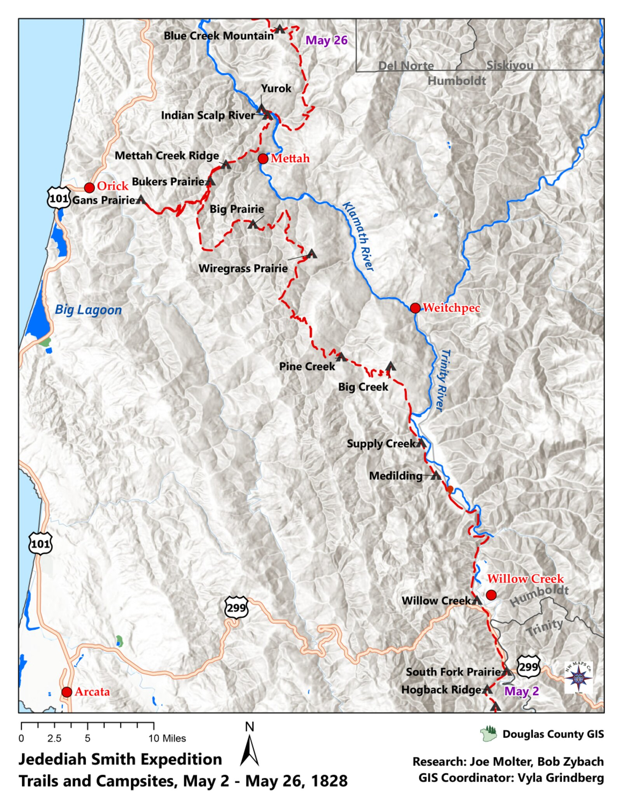
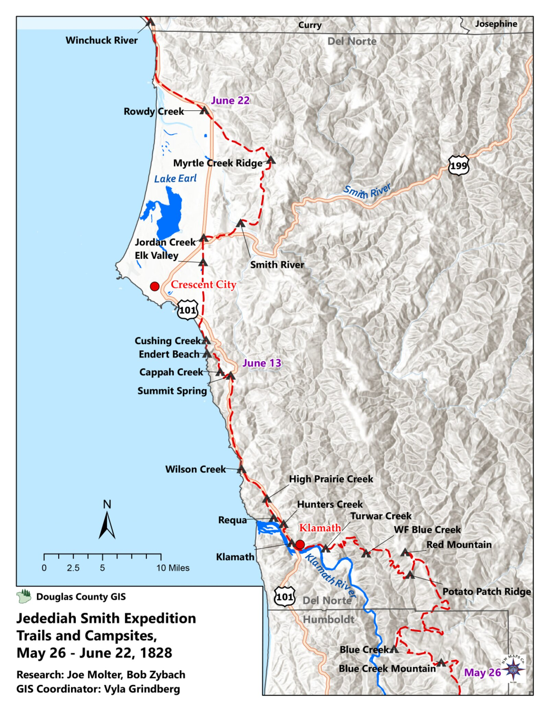
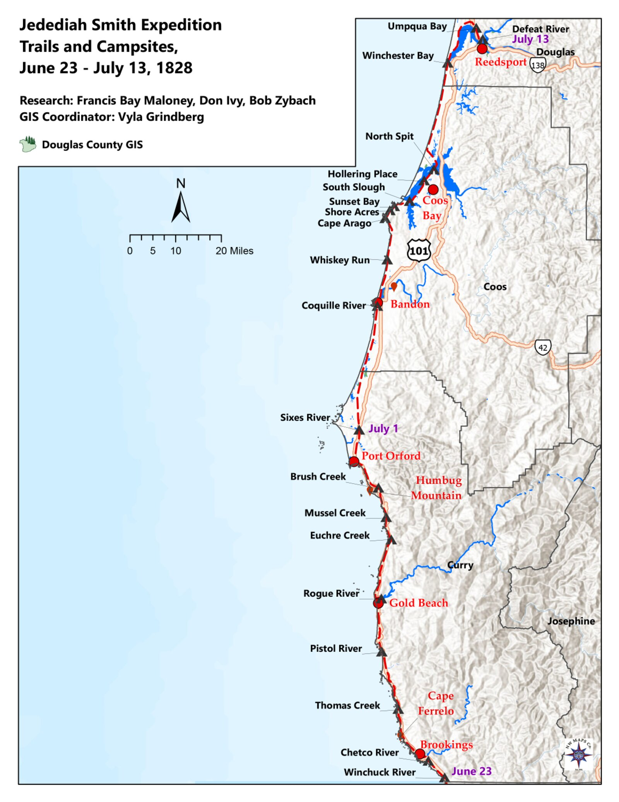
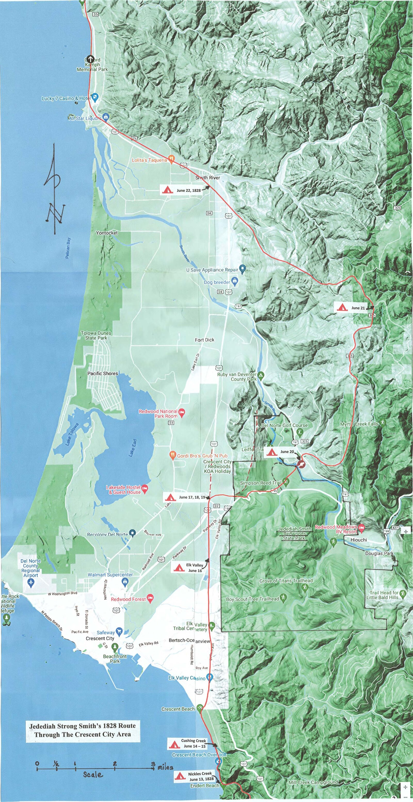
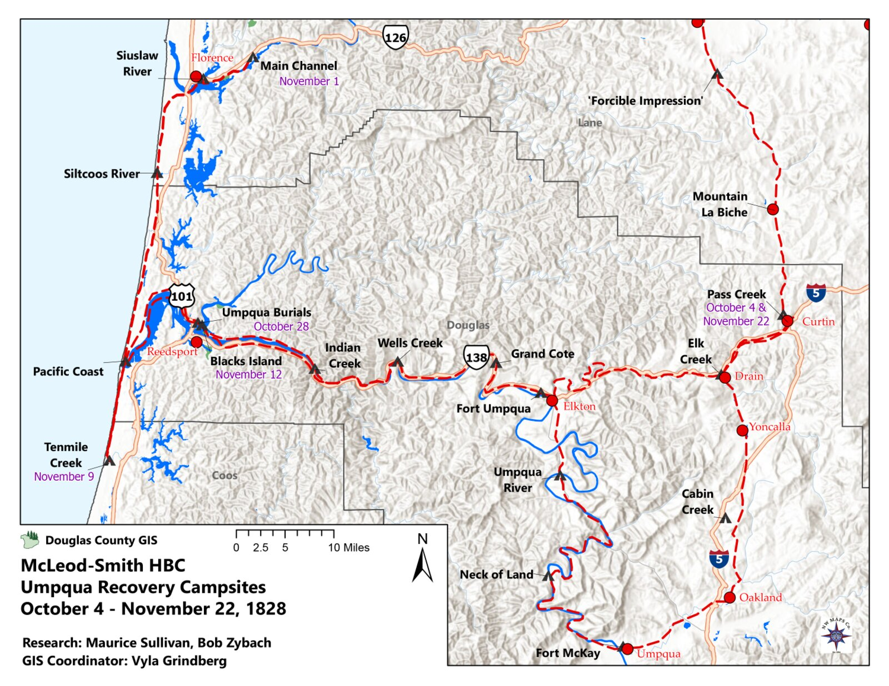

Jedediah Smith in Western Oregon, 1828
The Documentary Record — Red Bluff to the Umpqua to Washington — By Bob Zybach. Complete, audited first-draft assembly: Introduction + ten chapters, 2026-06-20. Pegged to the 2028 bicentennial.
This is the editable Word file — open it directly in Microsoft Word. No PDF conversion needed.
The dated campsite atlas for Smith’s 1828 march — the route, leg by leg, from the Sacramento Valley up the coast to the Umpqua and on toward Fort Vancouver. (ORWW campsite maps; research by Joe Molter, Francis Bay Maloney, Don Ivy, Maurice Sullivan and Bob Zybach; GIS by Kyle and Vyla Grindberg, 2023.) Full per-chapter figures come in a later draft.





Introduction
Jedediah Smith and the Road to Red Bluff
Jedediah Smith is remembered as one of the most important explorers in the early history of the American West, and the record earns the reputation. In the eight years between 1822, when he first went up the Missouri River with William Ashley’s fur brigade, and 1830, when he and his partners sold their company and he left the mountains, Smith covered more unmapped western country than any American of his generation. He was the first to do a number of things that later seemed inevitable and at the time were not.
He led the first documented party of Americans to reach California overland from the east, crossing the Mojave Desert into the Mexican province in 1826. Returning the next spring, he and two companions made the first known crossing of the Sierra Nevada from the California side, and the first recorded passage by Americans across the central Great Basin to the Great Salt Lake. And in 1828 — the journey this book is about — his march up the coast made his the first party to travel entirely by land from the Missouri country to the Willamette, and the first to open an overland route between the Hudson’s Bay Company post at Fort Vancouver and the Mexican settlements of California. He was also a mapmaker by habit rather than training, and his map of the western country was the best in existence for more than twenty years; the Hudson’s Bay Company used it during that time.
I have written this book about the Oregon part of that life — the spring and summer of 1828, from the turn west at Red Bluff to the attack at the mouth of the Umpqua and the long walk out — but the journey only makes sense against the man and the trade that brought him there. That is what this Introduction is for.
The boy from Bainbridge
Jedediah Strong Smith was born on January 6, 1799, at Bainbridge, in Chenango County, New York. His father was a storekeeper, also named Jedediah; his mother was Sally Strong. The family was of old New England stock, Methodist in religion, and large — Jedediah was one of better than a dozen children. When he was a boy the family moved west, first into Erie County, Pennsylvania, and later into the Western Reserve country of Ohio. The move from a settled town to raw ground was the ordinary experience of an American farm-and-store family of that generation, and the lifestyle that went with it was the common lifestyle of the northern frontier: a household that raised, hunted, or traded for most of what it ate; a log or frame house; schooling that was local and occasional; and neighbors who were a mix of other westering New Englanders and the Native people whose country the migration was crossing.
Smith got more schooling than most boys of his time and place. He could read, write a clear hand, and keep accounts, and later he kept field notes and wrote letters that historians still rely on. By one account a family friend, a Dr. Simons, put a copy of the published journals of Lewis and Clark into the boy’s hands. Whether or not that is the whole of it, the western country had hold of him early.
Up the Missouri, and the making of a mountain man
In 1822 Smith answered a notice placed in the St. Louis papers by William H. Ashley, calling for “enterprising young men” to ascend the Missouri for the fur trade. He went up the river that year with the Ashley–Henry brigade, and he learned the business quickly. Within a year he was leading men. In the same early period he survived the attack that marked him for life: a grizzly in the Black Hills country caught him, tore his scalp, and nearly took off an ear, and he carried the scars ever after.
The trade he had entered was being remade as he entered it. In place of the old system of fixed trading posts, Ashley built the business around an annual gathering in the mountains called the rendezvous — a yearly meeting at an appointed place to which a supply caravan hauled trade goods out from St. Louis, and from which it carried the year’s beaver back. The arrangement let the trappers stay in the mountains the year round and let the suppliers take their profit at both ends. The first rendezvous was held in the summer of 1825 on Henry’s Fork of the Green River, in what is now Wyoming, and the rendezvous became the rhythm of Smith’s working life: a season of trapping and traveling, then the gathering to resupply, settle accounts, and plan the next year’s range.
At the rendezvous of 1826 Ashley sold his share of the business to three of his men — Jedediah Smith, David E. Jackson, and William Sublette — under a note signed on July 18, 1826. The new firm was Smith, Jackson & Sublette, the outfit later remembered, loosely, as the Rocky Mountain Fur Company. The men in this book were a part-owner and the employees of that firm. The partnership ran until 1830, when the three sold out and Smith started home to St. Louis.
Twice to California
Smith took a brigade overland to California twice, and both trips bear directly on why he was at Red Bluff in 1828.
The first expedition left the 1826 rendezvous in August. Smith worked south and west from the Great Salt Lake, down to the Colorado River, across the Mojave Desert, and over the mountains into Mexican Alta California — the first documented American overland entry into California from the east. The Mexican authorities did not welcome an armed party of foreign trappers. Smith was detained, questioned, and ordered out. He left most of his men and all of his furs in California and, in the spring of 1827, recrossed the Sierra Nevada with two companions and pushed across the Great Basin to the Salt Lake and that summer’s rendezvous — the two crossings noted above as firsts.
The second expedition left almost at once. Smith started back for California in the summer of 1827 to rejoin the men and the furs he had left behind, following close to his own outbound route of the year before. At the Colorado crossing, in the country of the Mojave, his party was attacked; about ten of his men were killed, and the survivors went on to California stripped of most of what they had. Entering the province a second time without permission, Smith was again taken up and jailed.
Why Red Bluff
That second arrest is the hinge of this book. Smith was released, as he had been before, on the security of a fellow American — a voucher and bond posted by a countryman who had married and settled at Monterey — and he was given two months to be gone from California.
By late December 1827 he had hired seventeen men and started up the Sacramento River Valley with a herd of 330 California horses and mules, which he meant to sell once the party reached the Rocky Mountains. They trapped beaver as they went, illegally, working slowly up the flooded valley and looking the whole way for a safe pass east over the Sierra Nevada. They did not find one. The mountains held them off and the water kept rising. When the party reached the site of present-day Red Bluff, California, on April 10, 1828, Smith made the decision this book is built around: blocked from going east, he turned west toward the Pacific, meaning to head north up the coast to Oregon and to Fort Vancouver, country that was well traveled from the Columbia back to the Rockies. It was the long way home, and it would prove the most costly road he ever took. It was also new ground — no party of his kind had crossed the country he was about to enter.
[FIGURE — Map: the route from Red Bluff to the mouth of the Smith River, April–July 1828.]
How this book is built
I have divided the story into five parts. This Introduction is the first. The four that follow carry the journey itself: Red Bluff to the Smith River; up the coast to the Umpqua and the events leading to the attack; the attack at the mouth of the Smith River on the morning of July 14, 1828; and the long way to Fort Vancouver, the Hudson’s Bay Company recovery, and Smith’s road home and on toward Washington. The narrative runs from Red Bluff to Washington, D.C., across the years 1828 to 1831, and it is told as much as possible in the words of the people who were there — Smith and his men, the officers of the Hudson’s Bay Company, and the official record — quoted directly throughout.
The single most important of those voices is Harrison Rogers, the clerk and journalist of the expedition, who kept a daily journal in 1828. His last entry was written on July 13, the night before the attack, and the journal itself survived the massacre and was recovered by the Hudson’s Bay Company that fall. Wherever a dated entry appears in this book in that plain old hand, spelling and all, it is Rogers in 1828; the commentary around it is mine. Two hundred years separate his journey from its retelling — 1828 to 2028 — and the modern Jedediah Smith Society, whose members keep this history on the ground, walks the route still.
A note on the man
Jedediah Smith was an unusual figure even among the mountain men who became famous. He carried a Bible and read it, and he is said not to have sworn or drunk. He bore the grizzly’s scars for life. Of the three great attacks on mountain-man parties in this era, he was the only man caught up in all three, and he came out of each one alive — the last of them the attack this book is about. He did not live long after. He left the mountains in 1830, and in 1831, on the Santa Fe trade, he rode out alone to look for water near the Cimarron River and was killed by Comanches. He was thirty-two years old. His map of the western country outlived him by twenty years.
That is the man, and that is the road to Red Bluff. The rest of this book is what happened after he turned west.
Sources
Author-date entries; works drawn on for this Introduction. Items marked [CITE PENDING] need your source confirmation before print. Citation method per your instruction: author-date, full list here, no footnotes.
- Dale, Harrison Clifford. 1918. The Ashley–Smith Explorations and the Discovery of a Central Route to the Pacific, 1822–1829. [CITE PENDING — confirm edition / any pages you want carried.]
- Gowans, Fred R. 1985. Rocky Mountain Rendezvous: A History of the Fur Trade Rendezvous, 1825–1840. [CITE PENDING — used for the rendezvous system and the 1825 Henry’s Fork date; can rest on Morgan alone if you prefer.]
- McLoughlin, John. 1828. Letter of August 10, 1828, on the arrival of Smith and Black at Fort Vancouver (Hudson’s Bay Company correspondence). Source on file:
References/Mcloughlin_18280810.pdf. [CITE PENDING — confirm the published edition you cite for HBC letters.] - Molter. [n.d.] Campsite data, Jedediah Smith expedition route. [CITE PENDING — confirm full author/title/date and citation form; your 2023 Rendezvous illustrations folder contains “Molter”-credited files — confirm whether the same.]
- Morgan, Dale L. 1953. Jedediah Smith and the Opening of the West. Indianapolis: Bobbs-Merrill. [The standard biography; the spine for Smith’s life away from the 1828 journey. CITE PENDING — confirm edition / pages.]
- Rogers, Harrison G. 1828. Field journal, May–July 1828 (last entry July 13, 1828); recovered by the Hudson’s Bay Company expedition under Alexander Roderick McLeod, fall 1828. Source on file:
References/Rogers_1828.pdf. [CITE PENDING — confirm the published transcription you quote and its pages.] - Zybach, Bob. 2008. The Umpqua Massacre. Eugene, Oregon. Narrative summarized from the author’s November 4, 1987 Oregon State University research report, “A. Black, Jedediah Smith, and the Commercial Pack Trails between the Site of the Umpqua Massacre and Fort Vancouver, Oregon, in 1828.” Sources on file:
References/Zybach_20080818.pdf(and.docx). [CITE PENDING — confirm the full 1987 report title/archive/call number you want listed.]
Notes & open questions for Bob
- Childhood / lifestyle, and whether to repeat it. Your prompt flags the childhood-and-parents’-lifestyle material as common to every Smith and Carson chapter and asks whether it needs repeating. I established it once here, compactly, and would refer back to it later rather than retell it. Your call on how much to expand it in this Introduction.
- The Red Bluff–to–Smith River map (“Map Red Bluff to Smith River. ChatGPT?”). I left a figure placeholder in “Why Red Bluff.” We can generate this map from Rogers’ daily courses and distances, or source one from your JSS guidebooks — tell me which and I’ll have it produced (permissions to confirm if we reuse an existing map).
- “Molter” campsite data. Listed in Sources as pending; campsite citations would mostly fall in the journey chapters, not this Introduction. Confirm the full citation and whether it’s the same “Molter” credited on your 2023 Rendezvous images.
- One authority or several. I leaned on Morgan (1953) for the life-away-from-Oregon facts and kept the rest of the list lean. If you’d rather cite Morgan alone for the biographical runway, say so and I’ll drop the others.
- Two numbers to keep straight. Your 2008 narrative gives 330 horses and mules at the start up the Sacramento and 228 horses and mules (with 780 beaver, 50+ sea-otter skins; HBC later buying the remains for $3,200) at the time of the attack. Both are yours, for two different moments — flagged so the book stays consistent wherever each appears.
- The 1831 death date. Standard sources put the death itself at May 27, 1831; your 2008 narrative phrases it as the day he rode out to look for water. I left the exact date out of the body — tell me the wording you want.
- The five-part division. I followed your prompt’s segmentation (Introduction; Red Bluff to Smith River; Smith River to Smith River; Fort Vancouver to Smith River; Fort Vancouver to Washington, D.C.) and described it in plain terms in “How this book is built.” Confirm the segment titles you want printed.
Two-Smiths guard: this is Jedediah Smith the explorer throughout; Greenberry Smith of the Carson book does not appear.
Chapter 1. The Decision to Turn West
On April 10, 1828, on the upper Sacramento River near the place we now call Red Bluff, California, Jedediah Smith made the decision this book is built around. Blocked from the mountain passes that would have carried him east toward home, he turned his party west, toward the Pacific, and set his course for the long way around through Oregon. Everything that follows in these pages — the redwoods, the dead horses on the beaches, the welcome sound of the Chinook trade language on the southern coast, and the morning of July 14 at the mouth of the Smith River — proceeds from that single turn.
To understand why one man’s change of direction matters, it helps to know who was standing on that riverbank, why he was there, and what he was up against. I set the man and the predicament here, briefly, before quoting the record of the day itself. The fuller account of Smith’s life and the fur trade that brought him to California is given in the Introduction; this chapter takes up the story at the point where the road home ran out and a new one had to be chosen.
The man on the riverbank
Jedediah Strong Smith was twenty-nine years old in the spring of 1828, and already one of the most widely traveled Americans then living. He was born January 6, 1799, at Bainbridge, in Chenango County, New York, the son of a storekeeper of the same name; he had gone up the Missouri River in 1822 with William Ashley’s fur brigade, learned the trade quickly, and within a few years was leading men and ranging country no American had mapped. By 1826 he was a part-owner of the trapping firm of Smith, Jackson & Sublette — the outfit later remembered, loosely, as the Rocky Mountain Fur Company — and it was as the head of that firm’s California brigade that he came to be on the upper Sacramento.
Smith was an unusual figure even among the mountain men who became famous in that era. He carried a Bible and read it; he is said not to have sworn or drunk; he kept field notes in a clear hand and drew maps by habit rather than training. He bore for life the scars of a grizzly that had caught him in the Black Hills country in 1823 and very nearly taken off an ear. He was a careful, deliberate man in a reckless trade, and the deliberation shows in the journal he kept. Where another leader might have recorded only the day’s miles, Smith set down the reason behind a decision — which is why the turn at Red Bluff survives not as a guess but as a documented act.
He had also, by his own account, gone west for reasons beyond beaver. When he left the mountain rendezvous in the summer of 1827 to return to California — the journey that put him at Red Bluff the following spring — he wrote down what he was after:
My preparations being made I left the Depo on the 13th July 1827 with eighteen men and such supplies as I needed. My object was to relieve my party on the Appelamminy and then proceed further in examination of the country beyond Mt. St. Joseph and along the sea coast. I of course expected to find Beaver, which with us hunters is a primary object, but I was also led on by the love of novelty common to all, which is much increased by the pursuit of its gratification.
Two things in that single passage are worth holding onto, because they explain the whole chapter. First, the object Smith named for himself — “examination of the country beyond Mt. St. Joseph and along the sea coast” — was the Oregon coast, the very ground he would later be forced onto. The westward turn was not, at root, an accident of the moment; it was an extension of what he had come to do, made urgent by circumstances he did not control. Second, “the love of novelty common to all.” That is the closest Smith comes anywhere in the journal to stating a motive of pure exploration, and it is a useful corrective to the picture of the mountain man as nothing but a hunter chasing pelts. He was a hunter, and he says so plainly — beaver was “a primary object.” But he was also a man drawn to unknown country for its own sake, and that disposition is part of why, when the eastern passes failed him, he chose the unmapped coast over a retreat the way he had come.
[FIGURE 1.1 — Portrait or commemorative likeness of Jedediah Smith. (No life portrait of Smith is known to exist; the standard image is a posthumous reconstruction. Confirm with Bob which likeness to use, or whether to caption the absence.) PERMISSION / SOURCE TBD.]
A country that did not want him
California in 1828 was a province of Mexico, and Mexico did not welcome armed parties of foreign trappers wandering its interior. The suspicion of the authorities was, in fact, partly correct: American trappers ranging through Mexican territory amounted to a kind of advance survey of ground the United States might one day claim, and the Mexican officials understood this clearly. Smith had entered Alta California once before, in late 1826, and been detained, questioned, and ordered out. He had recrossed the Sierra Nevada in the spring of 1827 to carry word and resupply, and then turned straight around and come back — the second expedition, the one that ends at the mouth of the Umpqua. Entering the province a second time without permission, he was again taken up.
In my 2008 narrative I summarized the predicament this way, and it remains the plainest statement of how he came to be where he was:
The story begins in California, which was still part of Mexico in 1828. Jedediah Smith had been caught and jailed a second time for entering the country illegally with an expedition of Americans, for the purpose of trapping beaver and taking the pelts back to the US for sale. The suspicion was that he was trying to help the US lay claim to Mexican lands by way of exploration and commercial development. In this instance, he was released from confinement based on a voucher and bond posted by a fellow American who had married and settled in Monterey. He was given two months to leave California. By late December 1827, Smith had hired seventeen men and began to journey up the Sacramento River Valley with a herd of 330 California horses and mules that he planned to sell once they returned to the Rocky Mountains.
The “fellow American who had married and settled in Monterey” was Captain John Rogers Cooper, a Boston shipmaster who had become a Mexican citizen and a man of standing in the province; he posted the bond and stood as surety for Smith’s conduct and departure. The negotiations behind that release are recorded in Smith’s journal in some detail, and they are worth pausing over, because they fix the terms of the deadline that would push him onto the Oregon coast.
The governor — Smith calls him simply “the Genl,” meaning Governor José María de Echeandía — first tried to bind Smith never to return to California “on any pretense whatever,” and to confine him within fixed limits. Smith records the contest in his own words:
After Capt Cooper was appointed agent the Genl wished him not only to become responsible for my good conduct until I left California but also to insure that I should [not] return again to the country on any pretense whatever. I would not agree to such a restriction and after a short contest the Genl consented to drop it.
The governor pressed three times to send Smith to Mexico City for the authorities there to decide his case — a delay that could have cost the season — and three times Smith refused, insisting he would leave overland with the men he had rather than wait:
The Genl said on those conditions I could take my choice of three things either to wait until he could receive orders from Mexico. Or I might go there as an opportunity would offer in 8 or 12 days or I might go away with what men I had in the same direction by which I had come in. He insisted that I should travel the same route by which I arrived and in preventing me from hiring more men he calculated I would be afraid to travel with the number of men I had and consequently he would retain me in the country until he could receive orders from Mexico. But I told his excellency I would go if I had but 2 men.
This passage matters for two reasons. First, the governor wanted Smith to leave the way he had come — south and east, back across the desert and the mountains by his outbound route. Smith never agreed to that, and in the end did not do it; the road he actually took was north and then west, the long way, and the difference is the subject of this book. Second, the exchange shows the character of the man under pressure: outnumbered, jailed, and bargaining for his liberty, he gave ground on small things and held firm on the one that mattered — his freedom to move on his own judgment.
The bond was signed in November 1827. Echeandía at first wished to hold Smith above the 42nd parallel of latitude — the line that would later become the Oregon–California boundary — but settled for a guarantee, posted through Cooper, that Smith “should not hunt on the sea coast south of the 42nd parallel of latitude but within Land wherever my Government might permit.” Three copies of the bond were made: one to go to Mexico City, one for the governor, one for Cooper and Smith. And the governor, after objecting to the purchase of livestock, finally granted Smith permission to buy a hundred mules and fifty horses. That permission is the origin of the herd that would die, animal by animal, along the Oregon beaches in the months to come.
[FIGURE 1.2 — Map: Alta California in 1828, showing Monterey, San Francisco Bay, the Sacramento (“Buenaventura”) Valley, and the line of the 42nd parallel. Cartography TBD; base map and permissions to confirm with Bob.]
“I was anxious to be off”
The deadline Smith carried was two months, and as it ran out the Mexican officials placed one last obstacle in his way. Smith’s instructions were to cross the lower Sacramento near San Francisco Bay under a soldier escort; but at the crossing he could find no boat large enough to ferry his goods, and the commandant — “Don Lewis,” Lieutenant Ignacio Martínez — would not let him move upriver to a place he could swim the horses and raft the baggage across. Smith records his decision to stop waiting:
The time which the Genl had given me to remain was nearly expired but I found it entirely impossible to procure a Launch to take me across the river without which it was impassible… I apparently acquiesced but left him with a determination fixed to take my own course without waiting for their tardy Movements which the situation of my finances would not permit.
He had, by then, sold his furs, bought his livestock, repaired his guns at the mission shop at San José, and gathered his men. The party was poorer than it should have been — a man Smith had hired to buy horses, a Mr. Garnier, had lost nineteen head, which Smith sold off for twenty-five dollars — but it was ready. “All my preparations being completed for moving off to the North,” he wrote, “I was anxious to be off as soon as possible.” By late December 1827 he started his herd and his seventeen men up the Sacramento River Valley, trapping beaver as he went, working slowly north up the drowned winter floodplain, and looking the whole way for a pass that would let him turn east over the Sierra Nevada and start for the Rocky Mountains and home.
A word here about the river, because the journal will not make sense without it. Throughout the spring entries Smith calls the Sacramento the “Buenaventura River.” The Buenaventura was a river that did not exist — a great waterway that mapmakers of the day believed ran from the Rocky Mountains west across the Great Basin to empty into San Francisco Bay, offering a water route to the Pacific. Smith, like others, half-expected to find it, and he attached the name to the largest river he met flowing into the bay from the north. When the reader sees “Buenaventura” in the entries that follow, the river on the ground is the Sacramento; the name is a relic of a geography that was about to be corrected, in part by this very journey. Smith’s mountain to the east, “Mt. St. Joseph,” is the Sierra Nevada.
The mountains hold him off
Through the winter and into the spring of 1828 the party worked up the Sacramento, and the journal becomes a daily record of a man looking for a way out and not finding one. The valley floor was flooded; the sloughs forced long detours; horses drowned at the crossings. The eastern mountains, when Smith could see them, were white with snow. He trapped as he traveled — the daily beaver counts run through the entries like a pulse, ten and twelve and seventeen a day — but the trapping was the business of the journey, not its purpose. The purpose was the pass, and the pass would not come.
By the first week of April the party had pushed near the head of the valley, into the broken, rocky country where the foothills crowd the river. On April 8 Smith climbed a spur of the main range to take stock of the ground ahead. What he saw was not encouraging: the Sierra still ranged north and south across his path, and although the snow on the visible summits had thinned with the season, the mountain was a wall. The next day, April 9, was rainy, with a south wind, and the party lay still.
Then came April 10, and the turn. Here is the day in Smith’s own hand — the central document of this chapter, and of the book:
10th April N W 6 miles. I moved on with the intention of traveling up the Buenaventura but soon found the rocky hills coming in so close to the river as to make it impossible to travel. I went on in advance of the party and ascending a high point took a view of the country and found the river coming from the N E and running apparently for 20 or 30 Miles through ragged rocky hills. The mountain beyond appeared too high to cross at that season of the year or perhaps at any other.
Believing it impossible to travel up the river I turned Back into the valley and encamped on the river with the intention of crossing. For this purpose I set some men at work to make a skin canoe. My Camp seemed in a curve of the Mountain. Mt. Joseph gradually bending to the west appeared in conjunction with the low range on the west side of the river which in its course north joined it to encircle the sources of the Buenaventura.
That is the decision, stated as plainly as Smith ever stated anything. He had meant to keep going up the river — north and east, toward the mountains and, he hoped, a pass through them to the Great Basin and the road home. He rode ahead, climbed for a view, and read the country honestly: the river ran off into “ragged rocky hills,” and “the mountain beyond appeared too high to cross at that season of the year or perhaps at any other.” The phrase is worth weighing. Smith was not a man given to exaggeration in his journal, and “or perhaps at any other” is his sober conclusion that the wall to the east was not merely a winter problem but very likely a permanent one for a party burdened with a herd. He had no map that showed him a pass, because no such map existed; he had only what he could see, and what he could see closed the eastern door.
So he turned. “Believing it impossible to travel up the river I turned Back into the valley.” He made camp, set his men to building a skin canoe to ferry the goods, and prepared to cross the Sacramento to its west bank — the first physical step of the new course. On April 11 the canoe was finished, the goods went over, the horses swam, and the party was across, with the loss of a single colt drowned in the current. The road home no longer ran east. It now ran west, to the coast, and then north — up a shoreline no party of his kind had ever crossed — toward the Hudson’s Bay Company post at Fort Vancouver and the well-traveled country beyond it, back to the Rockies.
It was, by any measure, the long way around. From Red Bluff the straight line home lay east, over the mountains Smith had just judged impassable; the route he chose instead would carry him hundreds of miles north and west to the sea, then hundreds more up the Oregon coast, before it ever bent back toward the mountains. He took it because it was the only road left open, and because — as his stated object and his “love of novelty” both suggest — the unknown coast was, for this particular man, less a last resort than the country he had partly come to see. It would prove the most costly road he ever traveled.
[FIGURE 1.3 — “Jed’s Overlook” interpretive panel, BLM ground above the Sacramento Valley, established 2012; the modern marker of the country Smith surveyed before turning west. Photo courtesy Jedediah Smith Society (JSS). PERMISSION PENDING.]
What the turn set in motion
Smith could not have known, on April 10, what his change of direction would come to. He recorded it as a practical matter — a blocked river, a wall of mountains, a skin canoe — and moved on to note the day’s six miles and his ten beaver. But the maps had been waiting for exactly this. By turning west and then north, Smith put his party into country no one of his kind had crossed, and he stitched together a route that no American had traveled whole.
In my 2008 narrative I set down what that route amounted to, and it bears repeating here as the frame for the chapters to follow:
When they reached present-day Red Bluff on April 10, 1828, he made the decision to turn west toward the Pacific, and then head north to Oregon and HBC Fort Vancouver; which was well-traveled from that point to the Rockies. These were the first white people, horses, black man, and mules known to enter the redwoods, and after a few skirmishes with local Indians, they reached the ocean on June 8 and headed north toward Oregon along the coast. Smith River, California was named because of this entry, and Jedediah Smith State Park also commemorates the event. The Smith party would become the first to travel entirely by land from the Missouri to the Willamette, and the first to open an overland trade route between Fort Vancouver and San Francisco.
Each of those firsts is a consequence of the turn at Red Bluff. Had Smith found his pass and crossed the Sierra eastward, there would be no Smith River in California, no Jedediah Smith Redwoods State Park, no overland connection opened between San Francisco and the Columbia, and — this is the hard part of the story — no massacre at the mouth of the Umpqua, because the party would never have come to Oregon at all. The decision that opens this book is the decision that made everything else in it possible, the achievements and the catastrophe alike.
The journal carries the proof that the turn, once made, held. Through the rest of April and into May the party worked west out of the valley and then struggled to find any passable line along the coast; entry after entry records Smith forced “towards the coast” by country too rough to cross inland. The drowned colt of April 11 was the first of a herd’s worth of losses; the daily beaver counts give way, in the coastal entries, to a daily reckoning of animals shot with arrows, drowned at river crossings, and fallen from cliffs. The seventeen men and the herd that started up the Sacramento in December were carried, day by documented day, toward the Oregon line — which they would reach on June 23, 1828, camping on the north side of the Winchuck River, the subject of the chapter that follows.
There is one more thing to say about April 10, and it concerns how this history is kept today. The bicentennial of Smith’s journey falls in 2028 — two hundred years, almost to the day, from the turn at Red Bluff to the writing of this book. The Jedediah Smith Society, whose members walk the route and tend its markers, keeps the 1828 story alive on the ground; the interpretive panel above the Sacramento Valley stands roughly where Smith climbed for his last look east. The man who wrote “the mountain beyond appeared too high to cross” and then quietly turned his herd toward the sea did not live to see any of it commemorated. But the road he chose on that one rainy April day is the road this book follows, from Red Bluff to the Umpqua and, in the end, all the way home.
[FIGURE 1.4 — Page from Jedediah Smith’s second-expedition journal, opened to the entry of April 10, 1828 (“the mountain beyond appeared too high to cross… I turned Back into the valley”). Source repository and reproduction permission TBD — confirm with Bob.]
Sources
Author-date entries; works drawn on for this chapter. Items marked [CITE PENDING] need Bob’s source confirmation before print. Citation method per Bob’s instruction: author-date, full list here, no footnotes. The primary record block-quoted in this chapter is Jedediah Smith’s own journal; the framing narrative is Zybach 2008.
- Echeandía, José María de. 1827. Bond and passport terms for Jedediah Smith, posted through Captain John Rogers Cooper, Monterey, November 1827, as recorded in Smith’s journal (see Smith 1827–1828). [CITE PENDING — confirm whether to cite the underlying Mexican/HBC documents directly or rely on the journal record, and confirm Cooper’s full identification.]
- Morgan, Dale L. 1953. Jedediah Smith and the Opening of the West. Indianapolis: Bobbs-Merrill. [The standard biography; used here for the identification of Governor Echeandía and Captain Cooper, the Monterey setting of the second arrest, and the corroboration of the April 10, 1828 Red Bluff turn. A bond figure of $30,000 appears in secondary accounts deriving from Morgan; Smith’s own journal records the bond’s terms but not a dollar amount — see Notes. CITE PENDING — confirm edition / pages.]
- Smith, Jedediah S. 1827–1828. Journal of the Second Expedition to California, 13 July 1827 – 3 July 1828. Transcription used: the online edition at mtmen.org (Mountain Men and the Fur Trade), “Jedediah Smith’s Journal — Second Expedition to California.” Source on file:
References/Smith's Journal - Second Expedition to California.pdf. Original spelling and punctuation retained in all quotations. [CITE PENDING — confirm the published scholarly edition Bob wishes to cite (e.g., the Brooks or Sullivan edition of Smith’s journals) and supply page citations for the quoted passages; the mtmen.org text is a working transcription.] - Zybach, Bob. 2008. The Umpqua Massacre. Eugene, Oregon, August 18, 2008. Narrative summarized from the author’s November 4, 1987 Oregon State University research report, “A. Black, Jedediah Smith, and the Commercial Pack Trails between the Site of the Umpqua Massacre and Fort Vancouver, Oregon, in 1828.” Sources on file:
References/Zybach_20080818.pdfand.docx; 1987 reportReferences/Zybach_DRAFT_19871214.pdf(scanned; not machine-readable). [CITE PENDING — confirm the full 1987 report title/archive/call number to be listed, and whether to cite the 1987 report directly for any figure used here.]
Notes & open questions for Bob
The April 10 turn as the book’s keystone — confirm the framing. I built this chapter so that Smith’s own April 10 journal entry (“the mountain beyond appeared too high to cross at that season of the year or perhaps at any other… I turned Back into the valley”) is the central block quote and the literal hinge of the book. This is the strongest primary anchor we have for your “decision to turn west.” Confirm you’re comfortable resting the chapter on Smith’s journal as the document of the day; the 2008 narrative supplies the frame, but the act is in Smith’s hand.
The bond amount ($30,000). Your 2008 narrative records the release “based on a voucher and bond posted by a fellow American who had married and settled in Monterey” but gives no dollar figure. Secondary sources (deriving from Morgan 1953) state a $30,000 bond. Smith’s journal records the bond’s terms in detail (Cooper as surety; the 42nd-parallel limit; permission to buy 100 mules and 50 horses) but I did not find a dollar amount in the journal itself. I kept the figure out of the body and flagged it in Sources. Tell me whether to state “$30,000 (per Morgan)” in the text or leave it out.
Governor and commandant names. Smith’s journal refers to “the Genl” (Governor José María de Echeandía) and “Don Lewis” (the San Francisco commandant, Lieutenant Ignacio Martínez), and to “Capt Cooper” (John Rogers Cooper). I identified all three by name from the standard accounts (Morgan 1953). Confirm these identifications and the spellings you prefer; if you’d rather keep them as Smith wrote them (“the Genl,” “Don Lewis”), I can strip the modern names back out.
“Buenaventura” = Sacramento; “Mt. St. Joseph” = Sierra Nevada. I included a short explanatory paragraph so the reader can follow Smith’s place-names. Confirm you want this kept, and whether you’d like a parallel note on the mythical Buenaventura River as a piece of the larger “opening of the West” theme (it ties neatly to your map-correction point).
Seventeen vs. eighteen men. Smith’s journal opens the second expedition with “eighteen men” (July 13, 1827); your 2008 narrative gives “seventeen men” at the start up the Sacramento in late December 1827. Both are correct for their moments — the party’s count changed over the months (men were left in California, lost, or added). I used eighteen for the 1827 departure from the rendezvous and seventeen for the December push up the valley, matching each source to its date. Flagged so the book stays consistent wherever each appears.
330 horses and mules. I carried your 2008 figure of 330 head at the start up the Sacramento. (Per the Introduction’s note, this is distinct from the 228 head at the time of the July 14 attack — two different moments. Both are yours.) Smith’s journal records Echeandía’s permission to buy 100 mules and 50 horses at Monterey, plus animals already held and purchased through Garnier; I did not attempt to reconcile the arithmetic to exactly 330 in the body. Confirm the 330 figure stands as your number for the December start.
No life portrait of Smith. Figure 1.1 is flagged because there is, to my knowledge, no contemporary portrait of Jedediah Smith from life; the familiar image is a later reconstruction. Tell me whether to use the standard reconstruction (with an honest caption) or to drop the portrait and open with the map instead.
Maps (Figures 1.2 and 1.3 / and the route map). This chapter wants two maps: Alta California in 1828 with the 42nd parallel, and the Red Bluff overlook / start of the westward route. These can be generated from Smith’s daily courses and distances or sourced from your JSS guidebooks. Tell me which, and permissions to confirm if we reuse existing maps.
Quoted spelling. All Smith quotations retain his original spelling, capitalization, and punctuation (e.g., “verry,” “Buenaventura,” “turned Back,” “Genl”), consistent with your method of quoting participants in their own words. Confirm you want the bracketed editorial insertions from the transcription (e.g., “[not],” “[s]”) kept or silently cleaned.
Two-Smiths guard: this is Jedediah Smith the explorer throughout. Greenberry Smith of the Carson book does not appear in this chapter.
Chapter 2. First Into the Redwoods
“These were the first white people, horses, black man, and mules known to enter the redwoods, and after a few skirmishes with local Indians, they reached the ocean on June 8 and headed north toward Oregon along the coast. Smith River, California was named because of this entry, and Jedediah Smith State Park also commemorates the event.” — Bob Zybach, The Umpqua Massacre (2008)
The turn at Red Bluff, told in the last chapter, was a decision made on paper of the mind: blocked from the Sierra Nevada, his two months in Mexican California nearly run out, Jedediah Smith pointed his brigade west toward the Pacific and then north toward the Columbia. This chapter is what that decision cost to carry out. Between the bluff above the Sacramento and the first long camp on the open beach lay nine weeks of the hardest pack-trail country the brigade would cross on the whole journey — a tangle of steep, brush-choked mountains, swollen rivers, and, on the seaward slope, the first stands of coast redwood that any party of Smith’s kind had ever pushed a horse herd through. The men came out the other side of it onto salt water. A great many of the animals did not come out at all.
The record for this leg is uneven, and I will be plain about that from the start. For the stretch from Red Bluff west and north to the coast, the daily journal of Harrison G. Rogers — the expedition’s clerk and journalist, whose hand carries most of this book — survives in scattered entries rather than an unbroken run, and the route itself is in places conjectural. Where I can quote Rogers, I do, in his own spelling. Where the journal is thin, I lean on his terser course-and-distance notes, on the later testimony Smith and Arthur Black gave at Fort Vancouver, and on my own field work in this country; and where the route or the date is uncertain, I say so rather than smooth it over. What is not uncertain is the shape of the thing: a westward break to the sea, a turn north along the surf, and a ledger of dead and dying horses that begins here and never really stops until the survivors reach the Columbia.
The country between the valley and the sea
To understand why this leg was so costly it helps to picture the ground. From the floor of the upper Sacramento Valley, the land rises west into a wide belt of steep, folded mountains — the southern Klamath and northern Coast Ranges — that stand between the interior and the ocean. There is no easy line across them. The ridges run at angles to a traveler’s course; the slopes are pitched and slick; and in the spring of 1828 the whole country was soaked, the creeks running high with snowmelt and rain. A man on foot, or a light party, could thread it. A brigade driving a herd of more than three hundred horses and mules, each animal packed with trade goods, beaver, and provisions, was a different matter. Horses cannot be reasoned with through a thicket. They balk, they scatter, they bog in the mire and break their legs on the rocks, and they have to be forced, one band at a time, through brush that closes again behind them.
On the seaward side of those mountains the brigade met the redwoods. The coast redwood, Sequoia sempervirens, grows in a narrow strip along the fog belt from the southern Oregon line down into California, and it grows nowhere else on earth. In the bottoms and on the lower slopes the trees stand in dense, shaded stands, their trunks running to ten and fifteen feet through and their crowns closing out the sky; beneath them is a understory of hemlock, cedar, hazel, briar, alder, and fern, and the ground is often wet and miry. It is magnificent country and, for a man trying to drive a packtrain through it, very nearly impassable. Rogers, who was a working clerk and not a naturalist, recorded the timber the way a tired man would — as an obstacle. Reading his entries now, with two centuries’ distance, one can see him pushing horses, day after day, through one of the great forests of the world without a word of wonder, because wonder was a luxury the trail did not allow.
It is worth saying clearly what the firsts of this chapter are and are not, because they are easy to overstate. Native peoples had lived in and traveled this country for thousands of years; the brigade followed Indian trails wherever it could find them, and Indian people met the trappers, fed them, traded with them, and sometimes fought them the whole way. The redwoods were not “discovered” in 1828. What can be documented is narrower and still remarkable: this was the first party of Americans and Europeans — the first white men, the first horses, the first mules, and, in the trapper Peter Ranne, the first Black man known to history — to bring a horse-and-mule pack brigade overland into the coast redwoods and out the other side to the sea (Zybach 2008). That is the claim the record supports, and it is the one this chapter makes.
The cost in animals begins
The toll on the herd did not wait for the redwoods. It began in the mountains east of the coast, and the single hardest day Rogers recorded on the whole crossing came weeks before the brigade reached salt water. On Saturday, May 10, 1828, working through the broken country between the valley and the sea, Rogers wrote:
SATURDAY, MAY 10TH, 1828. We made an early start this morning, stearing N.W. about 5 miles, thence W. 7 miles and encamped, on a small creek, and built a pen for our horses, as we could not get to grass for them. The travelling very bad, several very steep, rocky and brushy points of mountains to go up and down, with our band of horses, and a great many of them so lame and worn out that we can scarce force them along; 15 lossed on the way, in the brush, 2 of them with loads; the most of the men as much fatigued as the horses; one of the men, lossed his gun, and could not find it. We have had more trouble getting our horses on to-day, than we have had since we entered the mount. We crossed a creek close by the mouth 15 or 20 yards wide heading south, and emptying into the river east at an course, the current quite swift, and about belly deep to our horses. Some beavers sign discovered by the men. The day clear and warm. But one Ind. seen to-day; he was seen by Capt. Smith as he generally goes ahead, and I stay with the rear to see that things are kept in order. (Rogers 1828)
Read that entry for what it tells and for how it tells it. Fifteen animals lost in a single day, two of them with their loads — a heavy blow to a brigade whose whole purpose was to carry beaver and trade goods home, and whose horses were themselves the property Smith meant to sell at the end of the road. The men, Rogers says flatly, were “as much fatigued as the horses.” A rifle was lost and not found, which in this country was no small thing. And in his last lines Rogers does the small piece of bookkeeping that tells you how the brigade actually worked: Smith “generally goes ahead,” scouting and breaking trail, while Rogers stays “with the rear to see that things are kept in order.” That division — the captain forward, the clerk driving the strung-out tail of the column through the brush — is the daily reality behind nearly every entry in this chapter. When the animals fell behind, balked, or scattered, it was Rogers’ end of the line that felt it first.
What Rogers does not do is dramatize it. There is no lament, no reflection on what the losses might mean for the venture, no curse at the country. He counts the animals, notes the gun, fixes the day’s mileage and the creek’s width and depth, remarks that the day was clear and warm, and stops. This is the documentary temper of the whole journal, and it is why the journal is worth quoting at length rather than paraphrasing: Rogers was not writing for effect, and so when something does move him to a word — “pleasing news,” weeks later, at the first sound of Chinook — the word carries weight precisely because he spent so few of them.
The May 10 losses were the worst of a single day, but they were not isolated. From the turn at Red Bluff onward the journal becomes, more than anything else, a running account of animals dying in every way the country could kill them. They were lost in the brush; they gave out from exhaustion and were left behind; they fell from steep points of mountain and were killed; they drowned at the river crossings; later, on the Oregon coast, they would be shot full of arrows at the camps and, in one case, killed in a concealed Indian elk-pit (Zybach 2008). Of the herd that started up the Sacramento — 330 head, by the count carried into this book in the last chapter — only a fraction would survive to reach the Umpqua, where the brigade’s surviving stock would be tallied at 228 horses and mules (Zybach 2008; McLoughlin 1828). The arithmetic of that loss is one of the quiet through-lines of the whole journey, and it begins in the mountains of this chapter.
The first sight of the ocean, June 8
For most of late May and the first days of June the brigade worked its slow way through this country, trapping a little where there was beaver sign, hunting where there was game, and forcing the herd from camp to camp. Then, on Sunday, June 8, 1828, after a short, brush-fighting march, the party came out onto the Pacific. This is the day on which the whole chapter turns, and it deserves to be read in Rogers’ own hand:
SUNDAY, JUNE 8TH, 1828. As we intend moving camp, we was up and ready for a start, early, stearing our course N.W., about 3 1/2 miles over two small points of mou. and enc. on the sea shore, where there was a small bottom of grass for our horses. The travelling ruff, as we had several thickets to go through; it made it bad on account of driving horses, as they can scarce be forced through brush any more. There was several Ind. lodges on the beach and some Inds.; we got a few clams and some few dried fish from them. (Rogers 1828)
That is the whole of the day: three and a half miles, two small points of mountain, several thickets, a little bottom of grass, some Indian lodges on the sand, a few clams and dried fish, and the open ocean. Rogers does not mark it as anything out of the ordinary. He had no way of knowing that he was recording one of the genuine firsts of western American history — the arrival of the first overland pack brigade of his kind at the Pacific shore of the future state of California, by way of the redwoods. To him it was simply the day the trail finally ran out of mountains and met the sea, and the most pressing fact about it was that the horses “can scarce be forced through brush any more.”
But this is the moment the maps were waiting for. With the brigade’s eventual arrival at Fort Vancouver, Smith’s would become the first party to travel entirely by land from the Missouri country to the Willamette, and the first to open an overland route between the Hudson’s Bay Company post on the Columbia and the Mexican settlements of California (Zybach 2008). The crossing recorded so plainly in this entry is the reason the Smith River in California carries Smith’s name, and the reason Jedediah Smith Redwoods State Park, in the same corner of country, commemorates him today (Zybach 2008). The man whose clerk wrote, on June 8, only that “we got a few clams and some few dried fish from them” had in fact just stitched together, on foot and horseback, two halves of a continent — though it would be years before anyone, Smith included, could see the day for what it was.
A word is owed here to a wrinkle in the record, because this book’s method is to show the seams rather than hide them. My narrative summary of these events, written in 2008 and quoted at the head of this chapter, places the brigade’s arrival at the ocean on June 8 (Zybach 2008). Rogers’ June 8 entry, above, plainly describes coming out onto the sea shore that day. But the journal then shows the party turning back inland over more mountains, and it is the entry for Friday, June 13, that records the brigade “struck the ocean and enc. on the beach” again — the point from which it began, in earnest, to follow the coast north (Rogers 1828). The likeliest reading is the simple one: the brigade first touched salt water on June 8, at a beach it could not travel along, then was forced back up over the headlands and did not regain the open coast for good until June 13. The two dates are not a contradiction so much as a picture of how rough this seam of coast is — close enough to reach and too steep to follow. I have kept June 8 as the date of the first sight of the ocean, as my narrative has always given it, and I flag the relationship between the two dates plainly so that a careful reader, and Bob, can weigh it. (See the Notes at the end of this chapter.)
Down to the beach for good: June 13
Whatever the brigade saw on June 8, the country did not release it to the coast easily. For several more days the men fought the seaward slope of the mountains — the redwood-and-cedar belt at its worst — before they finally came down to a beach they could travel. Rogers kept that stretch in two registers, and it is worth seeing both, because together they show how he worked. He carried a terse course-and-distance log, the bare navigational skeleton of each day, and alongside it the fuller daily journal. For Friday, June 13, the two run side by side. The log:
June 13th North N West along a ridge in places rough with thickets and rocks. At night descending to and encamping on the shore where there was but little grass. In the course of the day 3 Mules gave out and were left one load was lost and one [mule] horse was disabled by falling down a ledge of rocks. (Rogers 1828)
And the journal entry for the same day:
FRIDAY, JUNE 13TH, 1828. We made an early start again this morning, stearing N.W., about 6 m., and struck the ocean and enc. on the beach. Plenty of grass on the mountain for our horses, but very steep for them to climb after it. The traveling very mountainous; some brush as yesterday. 2 mules left today that give out and could not travel; one young horse fell down a point of mou. and killed himself. The day clear and pleasant. (Rogers 1828)
Set the two side by side and you can watch the herd dying twice in one day’s record — three mules gave out in the log, two in the journal; a horse disabled on a ledge of rocks in the one, a young horse killed falling down a point of mountain in the other. The small discrepancies are not errors to be scolded; they are the ordinary slippage of a man keeping two accounts of the same exhausting day by firelight, and they are themselves evidence of how the losses came: not in one catastrophe but in a steady daily drip, two and three animals at a time, on every kind of ground. “Plenty of grass on the mountain for our horses,” Rogers notes, “but very steep for them to climb after it” — a single sentence that holds the whole cruelty of this country for a packtrain. The feed was there; the animals were too spent to climb to it.
From June 13 the brigade was, at last, on the coast it would follow north into Oregon. But the redwood country had not finished with it. The next week’s entries are a study in a herd trying to recover and a country that would not let it. On Saturday, June 14, the men traveled barely a mile along the surf — “we travelled in the water of the ocean 3 or 4 hundred yards, when the swells some times would be as high as the horses backs,” Rogers wrote — and then laid by (Rogers 1828). On Sunday, June 15, they rested the stock and hunted, and the day produced one of the few notes of plain abundance in the whole leg.
A country of plenty for the men, ruin for the horses
The same coast that was killing the brigade’s animals was, for the men, richer in food than almost any ground they had crossed. On June 15, the day of rest, the hunter Joseph Lapoint brought in an elk so large that Rogers — or Smith, in the parallel notes — actually weighed the meat:
SUNDAY, JUNE 15TH, 1828. Several men started hunting early, as we intended staying here to day and letting our horses rest. Joseph Lapoint killed a buck elk that weighed 695 lbs., neat weight; the balance of the hunters came in without killing. A number of Inds. visited our camp again to day, bringing fish, clams, strawberrys, and a root that is well known by the traders west of the Rocky mountains by the name of commeser, for trade. All those articles was soon purchased. The day cloudy, windy, and foggy, some rain in the afternoon. Cap. Smith and Mr. Virgin went late in the evening to hunt a pass to travel and found a small band of elk and killed two. (Rogers 1828)
A 695-pound elk, “neat weight” — that is, dressed — is an enormous animal, and the men were impressed enough to put it on a scale; the parallel note records that with the tongue and the small pieces it would have run above 700 pounds (Rogers 1828). Around that windfall of meat the camp filled with the ordinary commerce of the coast: Indians coming in with fish, clams, strawberries, and the root Rogers calls “commeser” — the camas that was a staple of the whole Northwest, “well known by the traders west of the Rocky mountains.” This is the paradox of the leg. The brigade was starving its horses to death in some of the best hunting and gathering country on the continent. The men ate elk and salmon and berries; the animals, who could not eat any of it, climbed and bogged and fell and died.
The June 15 entry also shows the daily labor that lay behind every mile of progress: while most of the men rested or hunted, “Cap. Smith and Mr. Virgin went late in the evening to hunt a pass to travel.” Smith was almost always out ahead, looking for a way through. Several of the entries in this week are entirely about that search — men sent toward the ocean and toward the ridges to find a road, returning to report a lake or a bay or a wall of brush that turned the brigade back. On June 17, halted by “thick timber and brush and swamps,” Smith’s scouts found the way impassable near the shore; the party went back to a prairie to dry meat and look again (Rogers 1828). What modern eyes would call the redwood lowland — Rogers’ “ceador, hemlock of the largest size, under brush, hazle, briars, aldar, and sundry other srubs,” on a “very rich and black” soil — was to the brigade a maze to be escaped, not a marvel to be admired (Rogers 1828).
The scale of that timber comes through plainly a week on. By Sunday, June 22, working back down toward the coast through heavy forest, Rogers recorded trees of a size that can only be the redwoods and their giant associates:
SUNDAY, JUNE 22. We made an early start again this morning, directing our course N.W., in towards the ocean, as the travilling over the hills E. began to grow very rocky and brushy, and travelled 5 m. and enc. in a bottom prararie on a small branch. The road, to-day, brushy and some what stoney. Timber, hemlock and ceadar, of considerable size, and very thick on the ground; some trees from 10 to 15 feet in diamitar. The weather still remain good. We had some considerable trouble driving our horses through the brush. (Rogers 1828)
“Some trees from 10 to 15 feet in diamitar” — ten to fifteen feet through. That is the redwood country, set down in a clerk’s hand in 1828, and set down not as a wonder but as a reason the horses were hard to drive. It is one of the earliest written notices of these forests by an overland American party, and it is characteristic of the whole chapter that it appears as a complaint about the brush. The brigade was passing through one of the oldest and largest living things on the planet, and the entry that records it ends, “We had some considerable trouble driving our horses through the brush.”
North to the Oregon line
From the middle of June the brigade pushed north along the coast and the coastal mountains, threading between the surf and the timber as the ground allowed — N.W. and N.N.W., day after day, in Rogers’ courses. Some days they walked the beach itself; some days the brush and the mire forced them back up onto the ridges; at the rivers they had to build pens to force the spent horses across, and at one crossing Smith’s own horse fell in the rapid current and was got out only with great difficulty (Rogers 1828). The animals kept dying — given out, left behind, run off, drowned — and the men kept trading with the coastal Indians who came to the camps in their canoes with eels, fish, berries, and camas, “giving beeds in exchange” (Rogers 1828).
The leg this chapter covers closes at the threshold of Oregon. On Monday, June 23, 1828, the brigade made its camp on the north side of the Winchuck River — the campsite my research identifies as the brigade’s entry into the country that is now the state of Oregon (Zybach 2008). Rogers, who did not know he was crossing a line that would matter to anyone, recorded the day in the same key as all the others:
MONDAY, JUNE 23RD. All hands up early and preparing for a start; we was under way about 9 o.c. A.M., directing our course as yesterday N.W., and traveled 8 m. and enc. 3 miles from camp we struck a creek 20 or 30 yards wide and crossed it, thence 5 M. further, keeping under the mountain along the bottom and sometimes along the beach of the ocean. When we enc., the hills come within 1/2 mile of the ocean pararie, covered with grass and brakes. A little before we enc., we discovered the mule that packed the amunition to be missing; four men was sent immediately back in search of it and found it, and brought to camp just at night. 1 mule that was lame give out and was left, and another run off from camp, and went back on the trail with a saddle and halter on. A number of Inds. visited our camp, bringing strawberrys and commass for sale; the men bought all they brought, giving beeds in exchange. We passed a number of wigwams during the day. One fine doe elk killed. The day good. (Rogers 1828)
It is a fitting entry to close the chapter on, because it contains, in miniature, everything the chapter has been about. There is the daily mileage and the course; the creek crossing; the abundance the coast offered the men — strawberries, camas, a doe elk — and the unceasing loss among the animals: the ammunition mule briefly missing and recovered only at nightfall after four men spent the day hunting it, one lame mule given out and left, another run off down the back trail with its saddle and halter still on. The Winchuck camp is where the brigade entered Oregon, and where the next chapter takes up the story; but to the men who made it, June 23 was simply one more day of driving a dwindling herd up a coast that fought them every mile.
What lay ahead, north of the Winchuck, was a different kind of trouble. The redwood mountains had killed the brigade’s animals through sheer hard country; the coast of Oregon would add to that a rising friction with its people — emptied villages, animals shot with arrows, smoke signals on the headlands — even as it brought, at last, the welcome sound of Chinook and the news that the Willamette was near. That is the subject of the chapter that follows. Here it is enough to mark what the brigade had done. It had broken west from the Sacramento, forced a horse herd through the first redwoods any such party had ever entered, and reached the Pacific — the first white men, the first horses, the first mules, and the first Black man known to have made that crossing. It had reached the sea, in Rogers’ record, on June 8, 1828. And it had paid for the achievement in the only currency this country took: the animals it left dead in the brush, on the ledges, and in the rivers, from Red Bluff to the Oregon line.
Sources
Author-date entries for the works drawn on in this chapter. Citation method follows the rest of the book: author-date in the text, full list here, no footnotes. Items marked [CITE PENDING] need Bob’s source confirmation before print.
- McLoughlin, John. 1828. Letter to the Governor, Deputy Governor and Committee of the Honourable Hudson’s Bay Company, Fort Vancouver, August 10, 1828 (reporting Arthur Black’s and Jedediah Smith’s arrival and the brigade’s account of turning west “& fell on a River which took them to the Coast”). Source on file in Bob’s research materials (Jedediah Smith Society 2023 Rendezvous transcriptions;
3-JSS_DRAFT). [CITE PENDING — confirm the published edition of the HBC correspondence Bob cites, and pages.] - Rogers, Harrison G. 1828. Field journal and parallel course-and-distance notes, May–July 1828 (entries quoted here: May 10; June 8; June 13 [both the course log and the daily entry]; June 14; June 15; June 17; June 22; June 23). The journal was recovered by the Hudson’s Bay Company expedition under Alexander Roderick McLeod in the fall of 1828. Transcription per the text held in Bob’s research files (
Rogers_1828; “Smith – Rogers Journal Entries Crescent City Area,” covering June 13–23, 1828). Original spelling and abbreviations retained throughout. [CITE PENDING — Bob to confirm the published transcription/edition quoted and its page citations, and whether the parallel “course-and-distance” notes are Rogers’ or Smith’s hand.] - Zybach, Bob. 2008. The Umpqua Massacre. Eugene, Oregon (August 18, 2008). Narrative summarized from the author’s November 4, 1987 Oregon State University research report, “A. Black, Jedediah Smith, and the Commercial Pack Trails between the Site of the Umpqua Massacre and Fort Vancouver, Oregon, in 1828.” Sources on file:
References/Zybach_20080818.pdf(and.docx). The “first white people, horses, black man, and mules… to enter the redwoods,” the June 8 ocean arrival, the naming of the Smith River and Jedediah Smith Redwoods State Park, the herd losses (shot with arrows, drowned, fallen from cliffs, killed in an Indian elk-pit), the 330-head starting herd, the 228 surviving horses and mules, and the June 23 Winchuck camp as the Oregon entry are all drawn from this narrative and the underlying 1987 report. [CITE PENDING — confirm the full 1987 report title, archive, and any OSU call number Bob wants listed.]
Supplementary general context (the natural history of the coast redwood; the Klamath/Coast Range setting) is common published knowledge, used only to frame Bob’s documented story and flagged as such; no specific secondary source is relied on for any fact in the body. If Bob wants a citation for the redwood/forest-ecology framing, it can be added.
Notes & open questions for Bob
The June 8 vs. June 13 ocean dates. This is the one real seam in the chapter, and I have handled it in the open rather than papering over it (see “The first sight of the ocean” and “Down to the beach for good”). Your 2008 narrative gives the ocean arrival as June 8; Rogers’ June 8 entry does describe encamping “on the sea shore” that day, but the journal then goes back inland over the mountains and the June 13 entry says the brigade “struck the ocean and enc. on the beach” — and June 13 is where the sustained coast march north really begins. I kept June 8 as the “first sight of the ocean” (consistent with your narrative) and treated June 13 as the day they came down to a beach they could travel for good. Please confirm you’re comfortable with that reading, or tell me how you’d rather reconcile the two dates. This affects the chapter’s central claim, so it’s worth a definite call.
Whose hand are the “course-and-distance” notes? For June 13–23 the source document gives, for each day, a short navigational note (“June 13th North N West along a ridge…”) and a fuller “FRIDAY, JUNE 13TH, 1828…” journal entry. I’ve treated both as Rogers (the daily journal certainly is) and used the pairing to good effect on June 13. But the terser notes read like they could be Smith’s own log, transcribed alongside Rogers’. Can you confirm whose notes the short entries are? It changes how I attribute the June 13 pairing.
Verbatim journal for late May / early June. I have your verbatim Rogers entries for May 10 and for June 8 and June 13–23, but the run between (roughly May 11 – June 12, the heart of the redwood-mountain descent) was not in the transcription files I worked from. If you have those intervening entries transcribed, the chapter could carry one or two more real block quotes from the worst of the crossing (e.g., the June 11 axe-and-drawing-knife incident, which your Umpqua material references) instead of summarizing that stretch. Point me to the file and I’ll add them.
The running herd-loss tally. The cost-in-animals theme is one of the strongest things in this leg, and the journal supports a precise, recurring count (15 lost on May 10; three-plus mules and a horse on June 13; mules given out and run off on June 23; and the larger losses to arrows and the elk-pit farther north). If you’d like, I can build an explicit running tally — a sidebar or a short table — from the daily entries, ending at the 228 head counted at the Umpqua. Tell me if that’s a feature you want, and whether it belongs here or as a recurring element across Chapters 2–4.
“Peter Ranne, the first Black man.” I’ve named Ranne here as the first Black man known to have entered the redwoods, consistent with your narrative’s “first… black man.” Your later material gives his name as Ranne, “a man of colour” (per the head of Rogers’ journal). I kept the body light on him in this chapter since he figures more centrally later; confirm that’s the placement you want, and the spelling (Ranne / Rann).
Figures and maps for this chapter. The brief calls for: a route map, Red Bluff to the coast, with the June 8 landfall marked; the Smith River / Jedediah Smith Redwoods imagery; and the Rendezvous Day 1 (Crescent City / redwoods) photographs. None are placed in the body yet — tell me whether to draw the route map from Rogers’ daily courses and distances or to reuse a JSS guidebook map, and which 2023 Rendezvous photographs (and whose — JSS / Peter / Art) you want here and can clear for print.
The redwood/forest framing. I added a short, non-controversial passage on the natural history of the coast redwood and the Klamath/Coast Range to set the scene for a general reader. It’s flagged in Sources as general context, not sourced to any one work. As a forest ecologist you may want to write or sharpen this yourself; say the word and I’ll defer to your text.
Two-Smiths guard: this is Jedediah Smith the explorer throughout; Greenberry Smith of the Carson book does not appear in this chapter.
Chapter 3. The Coast March North
This chapter follows Jedediah Smith’s beaver brigade from the Winchuck River — where it crossed into what is now Oregon on June 23, 1828 — north along the Pacific shore to the lower Umpqua, where the last full days of trading would set the stage for the massacre. The spine of the chapter is the daily journal of Harrison G. Rogers, the expedition’s clerk, quoted here in his own hand and original spelling. Each block-quoted entry is Rogers writing in 1828; the commentary that follows is mine. This is Jedediah Smith the explorer and fur-brigade leader, not to be confused with any later Oregon figure of a similar name.
In the second chapter we left the brigade reaching the ocean on June 8, 1828, somewhere along the wild coast of present-day Del Norte County, California, after the first crossing of the redwoods by white men, horses, mules, and a Black trapper. From the June 8 landfall the party had pushed north along a coastline that fought them every mile, and on June 23 they crossed into Oregon. From that point forward the daily travels and campsites are, as I noted in my 2008 narrative, “fairly well documented by a number of reliable sources” — chiefly Rogers’ journal, read against the ground itself.(Zybach 2008) What that record shows is a brigade grinding north day after day through worsening weather and worsening relations, paying for every river crossing in dead and wounded animals, and watching the coastal peoples empty their villages and raise smoke ahead of them — until, in the first week of July, the men began to hear a language that told them, without anyone saying it directly, where they had arrived.
This chapter is built day by day, because that is how the record was made and that is how the story moves. The reader should not look here for a single dramatic scene. The drama of the coast march is cumulative — a tally of miles and losses kept in a clerk’s plain hand, mounting toward an event none of them could see coming.
Into Oregon: the Winchuck crossing, June 23
The brigade entered present-day Oregon on June 23, 1828, and made camp on the north side of the river we now call the Winchuck.(Zybach 2008) Rogers, as was his habit, recorded the day not as a border crossing — he had no way of knowing he had passed a line that did not yet exist — but as a day’s labor:
MONDAY, JUNE 23RD. All hands up early and preparing for a start; we was under way about 9 o.c. A.M., directing our course as yesterday N.W., and traveled 8 m. and enc. 3 miles from camp we struck a creek 20 or 30 yards wide and crossed it, thence 5 M. further, keeping under the mountain along the bottom and sometimes along the beach of the ocean. When we enc., the hills come within 1/2 mile of the ocean pararie, covered with grass and brakes. A little before we enc., we discovered the mule that packed the amunition to be missing; four men was sent immediately back in search of it and found it, and brought to camp just at night. 1 mule that was lame give out and was left, and another run off from camp, and went back on the trail with a saddle and halter on. A number of Inds. visited our camp, bringing strawberrys and commass for sale; the men bought all they brought, giving beeds in exchange. We passed a number of wigwams during the day. One fine doe elk killed. The day good.(Rogers 1828)
Read that entry as the template for everything that follows. Eight miles made. A creek crossed. The ammunition mule lost and recovered — a small panic in a single clause, “the mule that packed the amunition to be missing,” because the loss of the powder and ball would have ended the expedition then and there. One lame mule abandoned, another run off back down the trail with its saddle still on. Indians coming in to trade strawberries and “commass” — the camas root, a staple food across the region — for beads. Lodges passed all day. An elk killed for meat. Every coast-march day in Rogers’ journal is some combination of these elements: distance, a water crossing, animals lost, a trade, and the food that kept the brigade alive.
It is worth pausing on what the brigade was, materially, at this moment, because it explains both the trading and the trouble to come. This was a large, slow, valuable, and exhausted column. By the inventory taken after the massacre — the only hard count we have, and a count made three weeks after this date — Smith was driving on the order of 228 horses and mules and carrying roughly 780 beaver pelts, more than 50 sea-otter skins, 200 pounds of beads, and 100 pounds of trade goods and tobacco.(Zybach 2008) A column of that size moving up a roadless coast had to ford every stream and bay in its path, had to graze its animals wherever grass could be found, and had to feed a dozen-odd hungry men daily. It was, in effect, a moving trading post and a moving target — a great deal of wealth, strung out along the beach, guarded by a handful of outnumbered strangers. Rogers’ beads bought strawberries and camas and fish; they could not buy goodwill that the brigade’s own conduct, day by day, was spending down.
A coastline emptying ahead of them: June 24–26
The pattern of abandoned villages, which I described in the 2008 narrative — “many of the lodges and towns they encountered on their trip north from that point were found abandoned, in anticipation of the men’s arrival” — sets in immediately.(Zybach 2008) On June 24 the brigade was stopped by the tide at a creek mouth and forced to camp on the open beach, and the lodges nearby stood empty:
TUESDAY, JUNE 24TH. We made an early start again this morning, directing our course N.N.W., and travelled 5 miles, and struck a creek about 60 or 70 yards wide, and, the tide being in, we could not cross, and were obliged to encamp on the beach of the ocean for the day. Sent two men back early after the mule that run off last night; they returned without finding it; and 2 more were immediately sent back in pursuit of it with orders to hunt all the afternoon and untill 10 or 11 o.c. tomorrow in case they could not find it this evening. The travelling pretty good yesterday and today; a great many little springs breaks out along under the mountain and makes it a little mirery in some of the branches. Enc. close by some Ind. lodges; they all had fled and left them; no visits from them as yet at this camp; 5 or six Inds. came to camp this morning, just before we started, and brought berries and fish for sale. Capt. Smith bought all they had and divided amongst the men. The day fair and pleasant.(Rogers 1828)
“They all had fled and left them.” It is the first appearance of a phrase Rogers will repeat, in one form or another, for the next several days. The coastal peoples were not waiting at their villages to be surprised. Word of the column was running ahead of it — by runner, by canoe, and, as we will see, by smoke — and the response, again and again, was to clear out and leave the lodges standing.
That response curdled into open hostility on June 25, the first day the journal records the brigade’s animals deliberately shot:
WEDNESDAY, JUNE 25TH, 1828. On account of the tide being low, we were ready for a start a little after sun rise; started and crossed the creek with out difficulty, it being about belly deep to our horses, and directed our course again N.W., keeping along a cross the points of pararie near and on the beach of the ocean and travelled 12 m. and enc. on the N. side of a small branch at the mouth where it enters into the ocean, close by some Ind. lodges; they had run off as yesterday and left their lodges. The 2 men that was sent back to hunt the mule, returned to camp a little after night and say the Inds sallied out from their village with bows and arrows and made after them, yelling and screaming, and tryed to surround them; they retreated on horseback and swam a small creek, and the Inds. gave up the chase. When our horses was drove in this morning, we found 3 of them badly wounded with arrows, but could see no Inds. untill we started; we then discovered a canoe loaded with them some distance up the creek close by a thicket and did not pursue them, knowing it was in vain. One deer killed, and several more wounded, and one elk wounded to-day while travilling. Deer and elk quite plenty. 2 horses left to-day that give out and could not travel. The travelling tolerable when compared to former days when in the mou. among the brush; some steep ravines to cross, but not very mirery. The day clear cold and windy for the season.(Rogers 1828)
Two things happen here, and Rogers reports both without comment. The two men sent back to find the strayed mule were chased — “yelling and screaming, and tryed to surround them” — and escaped only by swimming a creek on horseback. And the brigade’s horses were found at the morning round-up with three of them “badly wounded with arrows,” the work of people the trappers could not even see until a loaded canoe slipped away up the creek. Smith chose not to pursue: “did not pursue them, knowing it was in vain.” That phrase deserves attention. By June 25 the leader of the brigade had already concluded that chasing his attackers into their own broken, brushy, water-cut country was futile. The coast peoples could strike and vanish; the column could only keep moving and absorb the losses. Whatever the trappers’ reputation for force in the open, here they were the slow and visible party, and they knew it.
On June 26 the journal is quieter, but the toll registers again at the evening count:
THURSDAY, JUNE 26TH, 1828. We made an early start again this morning, stearing, as yesterday, N.N.W. across several points of brushy and steep mou. and travelled 8 m. on a straight line, but to get to the place of enc., about 12 miles, and struck a creek about 30 yards wide at the entrance into the ocean, and, it being high water, we enc. for the day. 2 deer killed to-day. When we come to count our horses, we found one very valuable one missing that was killed, I suppose, by the Inds. on the 24 inst., when they wounded the other 3. We followed an Ind. trail from the time we started in the morning untill we enc.(Rogers 1828)
Notice the small revision Rogers makes to the previous days’ accounting: “one very valuable one missing that was killed, I suppose, by the Inds. on the 24 inst.” He is reconstructing his own losses, attributing a horse he had not realized was gone to the arrow-shooting two days earlier. This is the texture of the coast march — a running, self-correcting ledger of attrition, kept by a man too busy and too tired to be certain, day to day, of exactly how many animals he still had.
Smoke on the headlands: June 27–28
On June 27 the brigade reached a river too deep and wide to ford — they would have to build rafts — and here Rogers records the smoke signals I noted in the 2008 narrative.(Zybach 2008) He also records tearing down an abandoned lodge for raft timber, an act worth marking for what it would have meant to the people who had built it:
FRIDAY, JUNE 27TH. All hands up early and under way a little after sun rise, and started along the beach of the ocean, crossed the creek at the mouth, where it was nearly belly deep to our horses, and purs[u]ed our route along the beach, it bearing N.N.W., and travelled about 7 miles and struck a river about 100 yards wide at the mouth and very deep, that makes a considerable bay and enc., and commenced getting timber for rafts. A number of Ind. lodges on both sides of the river; they had run off, as usual, and left their lodges and large baskets; we tore down one lodge to get the puncheons to make rafts, as timber was scarce along the beach. The weather clear and windy. The Inds. that run off raised smokes on the north side of the bay, I suppose, for signals to those that were absent, or some other villages, to let them know that we were close at hand. All the Inds. for several days past runs off and do not come to us any more.(Rogers 1828)
Here the communication that had been running invisibly ahead of the brigade becomes visible: “raised smokes on the north side of the bay… for signals… to let them know that we were close at hand.” Rogers reads the smoke correctly. The brigade was being tracked and announced from headland to headland, its approach passed up the coast faster than it could march. And his closing sentence states the new normal plainly: “All the Inds. for several days past runs off and do not come to us any more.” The trading that had fed the column at the Winchuck and below had, for the moment, stopped. The villages were emptying and the smoke was rising, and the brigade had to take what it needed — lodge timber for rafts — from the dwellings the people had left behind.
The raft crossing on June 28 produced the single worst animal loss of the coast march, and Rogers’ tally of it is one of the more quietly devastating lines in the journal:
SATURDAY, JUNE 28TH, 1828. All hands up early, some fixing the rafts for crossing the river and others sent after the horses. We had all our goods crossed by 9 o.c. A.M., and then proceeded to drive in the horses; there was 12 drowned in crossing, and I know not the reason without it was driving them in too much crowded one upon another. We have lossed 23 horses and mules within 3 days past. After crossing the river, we packed up and started along the sea shore, a N.N.W. course, and travelled about 6 miles and enc., sometimes on the beach and sometimes along the points of pararie hills that keeps in close to the ocean; the country back looks broken, and thickety, timbered with low scrubby pines and ceadars, the pararie hills covered with good grass and blue clover; the country has been similar as respects timber and soil for several days past, also grass and herbage. One deer killed to-day.(Rogers 1828)
Twelve animals drowned at one crossing, “driving them in too much crowded one upon another.” And then the summary figure: “We have lossed 23 horses and mules within 3 days past.” This is the line I had in mind in the 2008 narrative when I wrote that “several more animals drowned crossing rivers or fell from cliffs, and one died in an Indian elk pit.”(Zybach 2008) Twenty-three head in three days — to arrows, to drowning, to exhaustion, to the trail — out of a herd already worn down to the bone by the redwood crossing and the Coast Range. The brigade’s wealth was its furs and its livestock, and the livestock was dying under it at a rate that, sustained, would have left Smith with nothing to drive to the Rockies. Every river on this coast extracted its toll, and the rivers on this stretch of shore come one after another.
The daily grind: June 29 – July 2
The end of June reads as a grim routine. The brigade made what miles the tide and the headlands allowed, and lost animals to falls and to one of the elk pits the coastal peoples dug to trap game:
SUNDAY, JUNE 29TH, 1828. We made an early start again this morning, stearing as yesterday N.N.W. along the beach and hills, and travelled 5M. and enc. on account of the water being high, which prevented us from getting along the shore, or we should have travelled a great deal further, as the point of the mou. was too ruff that come into the beach to get along. The travelling yesterday and to-day much alike. I killed one deer after we enc. The day clear and warm.(Rogers 1828)
MONDAY, JUNE 30TH, 1828. We was up and under way in good season, directing our course N.N.W. along the beach 1 mile, then took a steep point of mountain, keeping the same course, and travelled over it and along the beach 6 miles more, and encamped. Lossed one mule last night, that fell in a pitt that was made by Inds. for the purpose of catching elk, and smothered to death; one other fell down a point of mou. today and got killed by the fall. The day clear and pleasant.(Rogers 1828)
The mule that “fell in a pitt that was made by Inds. for the purpose of catching elk, and smothered to death” is a small, exact picture of two ways of living on this coast colliding. The elk pit was a piece of the coastal peoples’ food economy — a deadfall for the same elk the trappers’ own hunters were chasing for meat. The mule that died in it was a piece of the trappers’ transport economy. Neither party intended the collision; the pit simply did to a mule what it was built to do to an elk. Rogers records it as one more line in the loss column, between a fall from a mountain point and the next day’s miles.
July opened with two longer marches — twelve miles each on the first and second — as the country flattened into sand hills, and with one of the more striking geographic observations in the whole journal:
TUESDAY, JULY 1ST, 1828. All hands up early and under way, stearing as yesterday N. along the beach of the ocean and across the points of small hills and travelled 12 miles and enc. The day clear and warm; one Ind. in camp early this morning. The country for several days past well calculated for raising stock, both cattle and hogs, as it abounds in good grass and small lakes a little off from the beach where there is good roots grows for hogs. One horse killed again to-day by falling.(Rogers 1828)
WEDNESDAY, JULY 2ND, 1828. We made a pretty early start again this morning, stearing N., and travelled 12 miles, and enc. No accident has happened in regard to horses to-day. We travelled pretty much along the beach and over small sand hills; the timber, small pine; the grass not so plenty nor so good as it has been some days past. The country, for 3 days past, appears to leave the effects of earth quakes at some period past, as it is quite cut to pieces in places and very broken, although it affords such an abundance of good grass and clover. The weather still good. As the most of the mens times expired this evening, Capt. Smith called all hands and give them up there articles, and engaged the following men to go on with him, at one dollar per day, untill he reaches the place of deposit…(Rogers 1828)
Two matters in the July 2 entry deserve a historian’s note. The first is Rogers’ observation that “the country, for 3 days past, appears to leave the effects of earth quakes at some period past, as it is quite cut to pieces in places and very broken.” A field observer on the southern Oregon coast in 1828 had no framework for what he was seeing, but a modern reader does. This shoreline sits above the Cascadia Subduction Zone, the offshore fault that produces the region’s great earthquakes and tsunamis — the most recent a magnitude-9 event in January 1700, well within the cultural memory and physical landscape Rogers was walking through 128 years later. I make no claim that Rogers was describing the 1700 event specifically; he was a fur-brigade clerk noting that the ground looked “cut to pieces,” not a geologist. But his plain observation of a “broken” coast is, in hindsight, a layman’s glimpse of one of the defining geological facts of this landscape, and it is the kind of detail that makes his journal valuable beyond the bare itinerary.
The second matter is administrative, and it tells us something about the men’s situation. On July 2, “the most of the mens times expired” — their original terms of hire ran out — and Smith re-engaged them on the spot, “at one dollar per day, untill he reaches the place of deposit.”(Rogers 1828) The men whose contracts ended on a strange beach, hundreds of miles from any settlement, had little practical choice but to sign on again; there was no leaving the brigade in the middle of the Oregon coast. The dollar-a-day terms, and Rogers’ careful list of who agreed to them, are a reminder that this was a commercial venture under formal contract even at its most desperate, and that the daily losses Rogers tallied were losses to a business with owners and books.
The boy, the canoe, and the Fourth of July: July 3–4
July 3 brought two incidents I summarized in the 2008 narrative — the seizure of a canoe from fleeing Indians, and the taking of a Native boy near Whiskey Run Creek whom the men named “Marion.”(Zybach 2008) Both are in Rogers’ entry, and both should be read carefully, because both are acts by the trappers, not against them:
THURSDAY, JULY 3RD, 1828. We made a pretty early start, stearing N. along the pine flatts close by the beach of the ocean, and travelled 2 m., and struck a river about 2 hundred yards wide, and crossed it in an Ind. canoe. Capt. Smith, being a head, saw the Inds. in the canoe, and they tryed to get off but he pursued them so closely that they run and left it. They tryed to split the canoe to pieces with thir poles, but he screamed at them, and they fled, and left it, which saved us of a great deal of hard labour making rafts. After crossing our goods, we drove in our horses, and they all swam over, but one; he drowned pretty near the shore. We packed up and started again, after crossing along the beach N., and travelled 5 miles more, and encamped. Saw some Inds. on a point close by the ocean; Marishall caught a boy about 10 years old and brought him to camp. I give him some beads and dryed meat; he appears well and satisfied, and makes signs that the Inds. have all fled in their canoes and left him. I killed one deer to-day. The country similar to yesterday; the day warm and pleasant.(Rogers 1828)
Smith took a canoe by force — running its owners off so closely that they tried to break it apart rather than surrender it, and could not — and the brigade used it to ferry the day’s goods across a two-hundred-yard river, sparing themselves the labor of raft-building. And one of the men, Marishall, “caught a boy about 10 years old and brought him to camp.” Rogers softens it: “I give him some beads and dryed meat; he appears well and satisfied.” But the plain fact is that an armed brigade seized a Native child whose people had fled, and carried him north with them. The men named him “Marion.” In the 2008 narrative I described him as “a 10-year-old Kalapuyan slave boy,” one of the figures of the expedition.(Zybach 2008) His fate at the massacre two weeks later is uncertain, and I will return to it in its place; the survivors’ and Hudson’s Bay Company accounts do not establish it. What the record establishes here, on July 3, is the taking. A documentary record owes the reader that fact stated plainly, not dressed up as a boy who “appears well and satisfied” at being carried off by strangers who had just driven his family into the surf.
The next day, July 4, 1828, passed without ceremony in the journal — Rogers does not so much as mention the date’s significance — and the brigade simply ground out nine hard miles. In the 2008 narrative I called this “the first American 4th of July on the Oregon Coast,” observed at Cape Arago.(Zybach 2008) Rogers, characteristically, recorded only the work:
FRIDAY, JULY 4TH. We made a start early, stearing N.N.W. 9 m., and enc. The travelling pretty bad, as we were obliged to cross the low hills, as they came in close to the beach, and the beach being so bad that we could not get along, thicketty and timbered, and some very bad ravenes to cross. We enc. on a long point, where there was but little grass for the horses. Good deal of elk signs, and several hunters out but killed nothing, the weather still good.(Rogers 1828)
There is something fitting in the silence. The first Independence Day spent by Americans on this coast went unremarked by the only American keeping a record, who had no reason to think the day mattered more than any other and every reason to think about the grass — “but little grass for the horses” — and the elk his hunters could not find. The patriotic framing is ours, applied in hindsight. To the brigade it was the fourth of July only as the day after the third and before the fifth, nine miles up a bad beach.
“Pleasing news”: the Chinook-speakers, July 5
Then comes the entry that this part of the book turns on. After a short march of a mile and a half on July 5 — the herd “pretty tired” — two men came into camp who changed what the brigade understood about where it was:
SATURDAY, JULY 5TH, 1828. We travelled 1 1/2 miles to-day N. and, finding good grass, enc. as our horses was pretty tired. Two Inds., who speak Chinook, came to our camp; they tell us we are ten days travell from Catapos on the wel Hamett, which is pleasing news to us. Plenty of elk signs, and several hunters out, but killed nothing.(Rogers 1828)
This is the hinge of the coast march, and it is easy to read past it because Rogers states it so flatly. “Two Inds., who speak Chinook, came to our camp.” Chinook — what later writers would call Chinook Jargon or the Chinook trade language — was the lingua franca of the Hudson’s Bay Company’s commercial world, the pidgin in which Native peoples and European and American traders did business across the whole Columbia–Pacific region. To hear it spoken on the southern Oregon coast was to learn, without being told in so many words, that the brigade had finally walked into the trading sphere of Fort Vancouver — that the country ahead was country the Company knew, country where a language of trade was already in the air. After weeks of emptied villages and arrow-shot horses among peoples whose speech Rogers could not place — he had repeatedly noted he “cannot find out what those Inds. call themselves” — here at last were people who spoke the language of the network Smith was trying to reach.
And these Chinook-speakers brought the news the exhausted men most wanted: “they tell us we are ten days travell from Catapos on the wel Hamett, which is pleasing news to us.” “Catapos on the wel Hamett” is Rogers’ rendering of the Kalapuya country on the Willamette — the Willamette Valley, the brigade’s objective, where the way home to the Rockies opened up. Ten days. After the redwoods, the Coast Range, four hundred miles of fighting coastline, and a herd dying under them, the Willamette was suddenly close enough to count on the fingers of two hands. “Which is pleasing news to us” is as near as Harrison Rogers ever comes, in this entire journal, to an exclamation of relief.
I want to be careful here about what I am and am not claiming, because the larger point of this book depends on getting it right. The arrival of the Chinook language was genuinely good news to the brigade, and Rogers recorded it as such. But the same trade network that made the news so welcome — the British fur empire run out of Fort Vancouver by Chief Factor John McLoughlin — was about to become the only thing standing between Smith’s survivors and death. The Chinook jargon the two men spoke on July 5 was a thread of that network reaching down the coast; nine days later, fifteen of these men would be dead at the mouth of the Umpqua, and the survivors would walk north into the arms of the very Company whose language had been “pleasing news.” The reader should hold July 5 and July 14 together. The relief was real, and it was the prelude to catastrophe.
In the 2008 narrative I placed the first friendly trading-since-Winchuck and the Chinook-speakers at Shore Acres, in the meadows above the sea, the day after the Cape Arago Fourth of July.(Zybach 2008) Rogers’ journal puts the Chinook entry squarely on July 5, the day after July 4, which is consistent. The exact stretch of shore is matter for the campsite research — the four Jedediah Smith Society guidebooks and the route maps work the daily courses and distances against the modern coast — and the photographs of Cape Arago, Shore Acres, and Sunset Bay from the 2023 Rendezvous belong with these entries.
A hundred men with knives: July 6–8
From July 5 the brigade was in trading country again, and the journal fills back up with people. On July 6 they made two miles through bad ground and killed two elk; on July 7 they halted to rest the herd and clear a road, and about a hundred Indians came in to trade — and Rogers noticed what they carried:
SUNDAY, JULY 6TH. N. 2 miles to-day and enc., the travelling very bad, mirery and brushy; several horses snagged very bad passing over fallen hemlock; after encamping, two elk killed.(Rogers 1828)
MONDAY, JULY 7TH, 1828. We concluded to stay here to-day for the purpose of resting our horses and getting meat and clearing a road to the mouth of a large river that is in sight, about 2 miles distant that we cannot get too without. About 100 Inds. in camp, with fish and mussels for sale; Capt. Smith bought a sea otter skin from the chief; one of them have a fuzill, all have knives and tommahawks. One a blanket cappon, and a number have pieces of cloth. The weather for several days past good.(Rogers 1828)
The July 7 entry is an inventory of trade goods in Native hands, and I drew on it directly in the 2008 narrative: “All of the Indians had knives and tomahawks, one had a musket, one a cloak, and several had pieces of cloth — all indications of trade with Europe and/or the US.”(Zybach 2008) Read it as evidence and the meaning is double. On one hand, the knives, the “fuzill” (a fusil, a light musket), the “blanket cappon” (a blanket capote, the hooded coat of the fur trade), and the pieces of cloth confirm what the Chinook language had already told the brigade: these people were enmeshed in the European and American trade, well within Fort Vancouver’s reach. On the other hand — and Rogers does not draw this out, but the reader of the whole story must — “all have knives and tommahawks” is also an inventory of the weapons with which, one week later, men of this same coastal world would kill fifteen members of this brigade. The axes and knives of the Umpqua massacre were not exotic; they were the ordinary trade goods the coastal peoples had been acquiring for years, the same kinds of tools Rogers catalogues here as signs of commerce. The brigade was trading its way into a country that was already armed with the products of trade.
July 8 brought the brigade to the river it had been clearing a road toward — Coos Bay, in the country of the people Rogers calls the “Ka Koosh” — and with it the worst deliberate animal-killing of the march:
TUESDAY, JULY 8TH, 1828. We made an early start, directing our course N. along the beach and low hills; the travelling very bad on account of ravenes, fallen timber, and brush. We made 2 miles and struck the river and enc. The river at the mouth is about 1 m. wide, the Inds. very numerous, they call themselves the Ka Koosh. They commenced trading shell and scale fish, rasberrys, strawberrys, and 2 other kinds of bury that I am unacquainted with, also some fur skins. In the evening, we found they had been shooting arrows into 8 of our horses and mules; 3 mules and one horse died shortly after they were shot. The Inds. all left camp, but the 2 that acts as interpreters; they tell us that one Ind. got mad on account of a trade he made and killed the mules and horses. The weather still good. One horse left today that was ma[i]m[ed].(Rogers 1828)
The “Ka Koosh” are the Coos, whose name survives on Coos Bay and Coos County. Here trade and violence run side by side in the same day and the same camp: the people came in “very numerous” with fish and berries and furs, and that same evening the brigade discovered “they had been shooting arrows into 8 of our horses and mules,” killing three mules and a horse and maiming another. The explanation given through the two interpreters — “one Ind. got mad on account of a trade he made and killed the mules and horses” — is the brigade’s best secondhand understanding of a grievance arising directly out of the trading. We cannot test it; the Coos left no account. But it fits the pattern of the whole coast march. Trade and friction were not opposites here. The same encounters that fed the brigade and filled its fur packs also generated quarrels, and a quarrel over a trade could cost the brigade four animals in an evening. By July 8 the herd was being killed not only by the country — the rivers, the cliffs, the elk pits — but, repeatedly and deliberately, by the people whose territory it was crossing.
The lower bays and the worn-out men: July 9–11
The next three days carried the brigade across the maze of bays and river-mouths south of the Umpqua, with the men crossing wide water in borrowed canoes, the herd swimming hundreds of yards, and at least one stretch where Smith judged the local people were on the verge of attacking him at a crossing:
WEDNESDAY, JULY 9TH. We made an early start again this morning, and crossed the 1st fork of the river, which is 400 or 500 yards wide, and got all our things safe across about 9 o.c. A.M., then packed up and started along the beach along the river N., and travelled about 2 miles, and struck another river and enc. We crossed in Ind. canoes; a great many Inds. live along the river bank; there houses built after the fashion of a shed. A great many Inds. in camp with fish and berris for sale; the men bought them as fast as they brought them. We talked with the chiefs about those Inds. shooting our horses, but could get but little satisfaction as they say that they were not accessary to it, and we, finding them so numerous and the travelling being so bad, we thought it advisable to let it pass at present without notice. We bought a number of beaver, land, and sea otter skins from them in the course of the day.(Rogers 1828)
THURSDAY, JULY 10TH, 1828. We commenced crossing the river early, as we had engaged canoes last night; we drove in our horses and they swam across; they had to swim about 600 yards. Our goods was all crossed about 9 o.c. A.M. and 2 horses that was wounded, and one was much, remained, that Capt. Smith and 5 men stay to cross; the 2 horses dyed of there wounds, and Capt. Smith swam the mule along side of the canoe. He was some what of opinion the Inds. had a mind to attact him from there behaviour, and he crossed over where the swells was running pretty high, and, there being good grass, we enc. for the day; the Inds. pretty shy. The river we crossed to-day unites with the one we crossed yesterday and makes an extensive bay that runs back into the hills; it runs N. and S., or rather heads N.E. and enters the ocean S.W., at the entrance into the ocean its about 1 1/2 miles wide.(Rogers 1828)
The July 9 entry shows the brigade making a deliberate decision to swallow a grievance. They “talked with the chiefs about those Inds. shooting our horses” — the previous day’s killings at Coos Bay — “but could get but little satisfaction,” and, “finding them so numerous and the travelling being so bad,” concluded “it advisable to let it pass at present without notice.” This is the same calculation Smith had made on June 25 when he declined to pursue the arrow-shooters: the brigade was too outnumbered and too encumbered to enforce its grievances, so it absorbed them. It is a restraint born of weakness, not of policy, and it is worth setting against the brigade’s conduct only a few days later at the Umpqua, where — over a single stolen axe — restraint gave way to a public seizure that the survivors would name as a cause of the massacre. The brigade let four killed animals “pass” on July 9 and bound a man by the neck over one axe on July 12. The difference was not principle. It was, I think, accumulated strain.
By July 10 Smith himself “was some what of opinion the Inds. had a mind to attact him from there behaviour,” and crossed deliberately “where the swells was running pretty high” to keep the herd and the men away from the people on the bank. The leader’s wariness was rising as the brigade neared the Umpqua. And the men were giving out. The July 11 entry, which brings the brigade to the lower Umpqua and the people Rogers calls the “Omp quch,” records the human cost in two plain sentences at its close:
FRIDAY, JULY 11, 1828. All hands up early and under way, had an Ind. who speaks Chinook along as a guide. Our course was N. along the beach of the ocean, 15 miles, and struck [another] river that is about 300 yards wide at the mouth and enc., as it was not fordable. We crossed a small creek, 3 yards wide, 10 miles from camp. To-day we enc. where there was some Inds. living; a number of them speak Chinook; 70 or 80 in camp; they bring us fish and berris and appear friendly; we buy those articles from them at a pretty dear rate. Those Inds call themselves the Omp quch. The day windy and cold. Several of the men worn out. Peter Ranne has been sick for 6 weeks, with a swelling in his legs. The country about 1/2 mile back from the ocean sand hills covered with small pine and brush, the sand beach, quit.(Rogers 1828)
“Those Inds call themselves the Omp quch” — the Umpqua, who give their name to the river, the country, and the massacre to come. By July 11 the brigade had a Chinook-speaking guide traveling with it, and was among people, “70 or 80 in camp,” many of whom spoke the trade language — full confirmation that the brigade was now squarely in Fort Vancouver’s commercial world. They “appear friendly,” and the trading went on, if “at a pretty dear rate.” And then Rogers, almost in passing, gives us the condition of his own men: “Several of the men worn out. Peter Ranne has been sick for 6 weeks, with a swelling in his legs.” Peter Ranne — the Black trapper Rogers had listed at the head of the journal as “a man of colour,” one of the figures who had made the first crossing of the redwoods — had been marching up this coast for six weeks with his legs swelling, sick the whole way. It is the only line in the coast-march journal that tells us, directly, what the march was doing to the men’s bodies rather than the animals’. They were worn out, and at least one of them was seriously ill, and they were two days from the mouth of the Smith River.
The last full days of trading: July 12–13
The coast march ends, and the next chapter begins, on July 12 and 13 — the two days that carried the brigade to its final camp and that the survivors would later point to as the immediate cause of what followed. These are the last two entries Harrison Rogers ever wrote, and I quote them here at the close of the coast march because they are, properly, both the end of this part of the story and the threshold of the next:
SATURDAY, JULY 12TH. We commenced crossing the river early and had our goods and horses over by 8 o.c., then packed up and started a N.E. course up the river and travelled 3 M. and enc. Had several Inds. along; one of the Ind. stole an ax and we were obliged to seize him for the purpose of tying him before we could scare him to make him give it up. Capt. Smith and one of them caught him and put a cord round his neck, and the rest of us stood with our guns ready in case they made any resistance, there was about 50 Inds. present but did not pretend to resist tying the other. The river at this place is about 300 yards wide and make a large bay that extends 4 or 5 miles up in the pine hills. The country similar to yesterday. We traded some land and sea otter and beaver fur in the course of the day. Those Inds. bring Pacific rasberrys and other berries.(Rogers 1828)
SUNDAY, JULY 13, 1828. We made a pretty good start this morning, directing our course along the bay, east and travelled 4 miles and enc. 50 or 60 Inds in camp again to-day (we traded 15 or 20 beaver skins from them, some elk meat and tallow, also some lamprey eels). The traveling quit mirery in places; we got a number of our pack horses mired, and had to bridge several places. A considerable thunder shower this morning, and rain at intervals through the day. Those Inds. tell us after we get up the river 15 or 20 miles we will have good travelling to the Wel Hammett or Multinomah, where the Callipoo Inds. live.(Rogers 1828)
The stolen axe of July 12, the cord put around a man’s neck while “the rest of us stood with our guns ready,” the fifty Kelawatsets watching, the dismounted horse-rider the survivors would describe from July 13, the calm last entry with its thunder shower and its friendly report of “good travelling” only fifteen or twenty miles ahead — all of this is the subject of the next chapter, where I take these two days apart slowly and weigh the grievances the survivors named against the simpler possibility of plunder. I set the two entries here only to mark the seam. The coast march delivered the brigade, on the evening of July 13, 1828, to its final camp at the mouth of the Smith River, with the Willamette reported a few easy miles up the Umpqua and the herd at last on the verge of good travelling. Rogers closed his journal that night not knowing it was closed. He would be dead the next morning, and the journal quoted throughout this chapter would survive him only because, three months later, a Hudson’s Bay Company party recovered it from the people who had taken it.
That is the shape of the coast march: a brigade that walked into Oregon on June 23 trading beads for camas at the Winchuck, and reached the mouth of the Smith River three weeks later having buried its animals across two hundred miles of shore, having learned from a stray phrase of Chinook that home was close, and having spent — day by documented day, in the small humiliations and seizures Rogers recorded without alarm — whatever credit of goodwill it might have carried into the country of the lower Umpqua. The next morning the account came due.
Sources
Primary
- Harrison G. Rogers, second journal (May 10 – July 13, 1828). The day-by-day field record of the Smith brigade, kept by the expedition’s clerk and quoted throughout this chapter in his original spelling and abbreviations. All block-quoted entries for June 23 through July 13, 1828 are reproduced verbatim from the transcription in Bob Zybach’s research files (“The Second Journal of Harrison G. Rogers,” transcribed text used in the Jedediah Smith Society 2023 guidebooks; copy in
orww/Jedediah_Smith/.../The second journal of Harrison G. Rogers.docx; see alsoorww/Jedediah_Smith/References/Rogers_1828.pdf). The journal ends with the entry of Sunday, July 13, 1828 — the last Rogers wrote — because he was killed in the massacre of July 14. It was recovered from the Kelawatsets by Alexander Roderick McLeod’s Hudson’s Bay Company party in the fall of 1828, which is why it survives. [Bob to confirm the published edition / transcription of record and supply page citations for each quoted entry.]
Author’s own prior research (the spine of the commentary)
- Bob Zybach, “The Umpqua Massacre” (Eugene, Oregon, August 18, 2008). The five-part narrative summarizing the author’s November 4, 1987 research report (below), from which the chapter’s framing, the June 23 Winchuck entry into Oregon, the abandoned-villages and smoke-signal pattern, the canoe seizure and the taking of the boy “Marion” near Whiskey Run Creek on July 3, the Cape Arago / Shore Acres / Sunset Bay sequence, the Chinook-jargon and “ten days to the Willamette” reading, the Coos (“Ka Koosh”) and Umpqua (“Omp quch”) identifications, and the post-massacre inventory figures are all drawn. Copy in
orww/Jedediah_Smith/References/Zybach_20080818.docx/.pdf. - Bob Zybach, “A. Black, Jedediah Smith, and the Commercial Pack Trails between the Site of the Umpqua Massacre and Fort Vancouver, Oregon, in 1828” (research report, Oregon State University, November 4, 1987). The underlying field-and-archival study. [Bob to confirm full title, archive location, and any OSU call number.]
Route and campsite detail
- Jedediah Smith Society 2023 Rendezvous guidebooks (four volumes), route maps (Zybach–Grindberg, 2023), and the campsite/itinerary files in
orww/Jedediah_Smith/2023_Archives/, which work Rogers’ daily courses and distances against the modern southern Oregon coast. The “Jedediah Smith Campsites, September 6 – October 28, 1828” table and the Crescent City–area route corrections are companion materials. [These ground the place-identifications flagged in the Notes below; Bob to confirm which identifications he wishes to assert in print.]
Secondary / context (consulted; to be cited where used)
- Harrison C. Dale, The Ashley-Smith Explorations and the Discovery of a Central Route to the Pacific, 1822–1829 (Cleveland: Arthur H. Clark Co., 1918). [Bob to confirm whether to cite Dale’s transcription of Rogers’ journal and his narrative of the expedition.]
- Dale L. Morgan, Jedediah Smith and the Opening of the West (Indianapolis: Bobbs-Merrill, 1953). [Suggested for the standard modern biography’s account of the 1828 coast march; not quoted here. Bob to confirm.]
- John A. Hussey, History of Fort Vancouver and Its Physical Structure (National Park Service, 1957) — for Fort Vancouver, McLoughlin, and the Hudson’s Bay Company trading sphere into which the Chinook jargon signaled the brigade had entered. Copy in
orww/Jedediah_Smith/References/Hussey_NPS_1957.pdf.
Notes & open questions for Bob
The Winchuck = Oregon line. Your 2008 narrative states the brigade “reached Oregon on June 23, camping on the north side of Winchuck River.” Rogers’ June 23 entry records eight miles and a creek crossing but does not name the Winchuck or any state line (which did not exist in 1828). I have presented the Winchuck/Oregon-entry identification as yours, from your campsite research, and flagged it as such. Confirm you want to keep June 23 / Winchuck as the Oregon-entry day, and tell me the source you rely on for fixing that camp (one of the guidebooks?), so I can cite it rather than leave it on your authority alone.
Day-by-day place names. I have deliberately kept the body text light on modern place-names for June 24 – July 6, because Rogers gives courses and distances but not names, and pinning each camp to a specific modern creek, headland, or beach is exactly what your guidebooks and the Zybach–Grindberg route maps do. Do you want this chapter to name the modern campsites day by day (e.g., “the creek of June 24 is ," "the raft-crossing river of June 27–28 is ”), drawn from the guidebooks — or keep the coast march in Rogers’ own geographic terms and reserve the named-campsite atlas for an appendix or the maps? I can add a campsite sidebar table (date / Rogers’ description / modern location / miles) modeled on your September–October campsite table if you want the precision in-line.
Cape Arago / Shore Acres / Sunset Bay vs. the journal dates. Your 2008 prose puts the Fourth of July at Cape Arago, the first friendly Chinook trade “the next day” at Shore Acres, and Sunset Bay on July 6. Rogers’ verbatim journal puts the Chinook-speakers on July 5 and two elk killed at the July 6 camp. I have followed the journal’s July 5 dating for the Chinook entry (as your chapter outline also does) and noted your Shore Acres placement. Confirm the alignment: is July 5 = Shore Acres in your campsite scheme, with Sunset Bay on July 6? The 2023 Rendezvous photos of all three sites belong with this section — tell me which photo goes with which day.
The boy “Marion.” I have stated the taking of the ~10-year-old boy near Whiskey Run on July 3 plainly as an act by the brigade, and described him (per your 2008 narrative) as a Kalapuyan boy the men named “Marion.” Two things to confirm: (a) the basis for “Kalapuyan” — Rogers only says the Indians “have all fled” and does not give the boy’s people; and (b) how you want his fate handled. Your 2008 narrative lists him among the massacre victims “possibly excepting Marion.” I have deferred his fate to the massacre chapter. This is a point I would flag for Tribal review (see note 9).
The Coos (“Ka Koosh”) and Umpqua (“Omp quch”) names. I have identified Rogers’ “Ka Koosh” as the Coos and “Omp quch” as the Umpqua, and used “Kelawatset” for the people at the final Smith-River camp (consistent with your massacre narrative). Confirm these identifications and the spellings/usages you prefer in print — in particular whether the people of the July 8 Coos Bay horse-killing and the people of the July 12–14 lower-Umpqua camp should be named distinctly, and whether you want present-day Tribal names (e.g., Confederated Tribes of Coos, Lower Umpqua and Siuslaw Indians) noted alongside the 1828 terms.
The animal-loss tally. The coast march is, as I say in the chapter, largely a ledger of dying animals. The hard figures in Rogers are: 3 horses arrow-wounded (June 25), a “very valuable” horse killed (attributed to June 24), 12 drowned at the June 28 crossing with his summary “23 horses and mules within 3 days past,” a mule smothered in an elk pit (June 30), a horse killed by a fall (July 1), 8 animals shot at Coos Bay with 3 mules + 1 horse dead (July 8), and 2 wounded horses dead at the July 10 crossing. Do you want a running herd-loss sidebar (a small box tallying losses by date) to make the attrition visible at a glance? I think it would be powerful and it is fully sourced. The post-massacre count of 228 head is the only total we have; confirm whether you want to estimate the herd size during the coast march or leave it unstated until the inventory.
The Cascadia / “earth quakes” observation (July 2). I added one grounded, flagged sentence connecting Rogers’ “effects of earth quakes… quite cut to pieces” to the Cascadia Subduction Zone and the January 1700 magnitude-9 event, explicitly NOT claiming Rogers described that specific event. This is supplementary context (the New Yorker “earthquake that will devastate the Pacific Northwest” piece is in your reference files, and the geology is well established). Keep it, trim it, or cut it? It is the kind of historical-ecologist aside that suits your voice, but it is mine, not in your 2008 narrative.
Peter Ranne’s illness. Rogers’ July 11 line — “Peter Ranne has been sick for 6 weeks, with a swelling in his legs” — is the only direct evidence in the coast-march journal of the toll on the men. I have given it weight as the human counterpart to the animal losses, and tied Ranne back to his listing as “a man of colour” at the head of the journal and as one of the men of the first redwood crossing. Confirm Ranne’s role and that you want him foregrounded here; his fate, too, belongs to the massacre chapter.
Indigenous-consultation sensitivity. As with the massacre chapter, every account underlying this chapter is non-Native: Rogers’ journal and your own research. The coast march as recorded is full of the brigade’s actions against coastal peoples — taking a canoe by force, tearing down a lodge for raft timber, seizing a child, binding a man by the neck — and the peoples’ responses — emptying villages, raising smoke, shooting horses. I have tried to state the trappers’ acts plainly (not soften them) and to present the coastal peoples as actors with reasons of their own, while flagging where motive is the brigade’s secondhand guess (e.g., the Coos interpreter’s “one Ind. got mad on account of a trade”). Before print, I recommend deciding whether to seek review or comment from the descendant Tribes (Confederated Tribes of Coos, Lower Umpqua & Siuslaw; Confederated Tribes of Siletz; Coquille; Cow Creek Band of Umpqua) for this chapter as well as the massacre chapter — both for accuracy and out of respect to descendants. Your call.
Figures for this chapter (to confirm and clear permissions). Candidate images, all in your files: the 2023 Rendezvous Day-2 photographs of Cape Arago, Shore Acres, and Sunset Bay (
...Zybach-1422_Sunset_Bay, etc.); the Winchuck photographs from Day 1 (...Zybach-1392/1394/1395_Winchuck); a route map of the June 23 – July 13 coast march from the Zybach–Grindberg series; and a reproduction of a Rogers journal page open to the late-June/early-July entries. Tell me which to use, and clear permissions (JSS and the individual photographers). A campsite map keyed to the daily entries (see note 2) would be the single most useful figure.
Chapter 4. The Last Three Days
Audience brief. The reader is a general reader of Oregon history who has come this far with the brigade and wants to know what happened in the days just before the killing — and, if it can be known, why. The response I want is a clear-eyed understanding of the lower Umpqua country, of the two grievances the survivors later named, and of the simpler possibility that sits beside them, with no false certainty about which was the cause. The register is documentary and plain: the 1828 record in Harrison Rogers’ own hand, set against my commentary, with the limits of the evidence stated out loud. The allergen to avoid is the invented motive — putting words, thoughts, or intentions into the mouths of the Kelawatset people, whose side of this story no one ever wrote down.
By the second week of July 1828, Jedediah Smith’s beaver-trapping brigade had reached the lower Umpqua country in western Oregon. They had been on the move for nine weeks since turning west at Red Bluff, and longer than that since leaving Mexican California behind. They were tired, badly thinned of horses, and far outnumbered at nearly every camp. They were also, though they did not know it, within three days of the worst single disaster in the history of the American fur trade on this coast.
This chapter follows those last three days — July 12, July 13, and the country and the company as they stood on the eve of July 14. I am going to do something in this chapter that I will not do again in the book: I am going to stop the clock the morning before the attack and hold it there. I do that on purpose. Almost everything written about the Umpqua massacre rushes to the killing. I want the reader to stand in the camp at the mouth of the Smith River the way the men in it stood — not knowing what was coming, trading for berries and beaver skins, mending a mired trail in the rain — because that is where the evidence is richest, and because the two grievances the survivors later named as the cause both took shape in exactly these three documented days.
The events of July 12 and 13 are recorded in the daily hand of Harrison G. Rogers, the clerk and journalist of the expedition. His journal ends with the entry for July 13. It ends because he was killed the next morning and never wrote the entry for July 14. The last full thing Harrison Rogers ever set down is here, in this chapter, exactly as he wrote it. Everything after it in this book comes not from his pen but from the four men who lived through the attack and from the Hudson’s Bay Company officers who pieced the story together afterward. Where the record runs out, I say so. I do not fill the silence with invented words.
The lower Umpqua country
To understand the last three days, it helps to know the ground the brigade had come into and the people who lived on it.
For weeks the party had worked north along a coastline that fought them the whole way — beaches the swells sometimes washed as high as a horse’s back, brushy points of mountain that took six hours to bring the herd down, rivers that drowned animals by the dozen at the crossings. The trail behind them was, more than anything, a ledger of dying stock. But as the brigade neared the Umpqua, two things changed in Rogers’ journal at once. The country grew more open and more peopled, and the Indians the men met more and more often spoke Chinook — the trade jargon of the Hudson’s Bay Company’s reach. To a party of exhausted Americans, the sound of Chinook on the southern Oregon coast meant they had crossed into the commercial territory of Fort Vancouver, and that the worst of the unknown was behind them (Zybach 2008).
On July 10 the brigade crossed the lower fork of the Coos–Umpqua waters in canoes they had engaged the night before. Rogers’ entry for that day carries a small, sharp detail that the reader should hold onto, because it is the first time in weeks the journal records Smith himself reading danger in the air:
THURSDAY, JULY 10TH, 1828. We commenced crossing the river early, as we had engaged canoes last night; we drove in our horses and they swam across; they had to swim about 600 yards. Our goods was all crossed about 9 o.c. A.M. and 2 horses that was wounded, and one was much, remained, that Capt. Smith and 5 men stay to cross; the 2 horses dyed of there wounds, and Capt. Smith swam the mule along side of the canoe. He was some what of opinion the Inds. had a mind to attact him from there behaviour, and he crossed over where the swells was running pretty high, and, there being good grass, we enc. for the day; the Inds. pretty shy.
That is the temper of the country in one paragraph. Two of the brigade’s horses were already dying of arrow wounds taken at the last camp. Smith judged, from the way the local people were carrying themselves, that “the Inds. had a mind to attact him.” The Indians, for their part, were “pretty shy” — wary, holding back. Both sides were reading the other for trouble, and both sides had cause. This was not a brigade moving through friendly country at its ease. It was a small, outnumbered party that had learned to expect arrows in its horses, edging through a thickly settled landscape whose people had every reason to watch it closely.
The next day, July 11, the brigade pushed fifteen miles north up the beach and came to the people of the lower Umpqua proper:
FRIDAY, JULY 11, 1828. All hands up early and under way, had an Ind. who speaks Chinook along as a guide. Our course was N. along the beach of the ocean, 15 miles, and struck [another] river that is about 300 yards wide at the mouth and enc., as it was not fordable. We crossed a small creek, 3 yards wide, 10 miles from camp. To-day we enc. where there was some Inds. living; a number of them speak Chinook; 70 or 80 in camp; they bring us fish and berris and appear friendly; we buy those articles from them at a pretty dear rate. Those Inds call themselves the Omp quch.
Here is the brigade’s own first record of the people it was about to be destroyed by. Rogers writes the name as “Omp quch” — the lower Umpqua people, of whom the Kelawatset were a part. Seventy or eighty of them came into the camp. They brought fish and berries. They “appear friendly.” The trading was brisk enough that Rogers noted the prices had climbed — “a pretty dear rate.” This is worth pausing on, because the picture the journal gives of July 11 is not a picture of hostility. It is a picture of a large, settled, commercially confident people doing business with a strange and outnumbered party of foreigners, on the foreigners’ need and the locals’ terms.
That same entry records, almost in passing, how worn the brigade had become. “Several of the men worn out. Peter Ranne has been sick for 6 weeks, with a swelling in his legs.” Peter Ranne — listed at the head of Rogers’ journal as “a man of colour,” and one of the men who would die three days later — had been ill since before the party reached the ocean. These were not men in fighting trim. They were tired, some of them sick, a long way from anywhere, and surrounded.
The stolen axe, July 12
On Saturday, July 12, the brigade crossed the Umpqua and started up its north bank. Rogers recorded the day in his own hand. This is the second-to-last entry in his journal:
SATURDAY, JULY 12TH. We commenced crossing the river early and had our goods and horses over by 8 o.c., then packed up and started a N.E. course up the river and travelled 3 M. and enc. Had several Inds. along; one of the Ind. stole an ax and we were obliged to seize him for the purpose of tying him before we could scare him to make him give it up. Capt. Smith and one of them caught him and put a cord round his neck, and the rest of us stood with our guns ready in case they made any resistance, there was about 50 Inds. present but did not pretend to resist tying the other. The river at this place is about 300 yards wide and make a large bay that extends 4 or 5 miles up in the pine hills. The country similar to yesterday. We traded some land and sea otter and beaver fur in the course of the day. Those Inds. bring Pacific rasberrys and other berries.
Read that entry slowly, because it is the first of the two grievances the survivors would later name, and because it shows the brigade’s method under stress better than any summary could.
An axe was stolen. Rather than let it go, Smith and one of his men seized the suspected thief, put a cord around his neck, and held it there while the rest of the brigade stood with leveled rifles. About fifty of the lower Umpqua people watched. By Rogers’ own account they “did not pretend to resist.” But look at what the watching crowd was shown. The strangers would lay hands on a man and bind him by the neck — in front of fifty of his own people — over a single tool, and they would back the seizure with guns. Rogers writes it down as one more incident of the trail and moves straight on to the width of the river and the berries the people brought to trade. He had no way of knowing what it would come to mean.
Two things need saying about this axe.
First, it was not the brigade’s first. A month earlier, on June 11, in the Coast Range south of the ocean, Rogers had recorded almost the identical scene:
When we was ready for a start, our fellin axe and drawing knife was missing, and the Inds. had left the camp. Capt. Smith took 5 men with him and went to there lodges, and the Inds. fled to the mou. and rocks in the ocean; he caught one and tyed him, and we brought him on about 2 miles and released him. The axe was found where they had buryed it in the sand.
A felling axe and a drawing knife gone; the Indians fled; Smith taking five men to the lodges; a man caught, tied, and carried two miles before being let go; the axe found buried in the sand. The pattern — theft of an iron tool, seizure of a man, a show of armed force — was set on this expedition long before the Umpqua. What was different at the mouth of the Smith River was not the brigade’s response. It was the audience. On June 11 the local people fled to the rocks and the thing happened more or less in private. On July 12 it happened in front of fifty people of a large, confident, settled community, in the middle of a busy trading camp, with two days left to run.
Second, the iron itself matters. An axe was not a trinket. To a coastal people, a steel felling axe or a drawing knife was among the most valuable objects in the world — a transforming tool for canoes, plank houses, and a hundred daily tasks. The whole northbound trail is full of evidence that these tools were what the local people most wanted from the strangers: Rogers records again and again that the Indians “wanted to trade for knives,” that they had “pieces of knives” and “arrow points of iron,” that one party “wanted his knife.” When the brigade hanged a cord around a man’s neck over an axe, it was not punishing a petty theft. It was, in the eyes of everyone watching, fighting over treasure. I do not say that to excuse the theft or to condemn the response. I say it because the value of the thing is part of the evidence, and a reader who pictures a man being throttled over a hatchet has pictured it wrong.
The insult of the horse, July 13
The next day, Sunday, July 13, the brigade made what Rogers called “a pretty good start” and moved four miles east along the bay to the mouth of the Smith River, where it made what would be its final camp. Rogers wrote:
SUNDAY, JULY 13, 1828. We made a pretty good start this morning, directing our course along the bay, east and travelled 4 miles and enc. 50 or 60 Inds in camp again to-day (we traded 15 or 20 beaver skins from them, some elk meat and tallow, also some lamprey eels). The traveling quit mirery in places; we got a number of our pack horses mired, and had to bridge several places. A considerable thunder shower this morning, and rain at intervals through the day. Those Inds. tell us after we get up the river 15 or 20 miles we will have good travelling to the Wel Hammett or Multinomah, where the Callipoo Inds. live.
That is the last entry in the journal of Harrison G. Rogers. It ends there because the man who kept it was killed the following morning.
I want the reader to sit with how ordinary it is. A mired trail in the rain; pack horses to be hauled out of the mud; several places that had to be bridged; a thunder shower in the morning; fifty or sixty people in camp to trade beaver skins, elk meat, tallow, and lamprey eels. And then the welcome news, given by the local people themselves: get up the river another fifteen or twenty miles and the traveling turns good, all the way to the Willamette — “the Wel Hammett or Multinomah, where the Callipoo Inds. live.” The men in that camp went to sleep on July 13 with a friendly weather report and friendly directions toward the end of their journey. There is nothing in Rogers’ last paragraph that reads like a man who expects to die. That is exactly why it is so hard to read once you know the date.
But the survivors later described a second grievance from that day — one the journal does not mention, and could not, because Rogers wrote his entry and then there were no more entries. According to the accounts the four survivors gave afterward, an associate of the man who had stolen the axe mounted one of the brigade’s horses and rode it around the camp. The trappers forced him to dismount. He took the order as a humiliation. Both the axe’s thief of July 12 and the horse-rider of July 13 were later described as “chiefs,” and both humiliations were given, in the early accounts, as the cause of the attack that followed (Zybach 2008).
A word of caution belongs right here, where the journal goes quiet and the survivors’ memory takes over. The horse-riding incident is not in Rogers’ hand. It comes from men recalling, after the fact, the days around the worst morning of their lives — and recalling them in a way that supplied a reason for what had been done to them. That does not make it false. Men forced off a horse, men bound by the neck: these are concrete, plausible, human things, and the survivors were there. But the reader should know the difference between the two grievances. The axe and the cord are in the contemporary daily record, written down the day they happened by a man who would be dead within forty-eight hours. The horse and the insult are in the after-the-fact testimony of the survivors. I trust both. I weight them differently, and I think the reader should too.
Two chiefs, or a fortune in plain sight?
Here is where the historian has to be careful about cause, and where I am going to refuse to do the easy thing.
The easy thing — the thing the early American accounts reach for — is a single, satisfying explanation. Two chiefs were publicly humiliated on two successive days: one bound by the neck over an axe, one forced off a borrowed horse. The next morning their people took revenge. It is a clean story. It assigns a motive, it closes the circle, and it has the considerable merit of being the explanation the men who were actually there came home with.
It may well be true. But it is not the only thing the record allows, and an honest book has to set the other possibility beside it.
The other possibility is plunder. Consider what was sitting in that camp at the mouth of the Smith River on the night of July 13, in plain view of a people who outnumbered the men guarding it by something like five or six to one. By the count made after the massacre, Smith’s brigade held some 228 horses and mules, roughly 780 beaver pelts and more than fifty sea-otter skins, two hundred pounds of beads, and a hundred pounds of trade goods and tobacco (Zybach 2008). That is not a camp. That is a fortune — a moving treasury of exactly the iron tools, beads, livestock, and furs that the whole coast had spent the summer trying to trade away from these men. The horses alone, to a people who had none, were wealth almost beyond reckoning. The simple fact that all of it was displayed, lightly guarded, before a large and confident community could have been cause enough, with no grievance required.
And the record up the coast shows that something like plunder, or the friction that comes with it, had been shadowing the brigade for weeks. The animals shot full of arrows at camp after camp were not random: at the Coos camp on July 8, when eight of the brigade’s horses and mules were shot and four of them died, the local interpreters told Smith plainly that “one Ind. got mad on account of a trade he made and killed the mules and horses.” Trade itself — its terms, its prices, its quarrels — was already drawing blood before the Umpqua. A people practiced at relieving the brigade of an animal here and a kettle there, and angered by hard bargains, did not necessarily need the memory of a bound chief to decide that a thinly guarded fortune was worth taking whole.
So I record both explanations and I favor neither. I will go a step further and tell the reader why I refuse to choose. The grievance story and the plunder story are not really competing facts. They are competing motives — and motive is precisely the one thing the surviving record cannot give us, because every word of that record was written by the other side. The four survivors could tell us what was done and, later, what they believed it was done for. The Hudson’s Bay Company officers could tell us what they found and what they were told. None of them could tell us what the Kelawatset people intended, because none of them ever asked, and the Kelawatset kept no journal of that morning. To declare confidently that the massacre was revenge for two insulted chiefs — or, just as confidently, that it was a simple robbery — is to claim a knowledge of other men’s reasons that the evidence does not contain. I would rather leave the question open and honest than close it and be wrong.
A note on the people called Kelawatset
This book treats the Kelawatset and their lower Umpqua neighbors as historical actors with reasons of their own, not as a hazard of the landscape. The plain difficulty, stated once more because it governs everything in this chapter, is that every surviving account of these days was written by one side. We have Harrison Rogers’ daily journal up to the eve of his death; we have the four American survivors; we have the Hudson’s Bay Company men who came afterward. We do not have one Kelawatset voice.
What we can document, we should document squarely — including the things the brigade did. We can document that the strangers seized a man and bound him by the neck over an axe, in front of fifty of his people. We can document that they forced another man off a horse, by the survivors’ own later telling, and that he took it as an insult. We can document that the brigade had shot Indians dead earlier on the journey, and that Indians had shot the brigade’s animals full of arrows for weeks. None of that is hidden in the record, and I have not hidden it here. What we cannot document, from any Kelawatset source, is what those people understood, intended, or decided. Where the early American accounts supply a motive — the bound chief, the dismounted rider — I have presented it as their explanation, not as established fact, and I have set the likelier-but-unprovable motive of plunder beside it.
There is one more reason for care. The people whose ancestors include the Kelawatset and lower Umpqua peoples are here today, in the Confederated Tribes of the region. The descendants of the men in the camp are gone two centuries; the descendants of the people in the trading crowd are not. That alone is reason to write these three days with the limits of the evidence showing, and to flag — as I do in the notes below — that before this chapter goes to print it would be worth seeking review or comment from those Tribes, both for accuracy and out of respect.
The morning that this chapter will not narrate
The brigade slept its last full night at the mouth of the Smith River on July 13, 1828. In the morning Jedediah Smith would set out early, by canoe or raft, with “Big John” Turner, Richard Leland, and an Indian guide, to scout the upriver trail the local people had described — the one said to lead to “good travelling” toward the Willamette. While he was gone, the camp would be attacked.
That morning belongs to the next chapter, and I am going to leave it there. I leave it there partly out of method — I do not want to spend the killing before its place — and partly to make a point the reader can carry into Chapter 5. Everything in the camp on the eve of July 14 pointed the wrong way for the men in it. The numbers had become ordinary: fifty, sixty, seventy, a hundred visitors at a camp had been the daily pattern for weeks, and the journal’s last three entries record exactly such crowds arriving to trade. The directions were friendly. The weather report was friendly. The very tools that would be turned on the brigade the next morning — axes and knives — were the goods of the coastal trade, the same kinds of tools the men had bound a chief for taking two days before. Nothing in Harrison Rogers’ last calm paragraph warned the men who read it over his shoulder. The disaster, when it came, would come out of an ordinary trading morning, and that is the most important thing to understand about it.
Harrison Rogers closed his journal on the evening of July 13 with a mired trail and a thunder shower and good news about the road ahead. He would not write again. The next thing we know of his hand is that, three months later, a Hudson’s Bay Company party would recover this very journal from among the goods the Kelawatset had carried off — and so the daily record would outlive the man who kept it, and survive to tell the story he did not live to write.
Sources
- Harrison G. Rogers, The Second Journal of Harrison G. Rogers (field journal, May 10 – July 13, 1828). The verbatim block-quoted entries in this chapter — June 11, July 10, July 11, July 12, and July 13, 1828 — are reproduced from the transcribed text of Rogers’ second journal, with his original spelling, abbreviations, and punctuation retained. The July 13 entry is the last entry in the journal; Rogers was killed on the morning of July 14 and wrote no entry for that day. The journal was recovered by the Hudson’s Bay Company expedition under Alexander Roderick McLeod in the fall of 1828. [CITE PENDING — Bob to confirm the published edition / transcription source to be cited (e.g., Dale 1918, or the mtmen.org transcription) and supply page references.]
- Bob Zybach, The Umpqua Massacre (Eugene, Oregon, August 18, 2008) — the author’s own narrative, Part II, summarizing his November 4, 1987 Oregon State University research report, “A. Black, Jedediah Smith, and the Commercial Pack Trails between the Site of the Umpqua Massacre and Fort Vancouver, Oregon, in 1828.” Source for: the lower-Umpqua approach; the two grievances (the stolen axe and bound man of July 12; the dismounted horse-rider of July 13); the statement that both the axe’s thief and the horse-rider were “later described as ‘chiefs,’” and that these humiliations “were given as cause for the impending massacre”; the explicit alternative that “simple thievery of all the wealth displayed by the outnumbered visitors could also have been a cause”; and the post-massacre inventory (228 horses and mules; 780 beaver and 50+ sea-otter skins; 200 lbs. of beads; 100 lbs. of goods and tobacco). [CITE PENDING — confirm full 1987 report title, archive/repository, and any OSU call number.]
- Bob Zybach, OSU research report, November 4, 1987 — the underlying primary-source compilation behind the 2008 narrative. [Bob: cite directly where the 1987 report carries detail the 2008 summary does not — particularly the specific survivor account(s) on which the horse-riding incident rests.]
- Supporting / contextual (web, to be grounded and confirmed): Dale H. Morgan, Jedediah Smith and the Opening of the West (1953), the standard modern biography, treats the Umpqua events and the survivors’ later accounts; it may be the most accessible printed source for the horse-rider grievance and for cross-checking the casualty and inventory figures. [FLAG — drawn from general knowledge of the Morgan biography, not verified against a copy in hand this session; to confirm chapter and pages before citing, and to reconcile any figure differences with the HBC/McLeod recovery records.]
Notes & open questions for Bob
The two grievances — are both in the survivor record, or is the horse-rider only in the later secondary accounts? The stolen axe and the cord are bedrock: Rogers wrote them down on July 12. The dismounted horse-rider is not in the journal (which ends July 13) and comes from the survivors’ later testimony as carried in your 2008 narrative. Can you point me to the specific first-hand survivor account (Black? Smith via McLoughlin or Simpson?) that is the original source for the horse incident, so the chapter can cite it directly rather than at one remove?
“Chiefs.” Your narrative says both the axe-thief and the horse-rider were “later described as ‘chiefs.’” Described by whom — the survivors, the HBC men, or later writers? The word does real work in the revenge explanation, and I’d like to attribute it precisely rather than let it float.
Identity assumption (flagged in the body, lightly). I have written the chapter so that it does not assert that the man bound on July 12 and the “axe’s thief” later named as a chief are provably the same person — the journal does not name him. Your 2008 text treats them as the same. Confirm you’re comfortable with the chapter leaving that as the survivors’ understanding rather than an established identity.
The inventory figures. I used your post-massacre count (228 horses/mules; 780 beaver + 50+ sea-otter; 200 lbs. beads; 100 lbs. goods/tobacco) to make the plunder case concrete. These are the at-the-time-of-attack totals, not the McLeod recovery totals (38 animals, ~700 skins, etc.). Please confirm the at-attack figures against your underlying sources so the “fortune in plain sight” paragraph rests on solid numbers.
The five-or-six-to-one ratio. I characterized the brigade as outnumbered “by something like five or six to one” on the night of July 13, reasoning from ~17–19 men against the 50–100 visitors the journal records. If you’d rather I not put a ratio on it, or prefer a different one, say so — it’s the one place I’ve quantified the imbalance rather than just naming it.
June 11 precedent. I quoted the June 11 felling-axe / drawing-knife entry verbatim as the documented precedent for the July 12 seizure (same method, smaller audience). Confirm you want that earlier incident carried into this chapter, or whether you’d rather it live only in the earlier “up the coast” chapter to avoid repetition.
The value-of-iron paragraph. I added a short passage arguing that an axe was treasure, not a trinket, drawing on Rogers’ many notes that the coastal people wanted knives and iron. This is my inference from the journal, not a claim from your reports. Tell me if it overreaches.
Peter Ranne’s illness. I used Rogers’ July 11 note that Ranne “has been sick for 6 weeks, with a swelling in his legs” to underline how worn the brigade was. Fine to keep? It humanizes one of the men who would die, but I want to be sure it’s not a detail you’d reserve for the casualty chapter.
Two-Smiths rule. This chapter mentions only Jedediah Smith, so no Greenberry Smith confusion arises here. Flagging that I’ve kept the rule; if you add cross-references to other chapters, the index entry should still carry the “(not to be confused with Greenberry Smith)” note used elsewhere.
Tribal review. As in the massacre chapter, I’ve written these three days with the brigade’s documented provocations stated plainly, the attackers’ motives presented as contested, and the absence of a Kelawatset voice named as a stated limit. Recommend deciding, before print, whether to seek review or comment from the Confederated Tribes whose ancestors include the Kelawatset / lower Umpqua peoples — both for accuracy and out of respect to living descendants. Your call.
Morgan (1953) supplement. I flagged Dale Morgan’s biography as a likely cross-check for the horse-rider grievance and the figures, but did not verify it against a copy this session. If you have Morgan on the shelf, a page citation would let me firm up (or drop) that supporting source.
Chapter 5. The Attack at the Mouth of the Smith River
The mouth of the Smith River, morning of July 14, 1828
On the morning of July 14, 1828, at the mouth of the Smith River — where that river runs into the Umpqua a few miles above the Umpqua’s discharge into the Pacific — roughly one hundred Kelawatsets who had come into camp to trade turned, on a signal, on the men they had been trading with. They killed with axes and knives. Fifteen men of Jedediah Smith’s beaver-trapping brigade died there, among them Harrison Rogers, the clerk whose daily journal had carried the record of the expedition to within a day of his own death. Four men lived. Smith, John Turner, and Richard Leland were upriver in a canoe when the attack began. Arthur Black broke from the fight and ran into the woods. This chapter is an account of that morning, told as far as possible in the words of the men who survived it and the officer who first wrote their words down.
I want to be plain at the outset about what can and cannot be known. No member of the brigade who was in the camp at the moment of the attack lived to describe the whole of it. The journal stops the day before because the journalist was killed. Everything we have of the attack itself comes from three sources: Arthur Black, who saw the opening of it and then ran; Jedediah Smith, who saw none of it and came back to its aftermath; and the Kelawatset men who later guided Smith to Fort Vancouver and gave the Hudson’s Bay Company their own short account of why it happened. All three of those accounts reach us through a single document — the letter Chief Factor John McLoughlin wrote to the governor and committee of the Hudson’s Bay Company on August 10, 1828, two days after Black walked into the fort and one day after Smith did. That letter is the spine of this chapter. I have set down what it says, in McLoughlin’s own words where it matters most, and I have tried hard not to add to it.
The camp at the mouth of the Smith River
The brigade had reached this last camp on Sunday, July 13. They had crossed the Umpqua the day before and worked four more miles up the north side of the bay, to the place where the Smith River comes in. Harrison Rogers wrote the day down in his own hand, and because it is the last entry he ever made, it is worth reading in full:
SUNDAY, JULY 13, 1828. We made a pretty good start this morning, directing our course along the bay, east and travelled 4 miles and enc. 50 or 60 Inds in camp again to-day (we traded 15 or 20 beaver skins from them, some elk meat and tallow, also some lamprey eels). The traveling quit mirery in places; we got a number of our pack horses mired, and had to bridge several places. A considerable thunder shower this morning, and rain at intervals through the day. Those Inds. tell us after we get up the river 15 or 20 miles we will have good travelling to the Wel Hammett or Multinomah, where the Callipoo Inds. live. (Rogers, Journal, July 13, 1828)
There is nothing alarmed in that entry. The trade is ordinary — beaver skins, elk meat and tallow, lamprey eels. The trouble of the day is mud: mired pack horses and bridged crossings. And the news from the Kelawatsets is welcome news — fifteen or twenty miles up the river there is good traveling toward the Willamette, toward the Kalapuyan country, toward the route home. The brigade had been on the coast since June 8, threading north through emptied villages and arrow-shot animals and smoke signals on the headlands, and here at last was a friendly camp with a friendly report of an easy road ahead. A reader who did not know what came next would close Rogers’ book on July 13 thinking the worst of the journey was behind these men.
The fifty or sixty Kelawatsets in camp on the 13th were, by the standards of the previous two weeks, an unremarkable number. The journal of the coast march is full of such gatherings — seventy or eighty at the Umpqua’s mouth on the 11th, “about 100 Indians” at the Sunset Bay camp on the 7th, large parties at Empire and at the Coos Bay crossing. Trading in numbers was the rule on this coast, not the exception. That ordinariness matters to what happened on the 14th, and I will come back to it. A camp that had learned to see a hundred visitors as a trading day was a camp poorly placed to read a hundred visitors as a threat.
What the camp held, beside the men, was a small fortune. By the inventory taken afterward — the figures are McLoughlin’s, from Smith’s own statement — the brigade had with it two hundred and twenty-eight horses and mules, about seven hundred and eighty beaver pelts, fifty or sixty large land-otter skins and two or three sea-otter, two hundred pounds of beads, and one hundred pounds of trade goods and tobacco (McLoughlin to HBC, August 10, 1828). All of it was in the open, at the mouth of the Smith River, guarded by nineteen men, in front of a people who outnumbered them many times over and who had every chance to count the horses and weigh the packs over two days of trading. I record that here, with the inventory, because it bears directly on the question of why the attack came — a question I take up at the end of this chapter.
[FIGURE — Map: the final camp at the mouth of the Smith River, July 13–14, 1828, showing the Umpqua River, the Smith River (McLoughlin’s “Bridge River”), the Pacific, and the route of Smith’s morning canoe trip upriver. Source: Zybach 1987/2008 field research. — Bob to confirm base map and permissions.]
Smith leaves the camp
Early on the morning of July 14, Smith set out from the camp to scout the river road the Kelawatsets had described. He took three men with him — by the accounts, John Turner and Richard Leland, and a Kelawatset guide — and went upstream by canoe. McLoughlin, writing from what Smith told him a month later, put it this way:
At the moment of attack Mr. Smith was off with two men in a Canoe to ascend & examine Bridge River, a stream that flows into the Umpqua, to see if he could find a road to take his Horses. (McLoughlin to HBC, August 10, 1828)
A word on the geography, because the early documents do not all use the names we use. McLoughlin’s “Bridge River” is the stream we now call the Smith River — named, like the Smith River in California, for Jedediah Smith himself, and not to be confused with him. (Throughout this book I keep the explorer, Jedediah Smith, strictly separate from the several Oregon places and people that later took the Smith name.) The “Umqua” of the letter is the Umpqua. Smith’s purpose was exactly the purpose of a man driving a herd: he was looking for “a road to take his Horses” off the difficult coast and inland toward the valley, the road the Kelawatsets had told him ran fifteen or twenty miles up the river. There is no sign in any account that he left the camp expecting trouble that morning. He left it the way a brigade leader leaves a friendly camp — to do the next day’s work.
That ordinary errand is the reason Jedediah Smith lived. Had he been in camp at ten in the morning instead of on the river, the leader of the expedition would in all likelihood have died with his clerk. As it was, the four men who survived the Umpqua Massacre were the three who happened to be on the water and the one who happened to run fast enough — a distribution that owes nothing to anyone’s foresight and everything to where each man stood when the signal was given.
The signal, and Arthur Black’s account
What happened in the camp after Smith left is known to us almost entirely through one man: Arthur Black, the only survivor who was present at the start of the attack and lived. Black reached Fort Vancouver on the night of August 8, twenty-six days after the massacre and, in his own belief, the last man alive of nineteen. McLoughlin took his account that night or soon after and set it into the August 10 letter. Because this is the single eyewitness record of the attack itself, I give it at length, in McLoughlin’s transcription of Black’s words:
On the 8th Inst. at 10 P.M. an American of the name of Black reached this place, in his opinion at the time, the only survivor of a Party of Nineteen (19) Americans, the remainder having been massacred by the Natives of the Umqua River. … a short time after Mr. Smiths departure, their being about a hundred Indians in the Camp & the Americans busy arranging their arms which got wet the day previous, the Indians suddenly rushed on them, two got hold of his (Blacks) Gun to take it from him, in contending with them he was wounded on the hands by their Knives & another came with an axe to strike him on the head, which he avoided by Springing on one side & received the blow on the back. He then let go his Gun & rushed to the woods, as he was coming away he saw two Indians on one Virgil, another, Davis was in the water & Indians were pursuing him in a Canoe, a third was on the ground & a band of Indians were butchering him with axes. (McLoughlin to HBC, August 10, 1828)
Several things in that passage are worth weighing, because they are the closest the record comes to the attack as it was lived.
First, the timing and the condition of the men. The attack came “a short time after Mr. Smiths departure,” with “about a hundred Indians in the Camp” — the same scale of gathering the brigade had grown used to over two weeks of trading. And the trappers were caught at the worst possible moment for armed men: “busy arranging their arms which got wet the day previous.” Rogers’ last entry had noted the thunder shower of the 13th and the rain at intervals through that day; the guns had taken the wet, and on the morning of the 14th the men were drying, cleaning, and reassembling them. A brigade’s whole margin of safety against a force that outnumbered it lay in its firearms, and at the instant of the attack that margin was disassembled in the men’s hands. Whether the Kelawatsets timed the rush to that moment, the record does not say. That the moment was disastrous for the trappers, the record makes plain.
Second, the weapons. Black was set upon with knives and an axe — wounded on the hands by knives as two men wrestled for his gun, and struck across the back by an axe-blow aimed at his head. These are the weapons of the close-quarters coastal trade, the same kinds of tools the brigade had crossed the whole coast acquiring and being robbed of, the same kind of axe a man had been bound for stealing two days earlier (see Chapter 4). The attack used the trade’s own iron.
Third, and this is the hardest part of the record to read, Black names what he saw as he broke for the trees. He “saw two Indians on one Virgil” — Thomas Virgin, the trapper whose name would later be given to the Virgin River, a tributary of the Colorado. He saw “another, Davis … in the water & Indians were pursuing him in a Canoe.” And he saw “a third … on the ground & a band of Indians were butchering him with axes.” Black did not name that third man, and I will not guess at him. But the letter preserves two of the dead by name — Virgin and Davis — and one more by the manner of his death, and it does so in the words of the one man who watched the killing begin. I have quoted it in full rather than soften it, because it is the testimony, and because the men named in it were real men whose end is otherwise unrecorded.
Then Black ran. “He then let go his Gun & rushed to the woods.” That sentence is the whole of his escape from the camp — he gave up the weapon two men were tearing from his grip and went into the trees unarmed and wounded. In my 2008 narrative of the massacre I summarized this moment plainly: “Only Black, who escaped early in the fight by rushing into the woods, survived the attack” (Zybach 2008). The record supports no more drama than that, and needs no more. A wounded man let go of his rifle and ran into the woods, and that is why one of the camp’s fifteen did not become sixteen.
I will not reconstruct the killing beyond what Black carried out of it. The sources agree on the essentials — the signal, the sudden rush, the axes and knives, roughly fifteen dead, one man into the trees — and they do not give a sequence of the rest. Neither will this chapter. To narrate the deaths of men no one survived to describe would be to invent them, and inventing them would dishonor both the dead and the record.
[FIGURE — Photograph or sketch: the wooded north bank at the mouth of the Smith River, the ground into which Arthur Black escaped, near present-day Reedsport, Oregon. — Bob to supply image and confirm photo permissions.]
Smith returns to the river
While Black was in the woods, Jedediah Smith, John Turner, and Richard Leland were coming back down the river toward the camp, not yet knowing there was no camp to come back to. What met them is the second piece of the record, and we have it because all three of them lived. Again it is McLoughlin, from Smith’s own account given on August 10:
on the 10 Inst. (yesterday) at mid-day Mr. Smith arrived with the two men who were with him in the Canoe, he was as I already stated gone with them to examine the Banks of the River; after proceeding a few miles he returned & when within sight of his Camp seeing none of his people at the place, it struck him with surprise & while looking about to see where his people could be, an Indian from the shore spoke to an Indian with him, the latter immediately turned round, seized Mr. Smiths Rifle & dived in the River, & at the same time natives that were hid in the Bushes fired on Mr. Smith & his two men, who escaped by paddling to the opposite bank; he ascended a Hill from whence he saw his Camp distinctly, but seeing none of his people & from none of them coming forward when he was fired on though within reach, he naturally concluded they were all cutt off, shaped his course for the ocean & fell on it at Alique [Alsea] River & followed the Coast to the Killamau [Tillamook] Village. (McLoughlin to HBC, August 10, 1828)
Read closely, this is a man working out a catastrophe in real time. Smith comes within sight of the camp and sees none of his people — and it strikes him “with surprise,” not yet with understanding. He is “looking about to see where his people could be” when the Kelawatset guide in his own canoe, prompted by a man calling from the shore, seizes his rifle and dives into the river. At the same instant men hidden in the brush open fire on the three in the canoe. They paddle hard for the far bank and live. Only then, from a hill on the opposite shore, does Smith see the camp “distinctly” — and seeing no one in it, and seeing no one come forward when he had just been fired on within reach, he “naturally concluded they were all cutt off.” The word the letter uses for his reasoning is the right one: he concluded it. He did not witness the massacre. He inferred it, correctly, from an empty camp and a silent shore.
My own narrative compressed this same sequence: when Smith’s party returned, “his guide snatched his gun and dove into the river. Smith took Leland’s gun and shot the man in the water before realizing the Indians on shore were armed and that none of his men were in sight. He then realized that a massacre had taken place and he, Turner, and Leland pulled for the farther shore and safety” (Zybach 2008). The detail that Smith took Leland’s gun and shot the man in the water comes through the survivor accounts as I had them; McLoughlin’s contemporaneous letter records the seizure of the rifle and the dive but not the shot. I note the difference rather than paper over it: the contemporary HBC record and the later survivor-derived narrative agree on the seizure of Smith’s gun and the escape across the river, and the shooting of the guide is carried in the narrative tradition. Either way, the load-bearing facts are the same and are in McLoughlin’s hand — the guide took the rifle, the hidden men fired, and three of four in the canoe got across the river alive.
From the hill, Smith turned away from the river and made for the coast. He struck the ocean, the letter says, at the “Alique River” — which Lewis A. McArthur, long the authority on Oregon place names, identified as the Alsea — and then followed the coast north to the “Killamau,” or Tillamook, country, the same friendly village that would shelter Black. Smith’s exact overland line from the massacre to the coast is not recorded and cannot be; as I wrote in 2008, “Smith’s route is conjectural, but it appears he may have gone inland from the massacre site, then angled westerly to Alsea Bay” (Zybach 2008). The certainty is only this: Smith, Turner, and Leland came off that hill alive, and walked north.
What the camp lost
It is here, before the survivors scatter north into the next chapter, that the record lets us set down what was lost at the mouth of the Smith River — both the men and the property, since the two are counted in the same sentence of McLoughlin’s letter.
The dead numbered fifteen. McLoughlin states the arithmetic flatly: “the Indians who brought Mr. Smith say their were fifteen killed, which with four that got here accounts for the whole party” (McLoughlin to HBC, August 10, 1828). Nineteen men had been engaged to Smith and were on the Umpqua; four reached Fort Vancouver; fifteen did not. Of those fifteen the record preserves only a few by name or role. Harrison G. Rogers, the clerk and journalist, whose steady daily hand is the reason we have any close account of the coast march at all, was among them. Peter Ranne — listed at the head of Rogers’ journal as a “man of colour,” a Black American trapper who had been sick with swollen legs for six weeks by the time the brigade reached the Umpqua, as Rogers’ July 11 entry notes — was among the men of the camp. Thomas Virgin and a man the letter calls Davis are the two whom Black named as he ran. The fate of the boy the men had taken near Whiskey Run Creek and named “Marion,” a Kalapuyan child of about ten, is uncertain; in my 2008 narrative I listed the camp’s people as victims of the massacre “possibly excepting Marion,” and I leave that exception standing as an open question rather than resolve it past the evidence (Zybach 2008). The remainder of the fifteen the record does not individually name. I let that silence stand. It is part of the cost.
The property lost in the same hour McLoughlin also itemized, from Smith’s statement:
When he was attacked he had two hundred & twenty eight Horses & Mules, about Seven hundred & eighty Beaver, fifty or Sixty large Otters & two or three Sea do. two hundred wt. of Beads & one hundred wt. of Goods & Tobacco. (McLoughlin to HBC, August 10, 1828)
These are the same figures I carried in 2008, and they are McLoughlin’s, taken down within two days of the survivors’ arrival — as near to a contemporary inventory as the event affords. The recovery of much of this property, three months later, by Alexander Roderick McLeod’s Hudson’s Bay Company expedition — along with the recovery of Rogers’ journal from the goods the Kelawatsets had carried off — belongs to a later chapter of this book. What belongs here is only the size of what stood in the open at the mouth of the Smith River on the morning of July 14: a herd of two hundred and twenty-eight animals and nearly eight hundred beaver pelts, guarded by nineteen men, among a people who could field more than a hundred at a trading visit.
The question of why
Every account of this morning was written by the side that lost it. That fact governs everything that can be said about the Kelawatsets’ reasons, and I want to handle it carefully, because the easy thing — and the thing most of the early American tellings did — is to assign the Kelawatsets a single tidy motive and move on.
The early explanation reaches for two insults. The brigade, in its last three days, had bound a Kelawatset man by the neck to recover a stolen axe, and had forced another man — an associate of the first — off a horse he was riding around the camp. Both men were later described as chiefs, and both humiliations were “given as cause for the impending massacre” (Zybach 2008; and see Chapter 4 for the incidents themselves, the axe in Rogers’ journal of July 12 and the horse in the survivors’ accounts). McLoughlin’s letter records the same story from two directions. Asked directly whether the brigade had quarreled with the natives, Black gave him only the axe:
On hearing Blacks narrative I enquired of him if they had any quarrel with the Natives, he says the only difference they had was about an Axe which the Natives stole ten days before they attacked the Party, to recover which Mr. Smith secured an Indian & tied him, but on the latter promising to bring it back he was liberated & he brought it back. … Mr. Smith gives the same account. (McLoughlin to HBC, August 10, 1828)
And the Kelawatset men who guided Smith to the fort gave McLoughlin a version of the same:
The Indians who accompanied Mr. Smith to this place also report that the quarrel originated about an axe & the Natives conceiving them to be a different people from us had acted in this treacherous manner towards them. (McLoughlin to HBC, August 10, 1828)
That last clause is the one piece of the record that comes, however filtered, from the Kelawatset side, and it carries a reason the American tellings usually drop: that the Kelawatsets understood these armed strangers driving a herd up their river to be “a different people from us” — different, that is, from the Hudson’s Bay Company men with whom the coast had a working trade. The brigade had heard Chinook jargon spoken since Sunset Bay and had taken it as a sign they were safely inside the Company’s trading sphere. The Kelawatsets, by their own account to McLoughlin, drew the opposite line: these were not the Company’s people, and the ordinary rules of that trade did not protect them. It is worth noticing that McLoughlin’s own alarm in the letter runs along exactly this seam — he frets that “the success & facility with which the Natives have accomplished their object lowers Europeans in their estimation & consequently very much diminishes our security.” He read the massacre, in part, as a failure of the brigade to be recognized as the kind of people one does not attack.
But the axe and the horse are not the only possible cause, and I have never been willing to let them stand as the whole of it. The plainer possibility is the property. As I put it in 2008, “Simple thievery of all the wealth displayed by the outnumbered visitors could also have been a cause” (Zybach 2008). Two hundred and twenty-eight horses and mules, nearly eight hundred beaver, guns, knives, beads, and tobacco — all of it in the open, all of it counted over two days, all of it guarded by a force a fraction the size of the one that could be gathered against it. McLoughlin himself noted, in the same breath as the inventory, that the recovered goods were soon scattered into the regional trade and that most of the horses “had been eaten.” A motive does not have to be an insult. It can be a herd.
I record both explanations and I favor neither, and I want to be exact about why. The grievances are documented — the axe is in Rogers’ own journal and in both survivors’ accounts to McLoughlin; the horse is in the survivor accounts. The plunder motive is an inference, but a reasonable one, from the size and exposure of the property. What we do not have, and cannot manufacture, is a Kelawatset account of the morning given on Kelawatset terms. The one fragment that comes from that side — that the Natives “conceiving them to be a different people from us” acted as they did — reaches us secondhand, through Smith’s guides, through McLoughlin’s pen, in the language of a Company officer counting the cost to Company security. To take that fragment, or the axe, or the horse, and build from it a confident statement of what the Kelawatsets intended that morning would be to put words in the mouths of people who left none of their own. I will not do it. I can document what the trappers did to provoke a people, and what that people then did. I cannot document, from any Kelawatset voice, what they understood themselves to be doing. The honest shape of the record is a well-attested set of American actions, a single secondhand line of Kelawatset reasoning, and a silence where the rest of that reasoning would be — and the historian’s job is to keep that shape, not to fill it.
A note on the people called Kelawatset
This chapter has treated the Kelawatsets as historical actors with reasons of their own, not as a hazard of the coast. That stance is a deliberate one, and the difficulty behind it is worth stating once more, plainly. Every surviving account of July 14, 1828 was written by the other side — by Arthur Black, by Jedediah Smith, by Harrison Rogers up to the eve of his death, and by the Hudson’s Bay Company officers who took the survivors in and wrote the story down. The Kelawatset people kept no journal of that morning, and none was sought from them at the time. We can know, from the record, what was done and roughly how; we cannot know, from any Kelawatset source, what it meant to the people who did it. The descendants of the Kelawatset and lower Umpqua peoples are today part of the Confederated Tribes of Coos, Lower Umpqua and Siuslaw Indians, and they are still on this coast. Whether and how to seek their review or comment before this chapter goes to print is a question I raise in the notes that follow — as a matter of accuracy, and out of respect for people whose ancestors are in this story and whose voice the 1828 record does not carry.
Sources
Primary sources
- John McLoughlin to the Governor, Deputy Governor & Committee, Honble. Hudson’s Bay Company, Fort Vancouver, August 10, 1828. Hudson’s Bay Company Archives, B.223/b/4, fos. 23–24d. The single most important source for this chapter: written two days after Arthur Black reached Fort Vancouver and one day after Jedediah Smith did, it preserves Black’s eyewitness account of the attack, Smith’s account of his return to the river, the Kelawatset guides’ account of the cause, and the inventory of men and property. Quoted here from the transcription in Bob Zybach’s research files (
Mcloughlin_18280810), checked against the published text in the Hudson’s Bay Record Society edition; the bracketed identifications of “Alique”=Alsea, “Killemau/Killamau”=Tillamook, and the notes on Thomas Virgin and L. A. McArthur follow that edition’s annotations. - Harrison G. Rogers, second journal (kept for the Smith expedition, May 10 – July 13, 1828), final entries for July 11, 12, and 13, 1828. Quoted here verbatim, with Rogers’ own spelling and abbreviations, from the
Rogers_1828transcription in Bob Zybach’s files (text corresponding to the mtmen.org transcription of the second Rogers journal). The July 13 entry is the last Rogers wrote. - Hudson’s Bay Company, Fort Vancouver records of the 1828 South Expedition (Smith) — HBCA B.223/a/5 (
B223-A-5--FoVa1828SouthExpedSmith.pdf) and the McLeod expedition record B.223/a/6 (B223-A-6--FoVa1828McLeodSmith.pdf) in Bob’s reference files. Held here as the archival home of the Fort Vancouver record; the copies in the files are unindexed image scans and were not directly transcribed for this chapter (the McLoughlin letter above carries the relevant narrative). The McLeod record is the principal source for the later recovery chapter, not this one.
The author’s own prior work
- Bob Zybach, “The Umpqua Massacre” (Eugene, Oregon, August 18, 2008) — the narrative summary of the events of July 1828, Parts II (“The Umpqua Massacre”) and III (“Escape to Fort Vancouver”), on which the spine and voice of this chapter are built. Itself a summary of:
- Bob Zybach, “A. Black, Jedediah Smith, and the Commercial Pack Trails between the Site of the Umpqua Massacre and Fort Vancouver, Oregon, in 1828” (research report, Oregon State University, November 4, 1987), and the 1987 field research underlying the campsite and route mapping.
Secondary source consulted (supplement, flagged)
- Dale L. Morgan, Jedediah Smith and the Opening of the West (Indianapolis: Bobbs-Merrill, 1953), chapter “The Umpqua Massacre.” Consulted for general historical context only; this chapter’s narrative and quotations rest on the primary sources above and on Bob’s own 1987/2008 work, not on Morgan. [Supplement — Bob to confirm whether to cite Morgan in the final text and to confirm pagination if so.]
Notes & open questions for Bob
The two named dead — Virgin and Davis. McLoughlin’s letter is the only place that preserves any of the camp’s fifteen dead by name in connection with the attack itself: Black, running, “saw two Indians on one Virgil” (Thomas Virgin) and saw “Davis … in the water.” The HBRS edition footnotes Virgil as Thomas Virgin (namesake of the Virgin River). Do you want these two named in the body as I have done, or held to a note? And do we have, from the Rogers roster or elsewhere, a first name and any identification for “Davis”?
The shooting of the guide. Your 2008 narrative has Smith taking Leland’s gun and shooting the gun-seizing guide in the water; McLoughlin’s contemporaneous letter records the seizure of Smith’s rifle and the guide’s dive but not a return shot. I have flagged this difference in the body rather than choose silently. Confirm which you want foregrounded — the contemporary HBC wording, the survivor-tradition detail, or both as I have it.
Marion’s fate. I have kept the boy Marion as an open question (“possibly excepting Marion,” per your 2008 text) rather than list him among the fifteen dead or among the survivors. Is there anything in the McLeod recovery record or elsewhere that resolves whether the Kalapuyan boy died, was taken, or survived? It affects both this chapter’s casualty count and the recovery chapter.
“Bridge River” / Smith River naming. McLoughlin calls the stream Smith went up to scout the “Bridge River”; we call it the Smith River. I have explained the name in the text and applied the two-Smiths rule. Confirm the place-name handling you prefer for the book (modern name with the 1828 name flagged, or the reverse).
The number actually in the upriver canoe. McLoughlin says Smith was “off with two men” (i.e., three total) and elsewhere “the two men who were with him” — your narratives name Turner, Leland, and a Kelawatset guide. The count of trappers (Smith + 2) is consistent; the guide is additional. I have written it as Smith, Turner, Leland, and a guide. Confirm.
Figures. Two figure slots are called out (the camp/route map; a photo or sketch of the wooded north bank where Black escaped). Both need your base images and photo permissions. The campsite map should match your 1987 field mapping.
Indigenous consultation — needs your decision before print. Because every surviving record of the massacre is a non-Kelawatset account, this chapter is built to present the trappers’ provocations as documented, the Kelawatsets’ motives as contested, and the absence of a Kelawatset voice as a stated limit rather than a gap to fill. The descendant community is the Confederated Tribes of Coos, Lower Umpqua and Siuslaw Indians. Your reference files already contain correspondence with CTCLUSI from the 2023 memorial work (e.g.,
1828_Umpqua_Memorial/Historical_Markers/Bolon_Island/20230720_Zybach-CTCLUSI.pdf). I recommend we decide explicitly whether to seek the Tribes’ review or comment on this chapter (and on the massacre chapters generally) before publication — both for accuracy and out of respect to descendants. Flagging it here for your call.Cross-check pending. This chapter still needs an independent fact, citation, and completeness review (HBCA folio citations, the McLoughlin transcription against the published HBRS text, and the inventory and casualty figures in particular).
Chapter 6. Four Men Walking
The Oregon coast and the Coast Range, July 14 – August 10, 1828
When the killing at the mouth of the Smith River stopped, four men of Jedediah Smith’s brigade were alive and loose on a coast none of them knew, hundreds of miles from the nearest place that would take them in. Three of them — Smith, John Turner, and Richard Leland — were together, on the water, with the camp burning behind them and the river between them and the men who had fired on their canoe. The fourth, Arthur Black, was alone in the woods, wounded in the hands and across the back, without a gun, without his coat, and without any of the others; for nearly a month he would believe he was the only one of nineteen left alive. This chapter follows those four men out of the Umpqua country to the Hudson’s Bay Company post at Fort Vancouver — Black walking in on the night of August 8, the other three on the afternoon of August 10, to the great surprise of a man who had already mourned them — and it follows them in the words of the one of them who told his story first and of the officer who wrote it down.
I want to set the limits of the record at the start, as I did with the attack itself, because the limits are real and they shape the chapter. We have two survivors’ accounts of the walk out, both of them reaching us through John McLoughlin’s letter of August 10, 1828: Black’s, given the night he arrived, and Smith’s, given two days later. McLoughlin set them down within hours of hearing them, and they are as close to the men’s own telling as anything we will ever have. But they are summaries, taken by a busy Chief Factor for a business report to London, not journals kept on the trail. They give the shape of each escape and a few sharp particulars — the seven who stripped Black, the guide who seized Smith’s rifle and dove — and they give almost nothing of the days in between. The exact overland routes, the country each party crossed to get from the coast over the Coast Range to the Willamette, the record does not contain. I have walked and studied that country, and I will say what the geography makes likely. But likely is the most I can honestly say, and where I am reasoning rather than reporting I will mark it plainly. The walk out is one of the most remarkable feats of survival in the early history of this coast, and it is also one of the most thinly documented. Both of those things are true, and a documentary account has to hold them together.
Two parties, going north
It is worth being clear about the situation the four men were in, because it explains the shape of everything that follows. They did not escape together and they did not travel together. The massacre split the brigade’s survivors into two groups by the simple accident of where each man stood when the signal was given — three on the river, one in the camp — and the two groups never found each other on the coast. Each made its own way north, by its own road, in its own ignorance of the other’s fate. Black walked the whole way believing the other three were dead. Smith, Turner, and Leland walked it believing Black was dead, and believing the fifteen in the camp were dead, which fifteen of them were.
What both parties shared was a direction and a destination, and they shared those for the same reason. North was the way to the Columbia, and on the Columbia was Fort Vancouver, the Hudson’s Bay Company’s headquarters west of the Rockies — the one place on this whole coast where men in their condition could expect food, shelter, and a road home. Smith had been making for the Columbia by way of the Willamette since he turned west at Red Bluff in April; that was the plan the massacre interrupted. The survivors did not have to invent a destination. They had only to reach the one they had already been traveling toward, now on foot and stripped of everything they had carried. Both parties also knew, or learned on the way, that the country improved to the north — that beyond the immediate coast lay friendlier villages and, past the Coast Range, the broad Willamette Valley and the Company’s network of trade. The same Chinook jargon the brigade had been hearing since Sunset Bay, which had told them they were inside the Company’s trading sphere, was the thread that would eventually pull each party in to the fort. It pulled them in separately, and a month apart from each other in arriving, but it pulled them in.
Arthur Black: the long way alone
Arthur Black is the first survivor to reach Fort Vancouver and the first to tell the story, and so his account is the one McLoughlin records first and at greatest length. We last saw him in the previous chapter at the moment of his escape from the camp — wounded by knives as two men wrestled for his gun, struck across the back by an axe-blow meant for his head, letting go of the rifle and breaking for the trees. McLoughlin’s letter carries him straight from the woods into the days that followed:
after wandering in the woods during four days he fell on the Ocean about (by his description of the place) two miles North of the Umpqua & knowing this Establishment to be here followed the Coast to the Killemau Village; the first Indian he saw wanted to pillage him of his knife but this he resisted. A little after he fell in with seven who stripped him of all his cloathing except his Trousers, another party joined these & a quarrel took place between the two Parties as he thinks about himself: during the fray he found an opportunity of reaching the Woods & saw no Indians till he got to the Killimaux Village, here he got some to take him across Land to the Willamette to one of our Freemen who forwarded him to this place. (McLoughlin to HBC, August 10, 1828)
That is the whole of Arthur Black’s escape, in the only contemporaneous record of it, and almost every clause repays a second reading.
He “wandered in the woods during four days.” A man on foot in the Coast Range forest in July — no compass, no map, no provisions, the wounds on his hands and back untreated — found his way to the ocean only after four days of it. The country he was in is steep, densely timbered, and cut by ravines; a man could lose the sun in it for hours and walk in circles for days, which by his own account is more or less what he did. He came out, by his description of the place, “about two miles North of the Umpqua” — that is, he had worked his way through the forest and emerged on the open beach a short distance up the coast from the river he had fled. And here is the detail that I think is the truest measure of Arthur Black: he came out of four days lost in the woods and immediately knew where to go. “Knowing this Establishment to be here,” McLoughlin writes — knowing Fort Vancouver lay to the north, on the Columbia — Black “followed the Coast to the Killemau Village.” He did not collapse and he did not wander further. He fixed on the one fact that could save him, the existence of the Company post somewhere north, and he started walking the beach toward it.
Then the coast did to him what it had been doing to the brigade for a month. The first man he met “wanted to pillage him of his knife but this he resisted” — Black, stripped of almost everything, would not give up the one tool he had left, and held onto it. The reader should remember here that the brigade had been losing axes, horses, and goods to coastal people the whole length of its march, and that Black himself had just been cut on the hands fighting two men for his rifle. The knife was the last of his outfit, and he kept it. “A little after he fell in with seven who stripped him of all his cloathing except his Trousers.” Seven men took everything he had but his pants. He was now walking the coast in July with no shirt, no coat, no shoes, a knife, and a pair of trousers, with knife-wounds on his hands and an axe-bruise on his back, a month and more from anywhere.
The next sentence is the one that saved his life, and it saved it by chance. “Another party joined these & a quarrel took place between the two Parties as he thinks about himself: during the fray he found an opportunity of reaching the Woods.” A second group of coastal people came up while the first seven still had him, the two groups fell to quarreling — over him, Black thought, over who had the right to the stripped white man — and in the confusion of that argument he slipped back into the trees and got away. He owed his escape not to his own strength, which by now must have been nearly gone, but to a dispute among his captors that turned their attention off him for the moment he needed. I record it the way McLoughlin records it, as a thing that happened to Black and not a thing Black did, because that is the honest shape of it. A wounded, half-naked man got loose because two parties of his captors started arguing, and he had the wit, in that instant, to be gone.
After that the coast emptied for him. “He saw no Indians till he got to the Killimaux Village.” McLoughlin spells the name two ways in two lines — “Killemau” the first time, “Killimaux” the second — and both are the Company’s rendering of what we now call the Tillamook, the people of the coast well to the north of the Umpqua. (The same village, under the spelling “Killamau,” is where Smith’s party would also find help; I come to that below.) At the Tillamook village Black at last found people who would help him rather than rob him. “Here he got some to take him across Land to the Willamette to one of our Freemen who forwarded him to this place.” The Tillamooks guided him inland, over the Coast Range, to the Willamette Valley, and put him in the hands of “one of our Freemen” — a Hudson’s Bay Company freeman, one of the independent, Company-affiliated trappers and settlers, most of them French-Canadian, who lived in the Willamette country and worked within the Company’s orbit. That freeman “forwarded him to this place,” to Fort Vancouver. Black had crossed from the open coast, over the mountains, to the valley, to the Columbia, and to the fort.
He arrived, McLoughlin tells us at the head of the same letter, on the night of August 8:
On the 8th Inst. at 10 P.M. an American of the name of Black reached this place, in his opinion at the time, the only survivor of a Party of Nineteen (19) Americans, the remainder having been massacred by the Natives of the Umqua River. (McLoughlin to HBC, August 10, 1828)
Ten o’clock at night, the 8th of August. By the count I gave in 2008, that was twenty-six days after the massacre — twenty-six days from the morning of July 14, four of them lost in the woods near the Umpqua, the rest spent walking the coast, escaping the men who stripped him, crossing the Coast Range, and being passed up the Willamette to the Columbia (Zybach 2008). And he came in, in McLoughlin’s careful phrase, “in his opinion at the time, the only survivor.” Arthur Black believed he was the last man alive of nineteen. He had seen the camp attacked, seen men butchered as he ran, seen no other survivor in twenty-six days on the trail, and he reached the fort carrying the news that Jedediah Smith and his entire brigade were dead. For two days, that was the news Fort Vancouver had. It happened to be wrong by three men, and Black had no way of knowing it.
[FIGURE — Map: Arthur Black’s conjectural route, mouth of the Smith River to Fort Vancouver, July 14 – August 8, 1828 — the emergence on the beach about two miles north of the Umpqua, the coastal walk to the Tillamook village, and the overland crossing of the Coast Range to the Willamette and the Columbia. Routes north of the Tillamook village are reconstructed from the geography and from Zybach 1987 field research; the coastal segment follows McLoughlin’s “two miles North of the Umpqua.” — Bob to confirm base map, route reconstruction, and permissions.]
Jedediah Smith, John Turner, and Richard Leland: three on the river
While Black was making his solitary way north, the other three survivors were making theirs, by a different road and in the same ignorance. We left them in the previous chapter at the moment their canoe came back within sight of the empty camp — the guide seizing Smith’s rifle and diving into the river, the hidden men firing, the three paddling hard for the far bank and living. McLoughlin’s letter, from Smith’s own account given on the 10th, carries them from the hill above the river to the fort in a single long sentence:
on the 10 Inst. (yesterday) at mid-day Mr. Smith arrived with the two men who were with him in the Canoe, he was as I already stated gone with them to examine the Banks of the River; after proceeding a few miles he returned & when within sight of his Camp seeing none of his people at the place, it struck him with surprise & while looking about to see where his people could be, an Indian from the shore spoke to an Indian with him, the latter immediately turned round, seized Mr. Smiths Rifle & dived in the River, & at the same time natives that were hid in the Bushes fired on Mr. Smith & his two men, who escaped by paddling to the opposite bank; he ascended a Hill from whence he saw his Camp distinctly, but seeing none of his people & from none of them coming forward when he was fired on though within reach, he naturally concluded they were all cutt off, shaped his course for the ocean & fell on it at Alique River & followed the Coast to the Killamau Village where got Indians to take him to the Williemette & accompany him to this place. (McLoughlin to HBC, August 10, 1828)
The first part of that passage — the seizure of the rifle, the firing from the bushes, the escape across the river, the conclusion drawn from the hill — belongs to the attack and I treated it in the previous chapter. What belongs here is the second half: “shaped his course for the ocean & fell on it at Alique River & followed the Coast to the Killamau Village where got Indians to take him to the Williemette & accompany him to this place.” That is the entire record of how Jedediah Smith, the leader of the expedition, got himself and two men from the Umpqua to Fort Vancouver. It is one clause longer than nothing.
Take the place-names first, because the early documents do not use ours. Smith, the letter says, “shaped his course for the ocean & fell on it at Alique River.” The “Alique River” is not a name that survived on the map, and the identification we rely on comes from Lewis A. McArthur, for many years the authority on Oregon place-names and president of the Oregon Historical Society, who — in the editorial note attached to this very letter in its published edition — “thinks it probable that Alique River can be identified as Alsea River” (McArthur, in the published McLoughlin letter; see Sources). If McArthur is right, and I know of no better identification, then Smith came off his hill above the Umpqua, turned away from the river, struck overland on a northward and westerly line, and hit the ocean again at Alsea Bay — well up the coast from where the massacre had happened. From the Alsea he “followed the Coast to the Killamau Village” — the same Tillamook village, under the same Company spelling, that had taken Black in. There, like Black, he “got Indians to take him to the Williemette & accompany him to this place”: the Tillamooks guided his party inland across the Coast Range to the Willamette and on to Fort Vancouver. The two escape routes, traveled a month apart and in mutual ignorance, converged at the Tillamook village and ran together — by separate guides, at separate times — over the same mountains to the same valley and the same fort.
Now the conjecture, marked as conjecture. The stretch of country between Smith’s hill above the Umpqua and his striking the ocean at Alsea Bay is exactly the part the record does not describe. We are told only the two endpoints — he turned from the river, and he reached the sea at the Alsea — and the line between them is left blank. In my 2008 narrative I put the reasoning the way I still think it should be put: “Smith’s route is conjectural, but it appears he may have gone inland from the massacre site, then angled westerly to Alsea Bay, where he traveled north along the Coast until he was also shown a route east to the Willamette Valley by friendly Indians” (Zybach 2008). The word doing the work in that sentence is conjectural, and I mean it. From the geography, the likeliest reading of “shaped his course for the ocean & fell on it at Alique River” is that Smith did not retrace the difficult coast he had just come up — the coast where his men had been robbed and his animals shot — but cut inland and over higher ground on a diagonal that brought him back to salt water a good distance to the north, at the Alsea. That is a reasonable reconstruction and it fits both the letter and the country. It is not a documented route. No one wrote down where Smith, Turner, and Leland walked between the Umpqua and the Alsea, and I will not pretend the gap is smaller than it is. What we can state as fact is only this: the three men came off that hill alive, made the ocean again at Alsea Bay, walked north to the Tillamook village, were guided over the Coast Range to the Willamette, and reached Fort Vancouver on the afternoon of August 10.
A word on the three men, since the letter names so few of the brigade and these three lived. Smith the reader knows. John Turner — “Big John” Turner, in the name that follows him through Oregon’s early stories — was one of the toughest of the mountain men in the party, and he is the one of the four who would not go home: he stayed in the country, married a Kalapuyan woman, and became, by the usual reckoning, the first American settler in the Willamette Valley, turning up afterward as a Company guide, a cattle driver, and a butcher for the Methodist Missions. Richard Leland was the third in the canoe; it was Leland’s gun that Smith took up when his own was snatched, in the survivor-derived account I followed in 2008. The three of them — the brigade’s leader and two of its men — owed their lives to the plain fact that they had paddled upriver that morning to scout a road for the horses, and so were on the water and not in the camp when the axes came out. I made that point in the previous chapter and it bears repeating here, because it is the hinge of this one: the same accident that kept these three off the killing ground is why there were two escape parties instead of one, and why the walk north was made twice.
[FIGURE — Map: the conjectural route of Smith, Turner, and Leland, the Umpqua to Fort Vancouver, July 14 – August 10, 1828 — the inland diagonal to the ocean at Alsea Bay (McLoughlin’s “Alique,” per McArthur), the coastal walk north to the Tillamook village, and the overland crossing to the Willamette and the Columbia. The segment between the Umpqua and Alsea Bay is conjectural, reconstructed from the geography and Zybach 1987 field research. — Bob to confirm base map and permissions.]
“Surprised to find Black”
The two escapes meet, at last, at Fort Vancouver, and the meeting is one of the few moments of plain human astonishment the dry record allows itself. Black had walked in on the night of the 8th believing himself the only man left of nineteen. Two days later, on the afternoon of the 10th, the gate opened on three more dead men. As I put it in 2008: “Black believed himself to be the only survivor of the massacre, but two days later, on the 10th, Smith, Turner, and Leland also arrived at the Fort, where they were surprised to find Black” (Zybach 2008).
It is worth holding on that for a moment, because it is the emotional center of the whole escape and the record states it so quietly that a reader can pass right over it. For twenty-six days Arthur Black had carried, alone, the certainty that his companions were dead and that he was the sole survivor of a massacre. He had walked the coast and crossed the mountains as the last of nineteen. And then, on the 10th, the leader he had given up for dead walked through the gate of Fort Vancouver alive, with two of the men. From the other side, Smith, Turner, and Leland had spent their own weeks believing the entire camp — Black among them — had been wiped out, that they three were all that was left. Each party had mourned the other. Each had reached the fort certain of the other’s death. And they met at Fort Vancouver, both wrong in the same merciful direction, to discover that the massacre had spared not three men but four. McLoughlin, writing his report, does not dwell on it; he had a letter to finish and a property to recover. But the fact sits in the record and it is one of the reasons this story has held people for two hundred years. Four men walked out of the Umpqua by two roads, each group sure the other was gone, and all four lived.
McLoughlin’s arithmetic, when he had heard from both parties, closed the account of the brigade:
the Indians who brought Mr. Smith say their were fifteen killed, which with four that got here accounts for the whole party. (McLoughlin to HBC, August 10, 1828)
Fifteen killed and four that got here, and the two numbers together account for the whole party of nineteen. I gave the fifteen dead their due in the previous chapter and I will not count them again here. What this chapter adds to that arithmetic is the other half of it — the four who got here, and how. Two of them, Smith and Black, would in time go home to the Rocky Mountains; one, Turner, would stay and make his life in this country; the fourth, Leland, drops from the close record after the fort. But all four crossed the gate at Fort Vancouver in those two days of August, and the brigade that had numbered nineteen at the mouth of the Smith River was, in the end, exactly these four.
What McLoughlin did, and what comes next
The arrival of the survivors is, properly, the end of the escape and the beginning of something else, and I want to mark the seam clearly so the reader knows where this chapter stops. The moment Black told his story on the night of the 8th, John McLoughlin began to act, and the record shows him acting before Smith had even arrived:
Immediately on hearing this melancholy intelligence Indian Messingers were dispatched towards the Umqua with directions to the Natives if they found any of the survivors to shew them every kindness & to convey them to this place & that we would reward them handsomely for their trouble. (McLoughlin to HBC, August 10, 1828)
That is the first thing the Chief Factor did with Black’s news: he sent word south, by Indian messengers, that any other survivors should be helped and brought in, and that the Company would pay handsomely for it. He did not yet know there were any other survivors; Black believed there were none. Two days later Smith, Turner, and Leland walked in on their own. And McLoughlin’s mind, in the same letter, was already turning from the men to the property — to the herd, the furs, the guns, and the goods that the brigade had lost at the mouth of the Smith River, and to the Company’s interest, and its security, in getting them back. He closed the letter on exactly that note: “As for us every means in our power will be exerted to assist Mr. Smith in recovering his property.”
What “every means in our power” came to — the expedition under Alexander Roderick McLeod that went south that fall, the recovery of horses and pelts and rifles from the Kelawatset country, the finding and the burial of the dead, the recovery of Harrison Rogers’ journal from among the carried-off goods, and the settling of accounts between Smith and the Company — is the subject of the chapter that follows this one. It belongs there, not here. This chapter is the walk out: four men, two roads, a month of country crossed on foot and mostly stripped of everything they owned, and a meeting at Fort Vancouver that gave the brigade back a fourth survivor it had already mourned. The record of that walk is thin, and I have not tried to thicken it past what McLoughlin wrote down from the two men who made it. What it will bear, it has carried here; where it goes silent — over the Coast Range, between the Umpqua and the Alsea — I have said so, and reasoned only as far as the geography allows and no farther. The next chapter takes up the road back to the Umpqua, and the long business of recovering what was lost.
Sources
Primary sources
- John McLoughlin to the Governor, Deputy Governor & Committee, Honble. Hudson’s Bay Company, Fort Vancouver, August 10, 1828. Hudson’s Bay Company Archives, B.223/b/4, fos. 23–24d. The single source for both survivors’ accounts of the escape and for McLoughlin’s first response. Black’s narrative of his solitary walk (the four days in the woods, the emergence “two miles North of the Umpqua,” the man who wanted his knife, the seven who stripped him to his trousers, the quarrel between the two parties, the Tillamook village, the crossing to the Willamette and the Company freeman) and Smith’s narrative of the three-man party’s route (“shaped his course for the ocean & fell on it at Alique River”) both come from this letter. Quoted here from the copy in Bob Zybach’s research files (
Mcloughlin_18280810.pdf), which reproduces the published text — Bob’s file is the pages numbered 68–70 under the running head “AUGUST 10, 1828,” with the editorial footnotes carried below. The published source is the standard printed edition of the McLoughlin letter (Dale, The Ashley–Smith Explorations, which prints the letter; the footnote identifying “Alique” as the Alsea is L. A. McArthur’s, and the footnote on the two-instalment composition of the letter and on “Killemau/Killamau” = Tillamook are from that edition). [CITE PENDING — Bob to confirm the exact published edition and page numbers to cite for this letter, and whether to cite Dale (1941) and/or the Hudson’s Bay Record Society edition.] - Lewis A. McArthur, editorial identification of “Alique River” as the Alsea River, in the published edition of the McLoughlin letter of August 10, 1828 (footnote 3 to the letter, p. 69 of Bob’s file copy): “Mr. Lewis A. McArthur, President of the Oregon Historical Society, thinks it probable that Alique River can be identified as Alsea River.” Relied on here for the single firm point on Smith’s otherwise conjectural route. [See also McArthur, Oregon Geographic Names, for the Alsea and Tillamook entries — Bob to confirm edition.]
- Hudson’s Bay Company, Fort Vancouver records of the 1828 South Expedition (Smith) — HBCA B.223/a/5 (
B223-A-5--FoVa1828SouthExpedSmith.pdf) in Bob’s reference files. Held here as the archival home of the Fort Vancouver record of Smith’s affairs in 1828; the copy in the files is an unindexed image scan and was not directly transcribed for this chapter, the narrative of the escape resting on the McLoughlin letter above. [CITE PENDING — Bob to confirm whether anything in B.223/a/5 adds to or corrects the escape narrative as McLoughlin gives it.]
The author’s own prior work
- Bob Zybach, “The Umpqua Massacre” (Eugene, Oregon, August 18, 2008) — Part III, “Escape to Fort Vancouver,” is the narrative spine and voice of this chapter: Black’s coastal escape (the knife, the seven who stripped him, the Tillamook village, the freeman, the arrival on August 8, twenty-six days after the attack), Smith’s conjectural route (inland from the massacre site, westerly to Alsea Bay, north to a route east over the Coast Range), and the survivors’ meeting at Fort Vancouver (“surprised to find Black”). Source on file:
References/Zybach_20080818.pdf(and.docx). A summary of: - Bob Zybach, “A. Black, Jedediah Smith, and the Commercial Pack Trails between the Site of the Umpqua Massacre and Fort Vancouver, Oregon, in 1828” (research report, Oregon State University, November 4, 1987), and the underlying field research on the pack trails and routes between the massacre site and Fort Vancouver — the basis for the route reconstructions flagged as conjectural in this chapter. [CITE PENDING — Bob to confirm the full report title, archive, and call number to list, and to confirm how much of the 1987 route work he wants represented in the figure captions.]
Secondary source consulted (supplement, flagged)
- Dale L. Morgan, Jedediah Smith and the Opening of the West (Indianapolis: Bobbs-Merrill, 1953), chapter on the Umpqua massacre and its aftermath. Consulted for general historical context on the survivors’ routes and arrival at Fort Vancouver only; this chapter’s narrative and all of its quotations rest on the McLoughlin letter and on Bob’s own 1987/2008 work, not on Morgan. [Supplement — Bob to confirm whether to cite Morgan in the final text, and to confirm pagination if so. Morgan’s reconstruction of Black’s and Smith’s routes may differ in detail from Bob’s; if cited, any differences should be reconciled or noted.]
Notes & open questions for Bob
The conjectural routes — how far to reconstruct. This chapter follows your 2008 rule and marks both overland routes as conjectural: Black’s crossing from the Tillamook village over the Coast Range to the Willamette, and Smith’s inland diagonal from the Umpqua to the ocean at Alsea Bay. McLoughlin gives only endpoints. Your 1987 report did the detailed pack-trail and route work; tell me how much of that reconstruction you want carried into the body (versus left to the figure captions), and whether you want named landmarks, passes, or a specific reconstructed line shown on the maps. I deliberately did not invent a route between the Umpqua and the Alsea beyond “an inland, northwesterly diagonal.”
Two figure slots. I called out two maps — Black’s route and Smith’s route — each marked conjectural where the record is silent. Both need your base map and route reconstruction (ideally from the 1987 field work) and photo/permission confirmation. Do you want these as two separate maps or one combined map showing both escape routes converging at the Tillamook village? A combined map would make the “two roads, one meeting” point visually, which is the spine of the chapter.
“Killemau / Killimaux / Killamau” — the Tillamook village. McLoughlin spells the name three ways across the two accounts (twice in Black’s, once in Smith’s). I’ve treated all three as the same Tillamook village and said so. Confirm that’s right, and tell me whether you want the modern name “Tillamook” foregrounded with the 1828 spellings flagged, or the reverse. Is the specific village identifiable (Tillamook Bay? a named town)? — your coastal fieldwork may pin it down better than the letter does.
The “Freeman” who forwarded Black. McLoughlin says Black was taken “to one of our Freemen who forwarded him to this place.” Do we know which freeman? If a name is recoverable (from the Fort Vancouver records or your 1987 work), naming him would strengthen the Willamette-Valley segment of Black’s route and tie it to the Company’s freeman network. Flagged rather than guessed.
The twenty-six-day count. I carried your 2008 figure — Black reaching the fort on August 8, “26 days after the attack” — and tied it to the July 14 massacre date. Confirm the count is the one you want in print (July 14 to August 8 inclusive/exclusive gives 25 or 26 depending on the convention). Smith’s three-man party arrived on August 10, two days after Black; that interval is fixed by the letter.
Richard Leland after the fort. Smith, Black, and Turner all have documented afterwards (Smith and Black up the Columbia in 1829; Turner settling in the Willamette). Leland is the one of the four whose later trail I did not carry past Fort Vancouver. If you have anything on Leland’s fate, I can add a clause; otherwise I’ve left him at the fort, which is where the close record leaves him.
Overlap with the recovery chapter. I deliberately stopped this chapter at the survivors’ arrival and McLoughlin’s first response (the messengers sent south, the closing pledge to help recover the property), and pushed the McLeod expedition, the recovery of goods and of Rogers’ journal, the burial of the dead, and the $3,200 settlement into the next chapter, to avoid duplicating the casualty inventory already given in Chapter 5. Confirm that division is the one you want, and that nothing from the McLeod recovery should be pulled forward into this chapter.
Cross-check pending. This chapter still needs an independent fact, citation, and completeness review — in particular the HBCA folio citation (B.223/b/4, fos. 23–24d), the McLoughlin transcription against the published edition you cite, the McArthur “Alique = Alsea” attribution, and the twenty-six-day count.
Two-Smiths guard: this is Jedediah Smith the explorer throughout; Greenberry Smith of the Carson book does not appear. “Smith River” here is the Oregon stream named for the explorer, kept distinct from the man.
Chapter 7. McLoughlin, McLeod, and the Journal Recovered
Fort Vancouver and the Umpqua, August 8 – December 1828
The four survivors of the Umpqua Massacre reached Fort Vancouver in August 1828 — Arthur Black on the night of the 8th, and Jedediah Smith with John Turner and Richard Leland at midday on the 10th — and walked into the one place on this coast that could do something about what had happened to them. Fort Vancouver was the western headquarters of the Hudson’s Bay Company, and its chief factor, Dr. John McLoughlin, did not treat the destruction of an American rival’s brigade as someone else’s misfortune. Within hours of hearing Black’s account he had dispatched messengers and a reward toward the Umpqua. Within a month he had turned a beaver-trapping expedition already bound south into a recovery expedition, under one of his most capable brigade leaders, Alexander Roderick McLeod. By the end of October that expedition had reached the massacre site, buried eleven of the dead, and begun recovering — village by village, down the coast and back up the river — the horses, the furs, the guns, and the papers the Kelawatsets had carried off. Among the papers was Harrison Rogers’ journal.
That last fact is the reason this book exists in the form it does. Almost everything quoted in the earlier chapters of the coast march — the daily entries of beaver traded and animals lost and Chinook jargon spoken and an axe stolen — comes from a small notebook that should, by every ordinary expectation, have vanished into the regional trade along with the beads and the kettles, or rotted in the rain on the north bank of the Umpqua. It did not vanish. McLeod’s men got it back. This chapter is the account of how the Hudson’s Bay Company answered the massacre, how it recovered Smith’s property and Rogers’ record, and what Smith promised the Company in return — a promise his firm did not keep. As in the chapters before it, I have set the documents down first and added to them as little as I can.
A word at the outset about who wrote these documents, because it bears on how much weight they carry. The two central records of this chapter are both Hudson’s Bay Company records: McLoughlin’s August 10 letter to the Company’s governor and committee in London, and the post journal McLeod kept on the expedition itself, signed in his own hand “for the H. B. Coy.” They are not neutral. They were written by the institution doing the recovering, partly to justify the cost and trouble of it to the Company’s directors. But they are contemporary — McLoughlin’s within two days of the survivors’ arrival, McLeod’s day by day in the field — and they are detailed in exactly the way a self-interested business record tends to be detailed: the goods are counted, the dates are kept, the animals are tallied. For the questions this chapter asks — what was done, when, and what came back — there is no better source, and there is no Kelawatset source at all. I keep that asymmetry in view throughout.
McLoughlin’s response: messengers, rewards, “every means in our power”
The Hudson’s Bay Company’s answer to the massacre began the night Arthur Black walked into the fort, before Smith and his two companions had even arrived. McLoughlin says so plainly in the August 10 letter, in the same passage that records the inventory of what Smith had lost. After setting down the casualty count — “the Indians who brought Mr. Smith say their were fifteen killed, which with four that got here accounts for the whole party” — McLoughlin turns at once to what he did about it:
Immediately on hearing this melancholy intelligence Indian Messingers were dispatched towards the Umqua with directions to the Natives if they found any of the survivors to shew them every kindness & to convey them to this place & that we would reward them handsomely for their trouble. (McLoughlin to HBC, August 10, 1828)
The first object was the survivors. McLoughlin did not yet know, when he sent the messengers, that all four living men would reach the fort on their own; Black believed himself the last man alive, and Smith had not yet come in. So the first errand was a rescue errand — find anyone still alive on that coast, treat them kindly, bring them in, and the Company will pay. My 2008 narrative compressed this into a single sentence: “After hearing the reports of Smith and his men, HBC Chief Factor John McLoughlin immediately sent Indian messengers and fabled trapper Michel Laframboise to the Umpqua, to seek survivors and to offer rewards for their return” (Zybach 2008). The letter itself names only the Indian messengers and the reward; the role of Michel Laframboise — a veteran French-Canadian Company trapper who knew the country south of the Columbia better than almost anyone — comes from the McLeod expedition record, where Laframboise appears as the man who carried McLoughlin’s instructions back and forth and who led the advance through the Willamette. I note the difference so the reader knows which detail rests on which document; the load-bearing fact, that McLoughlin moved at once and put a reward on the survivors’ recovery, is in the letter.
The second object was the property, and McLoughlin states the Company’s commitment to it in the last sentence of the letter, just before his signature:
this unfortunate affair is extremely injurious to us as the success & facility with which the Natives have accomplished their object lowers Europeans in their estimation & consequently very much diminishes our security. As for us every means in our power will be exerted to assist Mr. Smith in recovering his property. I am Honble. Sirs Your Obt. Humble Sert. Jno. McLoughlin. (McLoughlin to HBC, August 10, 1828)
Those two sentences, set side by side, are the whole of McLoughlin’s reasoning, and they are worth reading for what they are rather than for what a more sentimental account would make of them. The promise to exert “every means in our power” to help Smith recover his property is real, and McLeod’s expedition would make good on it. But the sentence before it tells us why. McLoughlin read the massacre as a blow to Company security: the “success & facility” with which the Kelawatsets had destroyed an armed brigade of nineteen men “lowers Europeans in their estimation” up and down the coast, and a people who had learned they could overwhelm one party of white traders might be readier to try another. Helping Smith recover his property was, in McLoughlin’s calculus, also a demonstration to the whole region that goods taken from white traders did not stay taken — that the Company could reach into the villages and pull its rival’s beaver back out of them. The good will toward Smith and the cold institutional interest of the Company point, here, in the same direction. I do not think we have to choose between them, and I do not think McLoughlin did either.
There is one more strand in McLoughlin’s response worth drawing out, because it complicates the easy picture of the Company simply aiding a fellow white trader. Smith and the Hudson’s Bay Company were rivals. Smith, Jackson & Sublette — the firm the period also called the Rocky Mountain Fur Company — were Americans pressing into country the British Company regarded as its own, and McLoughlin’s whole career on the Columbia was given to keeping American traders out of it. An American brigade wiped out on the Umpqua was, in the narrowest commercial sense, one fewer competitor. That McLoughlin instead spent the Company’s men, time, and goodwill recovering a rival’s property and rescuing a rival’s leader is the part of this story that has drawn the most admiration over the years, and it earned Smith’s lasting gratitude. But it was not only generosity. It was also, as McLoughlin’s own letter says, security — and, as later events would show, it bought the Company something specific in return. I will come to that at the end of the chapter.
The expedition that was already going: McLeod turns south
McLoughlin did not have to raise a recovery expedition from nothing. As it happened, the Company had a brigade already preparing to head south from the Columbia that autumn on its ordinary business — trapping beaver in the country between the Willamette and the Umpqua and beyond. My 2008 account put the redirection this way: “Preparations were already in progress for a beaver trapping expedition to the Umpqua, but McLoughlin instead ordered that expedition leader, Alexander Roderick McLeod, recover Smith’s property” (Zybach 2008). The trapping expedition became, by McLoughlin’s order, a recovery expedition with trapping attached — and the man who led it, Alexander Roderick McLeod, was a senior Company officer well suited to the errand.
The instructions McLeod carried are preserved in his own post journal, and they leave no doubt about the expedition’s first purpose. The clean abstract of that journal made by the Company in 1929 opens with the order in McLoughlin’s words:
6th September. Left Fort Vancouver to join Thomas McKay, T. S. Smith and remainder of party on Willamette River, with instructions “to proceed through Umpqua Country & take measures to compell the Natives to restore Mr Smith’s Property”. (McLeod, Journal, abstract, September 6, 1828)
McLeod’s own running entry for the days that followed says the same thing in fuller, field-worn language. Reaching the main body of the party on the Willamette on September 8, he wrote that his force then “consists of 16 Men” and that
my instructions direct me to proceed through the Umpqua Country, and to take Measures to compell the Natives to restore Mr Smith’s Property in consequence of which he and his men are attached to our Party. (McLeod, Journal, September 8, 1828)
That last clause records something the casual tellings of this story often miss, and it is worth pausing on: Smith and his men were attached to the party. Jedediah Smith himself went back. So did Turner, Black, and Leland — the survivors. The men who had come off that coast in August with their lives and almost nothing else turned around in September and rode south again, with McLeod’s brigade, toward the river where their fifteen companions had been killed. My 2008 narrative names them in the column: “On September 6 the HBC expedition, including Smith, Turner, Black, and Leland, headed south through the Willamette Valley to the Umpqua” (Zybach 2008). The reader should hold onto that fact through the burial scene that follows. When McLeod’s men buried eleven of the dead at the mouth of the Smith River on October 28, the leader of the dead men’s own expedition was standing there with them. As I and the Jedediah Smith Society later put it in the work toward the memorial at the site, the burials “were subsequently completed on October 28, 1828 by expedition leader and business co-owner, Jedediah Smith, and by Hudson’s Bay Company brigade leader, Alexander Roderick McLeod” (Zybach 2023). Smith came back to bury his men.
McLeod’s instructions also carried a careful instruction about how the property was to be recovered — by compulsion if need be, but as the Company’s, held against Smith’s account, not simply seized and scattered. McLeod’s own entry on receiving McLoughlin’s follow-up word, brought back by Laframboise on the Willamette in mid-September, records the chief factor’s anxiety to get it right:
La Framboise & [a companion] arrived from the Fort handing a letter from C[hief] F[actor] McLoughlin intimating a desire to use every means to warrant the restitution of Mr Smith’s Property — leaving it at my option to take other two Men with me, conceiving myself that as our number can’t be too great in the eyes of the Natives. (McLeod, Journal, September 13, 1828)
The phrase “our number can’t be too great in the eyes of the Natives” is McLeod thinking like a man who has just learned what a hundred Kelawatsets did to nineteen armed trappers. He wanted the recovery party large enough that no village would be tempted to do to it what had been done to Smith. The whole expedition was shaped, from its first week, by the lesson of the massacre it was sent to answer.
[FIGURE — Map: the route of the McLeod recovery expedition, September–December 1828, from Fort Vancouver up the Willamette, south to the Umpqua, down the coast to recover the scattered goods, and back up the Umpqua to Fort Vancouver. Source: Zybach 1987/2008 field research. — Bob to confirm base map and permissions.]
Down the Willamette and south to the Umpqua
The recovery expedition was slow, and the slowness is itself part of the record. McLeod’s brigade left the Columbia on September 6 and did not reach the massacre site until late October — seven weeks of hard fall travel through country that grew harder as the rains came on. The post journal is a steady catalogue of mired horses, drowned animals, swollen rivers, and the difficulty of moving a large party and a herd through the Coast Range as winter approached. The entries are spare and weather-beaten, and they reward a reader who wants to feel the actual labor of the thing rather than the tidy arrows of a map.
By early October the brigade had pushed up the Willamette and across toward the headwaters of the streams that drain to the Umpqua. McLeod’s entries through this stretch are mostly about animals and rivers — the ordinary attrition of a pack train in the wet season. By the middle of the month the party had come down onto the Umpqua drainage itself, working toward the river along a tributary the Company men called the River la Biche (the Elk River), a stream that joins the Umpqua well inland. It was on the la Biche, near its junction with the Umpqua, that the recovery proper began.
I want to mark one geographic point here for the reader’s sake, because the early documents and the modern map do not line up cleanly and I have spent a good deal of field time reconciling them. The expedition did not march straight to the massacre site at the river’s mouth and start digging. It came down to the Umpqua well upstream, opened negotiations with the river villages there for the return of Smith’s property, recovered a great deal of it inland before ever reaching the coast, and only then worked downriver and out to the sea, to the site of the killing itself, in late October. The recovery and the burial were two different errands at two different places, days apart. The goods came back first, upriver; the dead were buried second, at the mouth. Keeping that sequence straight matters, because it is easy to imagine the burial coming first and the recovery as an afterthought, when in fact the documents show the reverse.
October 21: the first restitution on the River la Biche
The single largest recovery of Smith’s property happened on October 21, 1828, on the River la Biche near its junction with the Umpqua, before the expedition had reached either the coast or the massacre site. McLeod reached the junction on October 20, and the next day sent word to the local chief demanding the return of Smith’s goods. The Company’s 1929 abstract of the journal records the demand and then lists, item by item, what was handed over:
20th October. Reach junction of R. la Biche and Umpqua River. 21st. Sent message to Chief to demand restitution of Smith’s property. Indians restore the following goods: 1 rifle barrel, 3 rifles, 3 pistols, 4 muskets, 1 musket barrel, books, papers, charts, medicines, 10 lbs. beads, 8 steel traps, 1 fowling piece, 4 kettles, 579 large beaver, 28 small beaver, 23 large land otters, 20 small land otters, 1 cotton shirt, 1 Russian shirt, 1 woollen shirt, ½ doz. lead pencils, 4 sea otters, 3 saddles, 9 horses, 1 blanket, 2 mules. (McLeod, Journal, abstract, October 21, 1828)
That list deserves to be read slowly, because almost the whole of this book is hidden inside four words near the middle of it: books, papers, charts, medicines. Among the beaver and the kettles and the lead pencils, restored by a Umpqua-river chief to a Hudson’s Bay Company brigade on October 21, 1828, were the books and papers of the destroyed brigade — and the books and papers of the destroyed brigade included Harrison Rogers’ journal. The notebook that carried the daily record of the coast march, the journal whose final entry is dated July 13 because its keeper was killed on the 14th, came back to white hands not as a treasured relic but as one line in a property inventory, between the steel traps and the beaver count. I will return to the journal in its own section below, because the manner of its survival is the hinge on which this entire book turns. But I want the reader to see it first exactly where the record puts it: in a list, unremarked, almost lost.
McLeod’s own handwritten entry for the same day, harder to read than the typed abstract but valuable for its texture, records the restitution as it came in. He had reached, by his account, “within about 1½ mile of the Village, pretty populous,” and noticed “a couple of Graves newly erected” — the graves, the villagers told him, of “two Individuals of the [people] killed in the fray by the Party defeated by them,” that is, two of their own who had died in the fight against Smith’s brigade. McLeod “sent a message by the Chief [St. Arnoose] to the Village requesting restitution of the Property in their possession belonging to Mr Smith,” and the next afternoon the goods began to come in from the villages — “1 Rifle, 8 Pistols, 1 musket, some Beads and other Papers, Charts, 8 Vials medicines, 139 large Beavers, 24 small, 22 large land Otters, 20 small,” and more besides, with further parcels of beaver and otter restored over the following days (McLeod, Journal, October 21–23, 1828). The handwritten daily counts and the clean abstract’s single combined figure of 579 large beaver do not match line for line — the abstract sums what the manuscript records as several separate deliveries over several days — and I flag that reconciliation rather than smooth it over; the point both versions establish beyond doubt is that the great bulk of Smith’s furs came back here, on the la Biche, in the third week of October, through the agency of the chief the documents call St. Arnoose.
A note on that chief, because he is one of the few Native figures in this whole story who reaches us by name and as an actor rather than as a number. The guide who led McLeod’s party and carried its demands to the river villages was, in my reading of the record, St. Arnoose — “an historical Indian leader and guide familiar with the Rogue River and southern Willamette Valley area,” as I described him in 2008 (Zybach 2008). He was a Company-favored leader, and his standing among the river peoples is very likely what made the peaceable recovery of so much property possible: a demand backed by sixteen armed men might have been refused or fought, but a demand carried by a respected regional figure with Company backing was, in the event, largely met. The recovery of Smith’s beaver was not only a feat of HBC pressure. It was also, in part, the work of one Native leader’s authority among other Native peoples — and the record, for once, lets us say his name.
[FIGURE — Photograph: the lower Umpqua and the junction country toward the River la Biche (modern Elk Creek), the inland reach where the bulk of Smith’s furs were restored to McLeod on October 21, 1828. — Bob to supply image and confirm photo permissions.]
October 28: the massacre site and the burial of the eleven
Having recovered the great mass of the property upriver, McLeod’s expedition worked downstream and out to the coast, to the mouth of the Smith River where the killing had happened on July 14. They reached it about October 28, 1828 — three and a half months after the massacre. What they found there, McLeod set down in the most unguarded passage in the whole journal. The bodies of the dead had lain on the north bank through a coastal summer and into the fall, and the manuscript does not flinch from it:
Proceeded to the Sea — Stoped at the Entrance of the [North] Branch where Mr Smiths Party were destroyed and a Sad Spectacle of Indian barbarity presented itself to our View, the Skeletons of eleven of those Massacred Sufferers lying bleaching in the Sun. (McLeod, Journal, October 28, 1828)
Eleven skeletons. The Company’s 1929 abstract records the same arrival and the same count in its flatter telephone-message English: “Reach entrance of N. Branch where Mr. Smith’s party were massacred and find eleven skeletons” (McLeod, Journal, abstract, October 28, 1828). McLeod’s men buried them. My 2008 narrative states the burial and the arithmetic that goes with it: “On October 28 McLeod’s party, accompanied by favored Indian leader and guide, St. Arnoose, arrived at the site of the massacre. Eleven skeletons were found and buried; four others of Smith’s men were unaccounted for” (Zybach 2008).
The arithmetic is worth working through carefully, because it does not close, and an honest account should say so rather than paper over it. Fifteen men were killed on July 14 (the count McLoughlin took from Smith’s Kelawatset guides). Eleven skeletons were found and buried on October 28. That leaves four of the dead unaccounted for — bodies carried off, lost in the river, or simply not found on the ground three and a half months later. In the more recent work toward the memorial at the site, I framed the casualty figure itself as uncertain — “11 of the 14 or 15 beaver trappers killed near here on July 14, 1828” (Zybach 2023) — because the sources do not perfectly agree on whether the dead numbered fourteen or fifteen, and the fate of the boy the men called Marion remains, as I have said in the earlier chapters, an open question. If fifteen died, four were unrecovered; if fourteen, three. I cannot resolve that count past the evidence, and I will not pretend to. What is fixed, in McLeod’s own hand and in the Company’s abstract alike, is the number actually buried: eleven. The rest is a gap in the record, and I leave it standing as a gap.
This is the burial that the Jedediah Smith Society and I, with the help of three local Oregon businesses, finally marked with a memorial stone at the mouth of the Smith River in June of 2023 — “more than 20 years of effort by members of the Jedediah Smith Society,” as the dedication report put it, to commemorate “the nearby burial site of 11 of the 14 or 15 beaver trappers killed near here on July 14, 1828” (Zybach 2023). The stone stands today on Lower Smith River Road in Douglas County, near where McLeod’s men dug the graves. I mention it here not to fold my own later work into the 1828 record, but because the burial of October 28 and the marking of June 2023 are the same act of memory separated by a hundred and ninety-five years, and the reader of this chapter should know that the grave the document describes is a real place that can be visited.
And the reader should hold, once more, the fact established earlier: Smith was there. The man who had escaped the massacre by being upriver in a canoe came back down that same river with McLeod in October and helped bury the companions he had not been able to save in July. There is no record of what he felt standing on that bank, and I will not invent one. But the documents place him there, and the placing is its own kind of testimony.
[FIGURE — Photograph: the massacre and burial site at the mouth of the Smith River today, with the 2023 Jedediah Smith Society memorial stone, Lower Smith River Road, Douglas County, Oregon. — Bob to supply image; this is his own 2023 photograph and should be straightforward on permissions.]
The recovery completed: down the coast and back up the river
The burial did not end the expedition. McLeod still had property to recover — the herd had been scattered far more widely than the furs, traded from village to village down the coast — and the journal’s longest and most grinding stretch is the November pursuit of Smith’s horses and the remaining goods through the coastal villages and back up the Umpqua. McLeod worked methodically: at each village he came to, he demanded the restitution of whatever Smith’s goods it held, and the journal records the returns village by village — a few horses here, a parcel of beaver there, a rifle, a kettle, saddles, until the recoverable remnant had been gathered.
The totals, when McLeod finally turned back up the Umpqua for Fort Vancouver, were these. My 2008 narrative gives the cumulative figures and the blunt fact of what could not be recovered: “Moving southward along the coast from the massacre site, McLeod was remarkably successful in recovering the goods taken (and then traded) by the Kelawatsets, including 38 horses and mules (most others had been eaten), 700 skins, several rifles, cooking pots, traps, clothes, beads and other items” (Zybach 2008). Set those recovery totals against the inventory of what Smith had lost on July 14 — two hundred and twenty-eight horses and mules, about seven hundred and eighty beaver, the otter skins, the beads, the goods and tobacco — and the shape of the outcome comes clear. The furs came back nearly whole: something on the order of seven hundred skins of the roughly seven hundred and eighty beaver, plus the otters, recovered out of the villages. The herd did not. Of two hundred and twenty-eight horses and mules, McLeod got back thirty-eight; the rest, in the plain words of the record, “had been eaten.” A people who could carry off beaver pelts and trade them on as wealth had, in the months between July and November, simply consumed most of a herd of more than two hundred animals. The pelts were portable property; the horses were food.
There is a reconciliation point here that I owe the careful reader, because two different numbers for the recovered beaver appear in the documents and I have used both. The McLeod journal’s October 21 restitution on the la Biche lists, in the Company abstract, “579 large beaver, 28 small beaver” — that is, more than six hundred beaver skins recovered in a single transaction upriver. My 2008 figure of “700 skins” is the cumulative total of all furs recovered across the whole expedition, the la Biche restitution plus the additional parcels gathered from the coastal and river villages through November. The two figures are not in conflict; the larger is the sum of which the smaller is the largest single part. I set both down, and the relation between them, rather than choose one and hide the other — the discipline this whole book is built on.
By the second week of November the recovery was essentially complete and the expedition turned for home. The Company abstract dates the turn: “5th November. Leave Umpqua on return journey, reaching Fort Vancouver about 10th November” (McLeod, Journal, abstract, November 5, 1828). My 2008 narrative, following the fuller manuscript journal, dates the turn a week later — “On November 12 the group turned back up the Umpqua River on the return to Fort Vancouver” (Zybach 2008) — and the manuscript itself runs on through November and into the first days of December, recording the slow, rain-drowned return up the flooded rivers, with the last entries of the journey dated the first of December as McLeod’s party, some of its men sick and spent, worked back toward the fort. The clean abstract’s “about 10th November” and the manuscript’s December close are a reminder of what an abstract is: a compression, made a century later, that rounds off the ragged edges the field journal kept. Where they differ on a date, I trust the field journal, written on the day, over the abstract written in 1929 — and I flag the difference so the reader can weigh it too. What is not in doubt is the season: McLeod brought the recovered property, and the survivors, back to Fort Vancouver in the late fall of 1828, the expedition closing out in the rains of early winter.
The journal recovered — and why this book can quote it
I have held the most important recovery for its own section, because it is the one that reaches forward across two centuries to the page you are reading. Among the “books, papers, charts” restored to McLeod on the River la Biche on October 21, 1828 was the second journal of Harrison G. Rogers — the daily record he kept for Smith’s expedition from May 10 to July 13, 1828, the record I have quoted in every chapter of the coast march. My 2008 narrative names the recovery directly: “Also recovered was the journal of Harrison Rogers, detailing daily events of the Smith expedition until Rogers’ death in the massacre” (Zybach 2008).
Consider what had to happen for those words to survive. Rogers wrote his last entry on the night of July 13, a few miles up the bay from the mouth of the Smith River, recording an ordinary day of trade and mud and the welcome news of an easy road ahead. The next morning he was killed. His notebook — small, hand-written, of no value to the Kelawatsets as anything but paper — was carried off with the rest of the brigade’s goods and traded inland, up the Umpqua, into the river villages, along with the beaver and the beads and the steel traps. There it sat for three and a half months. Had McLoughlin not sent McLeod, or had McLeod’s recovery on the la Biche fallen short, or had a chief simply kept the curious bundle of papers rather than restoring it, the journal would have been lost as completely as the four bodies that were never found. Instead, by the accident of a recovery expedition mounted for the sake of beaver and horses, the daily record of a dead man came back into white hands as one unremarked line in a property list — books, papers, charts — and from there, eventually, into the archives, into transcription, and into this book.
I want to be exact about the chain of survival, because it is the foundation under everything I have quoted. The journal survived the massacre because the Kelawatsets carried it off as plunder. It survived the plunder because McLoughlin chose to spend the Company’s resources recovering an American rival’s property. It survived the recovery because McLeod’s demand on the la Biche was met and the papers came back with the furs. And it survives today because the Hudson’s Bay Company kept its records, including McLeod’s journal that lists the recovery, in an archive that historians could later read. Every “Rogers, Journal” citation in the earlier chapters of this book rests on that improbable chain. When the reader of Chapter 4 reads Rogers’ own hand on the stolen axe of July 12, or the reader of Chapter 5 reads his last entry of July 13, they are reading a document that should not exist — saved, in the end, not by anyone’s care for the record but by a fur company’s care for its rival’s beaver. That is a hard and slightly ironic truth, and I think it is better to state it plainly than to let the journal’s survival pass as though it were natural. It was not natural. It was nearly lost, and then it was recovered, and the recovery is in McLeod’s journal too — the document that saved the record is itself part of the record.
It is worth adding what the journal is not. Rogers’ notebook ends on July 13. It does not describe the massacre, because its author did not survive to describe it. For the attack itself this book depends on McLoughlin’s August 10 letter, with Black’s eyewitness account and Smith’s account of his return; the recovered journal carries the brigade only to the eve of its destruction. So the two great Hudson’s Bay Company recoveries of this story are of different kinds. McLeod recovered the property — the furs, the horses, the guns. And in recovering the property he incidentally recovered the record up to July 13. The record of July 14 was never on paper at all; it lived only in the memories of four survivors and was written down, secondhand, by McLoughlin. The journal gives us the road to the massacre. The letter gives us the massacre. Between them they are nearly the whole of what can be known, and both came to us through the Hudson’s Bay Company at Fort Vancouver in August and October of 1828.
The good-will purchase, and the promise Smith did not keep
The recovered property came back to Fort Vancouver in poor condition. The furs had been carried through villages and rough-handled for months; the surviving animals were thin and worn; everything had taken the weather. Smith was a ruined man with a recovered remnant of his outfit and no easy way to convert it to anything he could use. And here the Hudson’s Bay Company did the last and, in some ways, the most generous thing in the whole affair. It bought the lot. My 2008 narrative records the transaction and the figure:
There, in an act of good will, the HBC bought the remaining livestock and furs (despite their now poor condition) from Smith for $3,200. In return, Smith assured the HBC that Smith, Jackson, & Sublette would henceforth confine their operations to the region east of the Great Divide. That promise was not kept. (Zybach 2008)
Three thousand two hundred dollars. The Company bought Smith’s recovered beaver and his recovered horses and mules at a fair price — “despite their now poor condition,” as the narrative is careful to say — turning a salvaged remnant back into capital Smith could carry home. It was, on its face, a kindness to a rival who had lost everything, and Smith received it as one. He left the Columbia in the spring of 1829 not destitute but with the means to rejoin his partners in the Rockies, and he spoke and wrote of McLoughlin and the Company with gratitude for the rest of his short life.
But the $3,200 was not pure charity, and the sentence that follows it in the record tells us what it bought. In return for the Company’s help — the recovery expedition, the good-will purchase, the whole of “every means in our power” that McLoughlin had promised London — Smith gave an assurance: that his firm, Smith, Jackson & Sublette, would thereafter “confine their operations to the region east of the Great Divide.” That is to say, the Americans would stay out of the country west of the Continental Divide — out of the Columbia drainage, out of the Company’s ground. From McLoughlin’s side this was exactly the security the August 10 letter had worried over: not only would the massacre be answered and the rival rescued, but the rescued rival would agree to keep his firm out of British territory. The generosity and the strategy were, once again, the same act. McLoughlin helped Smith, and in helping him secured a promise that served the Company’s deepest interest — keeping American trappers east of the mountains.
And then there is the last sentence, four words long, that I have carried unchanged from my 2008 narrative because the record will not let me soften it: That promise was not kept. Smith, Jackson & Sublette did not confine their operations east of the Great Divide. The promise made at Fort Vancouver in the winter of 1828–29, in gratitude for the Company’s help and in exchange for $3,200, did not bind the firm’s later conduct. I record the fact flatly, as the narrative does, and I resist the urge to explain it away or to moralize over it. The historian’s obligation here is only to set the two facts side by side — the assurance given, the assurance not honored — and to let the reader hold them together. McLoughlin extended the Company’s hand to a defeated rival, asked in return only that the rival’s firm stay out of his country, received that promise, and did not get it. Whether Smith meant the promise when he made it and was overtaken by events — he sold out of the fur trade in 1830 and was dead, killed by Comanches on the Cimarron, by 1831 — or whether the assurance was always more diplomatic than binding, the documents do not say, and I will not guess. What the documents say is that the promise was made and the promise was broken, and that both happened in the aftermath of a recovery the Company did not have to undertake.
That is where the Hudson’s Bay Company’s chapter of the Umpqua story properly closes: with a fur company that answered a massacre, recovered a rival’s property and a dead clerk’s journal, buried eleven men, bought a ruined outfit out of good will and self-interest both, took a promise in return — and was not repaid in the coin it had asked for. The beaver came back. The horses, mostly, did not. The journal, against every expectation, did. And the promise, freely given, was not kept. Each of those outcomes is in the record, and the record is the Company’s own.
Sources
Primary sources
John McLoughlin to the Governor, Deputy Governor & Committee, Honble. Hudson’s Bay Company, Fort Vancouver, August 10, 1828. Hudson’s Bay Company Archives, B.223/b/4, fos. 23–24d. The source for McLoughlin’s response to the massacre: the immediate dispatch of Indian messengers and a reward “towards the Umqua,” the statement that “every means in our power will be exerted to assist Mr. Smith in recovering his property,” and McLoughlin’s reading of the affair as a blow to Company security. Quoted here from the transcription in Bob Zybach’s research files (
Mcloughlin_18280810), checked against the published text in the Hudson’s Bay Record Society edition (the pages reproduced in Bob’s files run pp. 68–70 of that edition). The same letter is the principal source for the attack itself in Chapter 5.Alexander Roderick McLeod, “Particular Occurrences during a Voyage of about three Months Southward of the Columbia” (post journal of the 1828 South / recovery expedition), Hudson’s Bay Company Archives, B.223/a/6. Fort Vancouver (Columbia) Post Journal, 1828; signed in McLeod’s hand “for the H. B. Coy., Alex. R. McLeod.” The central source for this chapter: the September 6 departure and McLoughlin’s instructions “to proceed through Umpqua Country & take measures to compell the Natives to restore Mr Smith’s Property”; the September 8 entry noting the party “consists of 16 Men” and that Smith and his men “are attached to our Party”; the September 13 entry on Laframboise’s return and “our number can’t be too great in the eyes of the Natives”; the October 20–23 restitutions on the River la Biche; the October 28 arrival at the massacre site and “the Skeletons of eleven of those Massacred Sufferers lying bleaching in the Sun”; and the November recoveries and return. Quoted here from the image scans in Bob’s reference files (
B223-A-6--FoVa1828McLeodSmith.pdf), using both McLeod’s handwritten daily entries and the Hudson’s Bay Company’s clean typed abstract of the journal (headed “Journey to South of Columbia River — Alexander R. McLeod, 1828,” No. 968/548, abstract dated “J. 22.1.29” = January 22, 1929). Where the handwritten field entries and the 1929 abstract differ on a date or a count, the field journal is preferred and the difference is flagged in the text.Harrison G. Rogers, second journal (kept for the Smith expedition, May 10 – July 13, 1828). The document whose recovery is the subject of this chapter. Restored to McLeod’s expedition on the River la Biche on October 21, 1828, among the “books, papers, charts” listed in the recovery inventory, and the source — via the
Rogers_1828transcription in Bob’s files — of the daily quotations throughout the coast-march chapters of this book. Cited here as the object recovered, not quoted at length; its text ends on July 13 and does not describe the massacre.
The author’s own prior work
- Bob Zybach, “The Umpqua Massacre” (Eugene, Oregon, August 18, 2008) — the narrative summary of the events of July–November 1828, Part IV (“Return to the Umpqua”) in particular, on which the spine, sequence, and figures of this chapter are built. Itself a summary of:
- Bob Zybach, “A. Black, Jedediah Smith, and the Commercial Pack Trails between the Site of the Umpqua Massacre and Fort Vancouver, Oregon, in 1828” (research report, Oregon State University, November 4, 1987), and the 1987 field research underlying the route and site mapping.
- Bob Zybach, David Gould, Mike Main & Josh Mast, “Photographic Report #2: June 21, 2023 JSS Umpqua Memorial Stone Placement” (Jedediah Smith Society, June 22, 2023) — source for the present-day framing of the burial site and the casualty count (“11 of the 14 or 15 beaver trappers killed”), and for the fact that the October 28, 1828 burials were “completed … by expedition leader and business co-owner, Jedediah Smith, and by Hudson’s Bay Company brigade leader, Alexander Roderick McLeod.” Cited for the memorial and the present site, not for the 1828 events themselves.
Secondary source consulted (supplement, flagged)
- Dale L. Morgan, Jedediah Smith and the Opening of the West (Indianapolis: Bobbs-Merrill, 1953), chapter on the Umpqua affair and its aftermath. Consulted for general historical context only; this chapter’s narrative, quotations, and figures rest on the primary HBC documents above (McLoughlin’s letter and McLeod’s journal) and on Bob’s own 1987/2008/2023 work, not on Morgan. [Supplement — Bob to confirm whether to cite Morgan in the final text, and to confirm pagination for the recovery expedition and the $3,200 purchase if so; Morgan’s treatment of the McLeod journal and the good-will purchase is the standard published account and would strengthen the citation if Bob wants it in.]
Notes & open questions for Bob
The casualty arithmetic — 15 killed, 11 buried, 4 (or 3) unaccounted. I have reconciled this in the text as honestly as I can: McLoughlin’s letter gives fifteen killed; McLeod buried eleven; that leaves four unrecovered. But your 2023 memorial report says “14 or 15 … killed,” which would make it three or four unaccounted. I have flagged the fourteen-or-fifteen uncertainty and tied it to the open question of Marion’s fate (carried over from Chapter 5). Tell me whether you want the body count stated as “fifteen” (per McLoughlin, four unrecovered) or hedged to “fourteen or fifteen” (per your 2023 framing) — it changes one sentence and the subtraction.
The 330 → 228 reconciliation. Per your instruction I carried the hard figures exactly and need to reconcile the herd numbers across the book. Smith left San Francisco with about 330 horses and mules (McLoughlin, from Black’s account, Chapter 1 / your 2008 Part I); he had 228 at the attack (McLoughlin, Chapter 5); McLeod recovered 38 (“most others had been eaten”). The drop from 330 to 228 over the California-to-Umpqua march is consistent with the animals you documented shot by arrows, drowned, fallen from cliffs, and lost in the elk pit on the coast march. I did not spell this 330→228 reconciliation out in this chapter (it belongs earlier, in the coast-march chapters), but flagging it here so the figures are consistent book-wide. Confirm the 330 start figure is the one you want carried.
Two beaver-recovery figures (579 vs ~700). The McLeod abstract lists 579 large + 28 small beaver restored on the la Biche on Oct 21 in a single transaction; your 2008 narrative gives 700 skins as the cumulative recovery. I have explained these as the single-largest restitution vs. the expedition total and stated they are not in conflict. Please confirm I have that relationship right — i.e., that the ~700 is the grand total across all villages, of which the la Biche 579+28 is the largest single piece.
St. Arnoose as the la Biche guide/intermediary. Your 2008 text names St. Arnoose as the favored Indian leader and guide with McLeod at the massacre site. In the McLeod manuscript the chief who carries the restitution demand to the la Biche villages is hard to read with certainty; I have identified him as St. Arnoose, consistent with your narrative, and given him real credit for making the peaceable recovery possible. If the manuscript actually distinguishes St. Arnoose (guide) from a separate local la-Biche chief, tell me and I will separate the two roles.
Laframboise’s role. I have Michel Laframboise carrying McLoughlin’s instructions and leading the advance (from the McLeod journal) and noted that the August 10 letter itself names only “Indian Messingers” and the reward, not Laframboise. Your 2008 narrative puts Laframboise in the first dispatch alongside the Indian messengers. The letter doesn’t support that explicitly. I have written it the conservative way (letter = messengers + reward; Laframboise’s role documented in the McLeod journal). Confirm you’re comfortable with that, or point me to where Laframboise is tied to the very first dispatch.
Dates of the return — “about 10th November” (abstract) vs Nov 12 / early December (manuscript). The 1929 abstract says the party left the Umpqua Nov 5 and reached Fort Vancouver “about 10th November”; your 2008 narrative says they turned back up the Umpqua Nov 12; and the manuscript journal runs into the first days of December on the return. I have trusted the field journal over the abstract and said so, and described the return as closing out in early-winter rains. Confirm the December close is right, or give me the firm Fort Vancouver arrival date if you have it.
McLeod recovered the property; who buried whom. I have leaned on your 2023 framing that Smith himself helped complete the burials on Oct 28 (he was “attached to the party” per the Sept 8 journal entry). This is a strong and moving point — the survivor returning to bury his own men — and I have made it twice. Confirm it is solid: that Smith was physically present at the Oct 28 burial, not merely a member of the expedition who may have been detached elsewhere. If the journal places Smith away from the site on the 28th, I will soften it to “the expedition Smith had rejoined.”
The broken promise — how much weight. I have stated, flatly and without moralizing, that Smith assured the HBC his firm would stay east of the Great Divide and that “that promise was not kept,” and I noted Smith’s death in 1831 as a reason not to assign motive. This is faithful to your 2008 text. But it is the kind of line that invites a reader to judge Smith harshly, and I want your call on tone: keep it as the plain closing fact (my current handling), or add a sentence noting that the fur trade’s competitive pressures and Smith’s early death make the “broken promise” more circumstance than betrayal. I lean toward leaving it plain.
Figures. Four figure slots are called out: the McLeod route map (needs your 1987/2008 mapping and permissions); a photo of the la Biche / lower-Umpqua junction country; the present-day massacre-and-burial site with the 2023 memorial stone (your own photo — should be clean); and you may want McLoughlin’s letter and/or the McLeod journal page reproduced as images (the site assets folder already holds
17_mcloughlin_letter_1828.jpgand04_recovery_map_oct-nov_1828.jpg, which look made for this chapter — confirm and caption).HBCA permissions — important. The McLeod journal scans in your files (
B223-A-6) carry the Hudson’s Bay Company Archives notice: “NOT TO BE REPRODUCED … WITHOUT PERMISSION.” I have quoted text from the journal (which is the historical record and ordinary scholarly fair use) but we must not reproduce the page images in the published book without HBCA clearance. If you want a journal page shown as a figure, we need written permission from the Archives of Manitoba / HBCA first. Flagging this as a real pre-print gate, not a detail.Cross-check pending. This chapter still needs an independent fact, citation, and completeness review — in particular the HBCA folio citations (B.223/b/4 and B.223/a/6), the McLeod abstract’s recovered-goods inventory against the manuscript counts, the 579/700 beaver reconciliation, the 228/38 horse figures, the $3,200 purchase, and the burial date of October 28.
Chapter 8. Return to the Rockies
Fort Vancouver to St. Louis to the Cimarron, March 1829 – May 1831
The four men who walked out of the Umpqua country in August of 1828 did not all walk back the same way, and two of them did not walk back at all. This chapter follows them out of the story. Jedediah Smith and Arthur Black went up the Columbia in the spring of 1829 and made their way home to the Rocky Mountains and the partners they had left behind. John Turner — “Big John” Turner, the Kentucky giant who had survived both of the great attacks on Smith’s parties — stayed in the West, and his name turns up in Oregon and California history for nearly twenty years more. Richard Leland, the fourth survivor, stayed on with the Hudson’s Bay Company. And Jedediah Smith himself had only two years left to live.
The book has been, until now, a close account of a single season — a few months on a single coast, told day by dated day out of one recovered journal and one chief factor’s letter. This chapter widens out. It carries Smith from the fort on the Columbia back across the continent to St. Louis, into one more business venture and the most important document this firm ever produced — the report the partners sent to the Secretary of War in the autumn of 1830 — and on to the Santa Fe trade and his death near the Cimarron River in 1831. It carries the others to the ends of their own lives. And it brings the whole journey back, at last, to where the book’s subtitle says it was always going: from Red Bluff to Washington, D.C. The Umpqua affair began as a private disaster for a fur company. It ended, two years later, as testimony laid before the President of the United States about the Oregon country and the British presence on the Columbia. That is the arc this chapter completes.
As in the chapters before it, I have set the documents down first and added to them as little as I can. The central record here is the October 29, 1830 letter of Smith, Jackson & Sublette to Secretary of War John H. Eaton — a document preserved in the published proceedings of the United States Senate and reprinted often since, and one whose every important fact can be checked against the public record. Where I draw on the later lives of Turner, Leland, Laframboise, and McLoughlin, I am leaning on the standard biographical and local-history sources rather than on the 1828 documents, and I say so. And where Smith’s own death is concerned, I follow the published record plainly, and decline to dress it up.
Up the Columbia: March 12, 1829
Smith spent the winter of 1828–29 at Fort Vancouver as McLoughlin’s guest. The recovery expedition had come back up the Umpqua in the late fall (see Chapter 7); the recovered remnant of Smith’s outfit — the thin furs, the worn animals — had been bought from him by the Company in a good-will purchase for $3,200; and Smith, a ruined man made solvent again by his rivals’ kindness, waited out the rains on the Columbia for a season fit to travel. My 2008 narrative records his departure in a single sentence:
On March 12, 1829, Jedediah Smith and Arthur Black ascended the Columbia River and returned to the Rocky Mountains, to be reunited with business partners David E. Jackson and William Sublette. (Zybach 2008)
That date is worth fixing exactly, because Smith himself fixed it. Eighteen months later, when the partners came to write their report to the Secretary of War, they put the dates of Smith’s stay at Fort Vancouver into the public record in Smith’s own reckoning: “He arrived there in August, 1828, and left the 12th of March, 1829, and made observations which he deems it material to communicate to the government” (Smith, Jackson & Sublette to Eaton, 1830). The day Smith and Black started up the Columbia is therefore one of the few dates in this whole story that we have from Smith’s own hand, set down by him for the government two years after the fact. He arrived in August. He left on March 12. The eighteen lines of the report that follow that sentence are the observations he carried away — and I will come to them, because they are the reason the journey ultimately mattered to anyone beyond the men who made it.
The route home was the known route, and that is the whole point of it. Smith had turned west at Red Bluff in April 1828 precisely because the country from the Columbia back to the Rockies was well traveled — “well-traveled from that point to the Rockies,” as I put it in 2008 — while the coast he was forced onto instead was not. Going up the Columbia in 1829, Smith and Black were finally on the road he had been trying to reach for a year. The unmapped, costly leg was behind them; ahead lay the ordinary fur-country track up the great river and over the mountains to the rendezvous grounds. The two men rejoined David E. Jackson and William L. Sublette — the partners who had held the firm’s mountain business together through the long months when Smith was first jailed in California, then lost on the Oregon coast, then wintering at a British post with no word getting east. For the better part of two years the firm of Smith, Jackson & Sublette had been a partnership with one partner missing and presumed, by some, dead. In the spring and summer of 1829 it was whole again.
[FIGURE — Map: Smith and Black’s return route up the Columbia and east to the Rocky Mountain rendezvous, spring–summer 1829, closing the loop begun at Red Bluff in April 1828. Source: route reconstruction, Zybach 1987/2008. — Bob to confirm base map and permissions.]
“Big John” Turner stays in the West
One of the four survivors did not go home. John Turner — the man the records call “Big John,” famed, in the words of a later Oregon pioneer, for “his herculean strength, good nature, quaint oddities and dauntless courage” — stayed in the West when Smith and Black went up the river, and he became one of the earliest and longest-lived American presences in the country this book has crossed. My 2008 narrative introduced his decision in the same passage that records Smith’s departure:
Big John Turner decided to stay behind, marrying a local Kalapuyan woman and being the first American to settle in the Willamette Valley. He appears time and again in other Oregon stories of that era, as an HBC guide, cattle driver, in skirmishes with Rogue River Indians, and as a butcher for the Methodist Missions. (Zybach 2008)
I want to handle one phrase in that sentence carefully, because it is the kind of claim that grows in the telling and ought to be flagged rather than repeated flat. The first American to settle in the Willamette Valley is a strong claim, and by some accounts it is true; by others it is one early American among several, and the title of “first settler” is contested among the mountain men and Company freemen who took up Willamette ground in these same years. I record it as my 2008 narrative recorded it, but with that flag attached: Turner was certainly among the first Americans to settle in the Willamette Valley, and may have been the first, but the priority is not something the record lets me state without reservation. What is not in doubt is that Turner stayed, took a Native wife, and became a fixture of early Oregon — and that he is therefore a thread running out of the Umpqua story and straight into the American settlement of the country.
The bones of Turner’s later life, from the standard biographical record, are these. He was a Kentuckian, born in Madison County about 1807, and he had come into the fur trade young — by his own later reckoning, and that of the Oregon pioneers who knew him, working in the Rocky Mountains from the early or middle 1820s. He joined Smith’s second California expedition at the 1827 rendezvous, survived the Mohave attack on the Colorado that killed about ten of the party in 1827, and survived the Umpqua attack that killed fifteen in 1828 — the two massacres that, between them, destroyed most of two of Smith’s brigades. Turner was the only man besides Smith to live through both. After the winter at Fort Vancouver he stayed on and hired to the Hudson’s Bay Company as a guide for its trapping expeditions south into California — the same southern brigades in which Michel Laframboise was a leading figure. In 1832, while with a large Company brigade in California, Turner fell in with the American trader Ewing Young, left the Hudson’s Bay Company, and threw in with Young instead.
Two episodes from Turner’s later years are worth setting down, because both reach back to the country and the kind of conflict this book has described. The first is the Rogue River fight of June 1835. Turner was leading a small party of eight north from California to Oregon — among them William J. Bailey and George Gay, and a woman and two children said to be Turner’s own family — when they were attacked at the Rogue River by the people the record calls the Tututni. In the fight Turner, a very large and very strong man, is said to have seized a burning log from the fire and laid about him with it, beating his way clear; only four of the eight survived. (I note, because the honest record requires it, that the burning-log story has become tangled in the retelling — early writers confused this Rogue River fight with the Umpqua massacre itself, and at least one account attached the burning log to Richard Leland rather than to Turner. The episode is real; the exact attribution has been muddled by a century of repetition, and a careful reader should hold it loosely.) The second episode is the cattle drive of 1837, the venture of the Willamette Cattle Company: Turner was one of about eleven Oregon men who sailed to California, bought several hundred head of cattle under Ewing Young, and drove them north to stock the Willamette settlements — the “cattle driver” of my 2008 sentence. The drive ran again through the Rogue country, and again through violence, some of it the party’s own doing.
Turner settled in the Willamette Valley, signed the settlers’ Memorial of 1838 to Congress — his name last among the thirty-six who asked the United States to extend its authority over the Oregon country — and was counted, in some reckonings, among the early American settlers who built toward the Provisional Government. In the end he sold his Willamette land claim for a hundred dollars and went back to California, where in 1847 he took part in the second relief expedition sent to rescue the snowbound Donner Party in the Sierra Nevada. He died that same year, 1847, in California — by the account of the Oregon pioneer J. W. Nesmith, “killed in the latter year in California by the accidental discharge of his own rifle.” The Kentucky giant who had walked away from two massacres was killed, at last, by his own gun.
I dwell on Turner partly because he is colorful — my 2008 narrative called the other figures in this story “just as colorful” as Smith, and Turner is the proof of it — but mostly because of what his staying means for the larger frame of this book. When Smith went home up the Columbia in 1829, the American presence on this coast did not go home with him. A piece of it stayed, in the person of Big John Turner, and grew into the settlement that would, within a generation, decide the Oregon Question in the United States’ favor. The 1828 expedition is usually told as a disaster that ended at the mouth of the Smith River. But one of its survivors stayed and became part of the American settling of Oregon, and that is a different kind of ending — not a clean one, given the violence Turner was caught up in for the rest of his life, but a real thread from this brigade into the country’s future.
[FIGURE — Photograph or portrait, if one exists, of John “Big John” Turner; or, failing that, a Willamette Valley / French Prairie settlement-era image keyed to Turner’s later life. — Bob to advise whether any likeness of Turner survives; if not, suggest a substitute and confirm permissions.]
The report to the Secretary of War, October 29, 1830
Eighteen months after Smith came up the Columbia, the firm of Smith, Jackson & Sublette wrote the document that turns this whole story from a private misadventure into a matter of state. On October 29, 1830, from St. Louis, the three partners addressed a long letter to the Secretary of War, John H. Eaton, reporting what they had learned in their years west of the mountains — about the overland route, about the Oregon country, and above all about the Hudson’s Bay Company and the British grip on the Columbia. They asked, at the end, that it be laid before President Andrew Jackson. It was; it entered the published proceedings of the United States Senate; and it is, in my judgment, the most consequential single page this firm ever produced. The Umpqua journey is in it — by name, in Smith’s own words of thanks to the Company that rescued him. But the journey is in it as part of something larger: a deliberate report, from private American traders to the federal government, on a contested corner of the continent.
I set the report’s own headnote down first, because it states, more plainly than I could, what the document is and where it lives in the record:
Gives an account of the taking of the first wagons to the Rocky Mountains and of the Hudson’s Bay Company post, Fort Vancouver, and its operations in the Oregon Country. An argument for the termination of the convention of 1818. The letter of Smith, Jackson, and Sublette forms part of Senate Executive Documents 39, 21st Congress, 2d session, pp. 21–23. (headnote to the Smith–Jackson–Sublette letter, 1830)
Three things, then: the first wagons to the Rockies; the state of the British establishment on the Columbia; and an argument that the United States should end the joint-occupation arrangement it had with Great Britain. I take them in the order the letter takes them.
The first wagons to the Rocky Mountains
The letter opens not with Oregon but with a demonstration. In the spring of 1830, the firm had done something no one had done before: it had taken wagons across the plains to the Rocky Mountains and back. The partners describe it carefully, because the point of describing it was to prove a thing the government would want to know — that the route to the mountains, and beyond them toward the Pacific, was an easy one for wheels.
Pack horses, or rather mules, were at first used, but in the beginning of the present year, it was determined to try wagons, and in the month of April last, on the 10th day of the month, a caravan of ten wagons, drawn by five mules each, and two dearborns, drawn by one mule each, set out from St. Louis. We have eighty-one men in company, all mounted on mules, and these were exclusive of a party left in the mountains. (Smith, Jackson & Sublette to Eaton, 1830)
Ten wagons and two light “dearborn” carriages, eighty-one men, out of St. Louis on April 10, 1830 — and, the partners are careful to add, they drove cattle along for food, “twelve head of cattle, beside a milk cow,” to prove that men could be supported on the march where the buffalo did not reach. The caravan went up the Platte, to the head of Wind River, and to the gap in the mountains the trade called the Southern Pass — the South Pass, the broad and gentle saddle over the Continental Divide whose practicability for wagons is the hinge of the whole later Oregon Trail. The partners note, almost in passing, that the wagons could have crossed there — “Here the wagons could easily have crossed the Rocky Mountains, it being what is called the Southern Pass, had it been desirable for them to do so” — and then they draw the conclusion that was the purpose of the exercise:
This is the first time that wagons ever went to the Rocky Mountains, and the ease and safety with which it was done prove the facility of communicating overland with the Pacific Ocean. (Smith, Jackson & Sublette to Eaton, 1830)
That sentence is the seed of the emigrant West. The partners were fur traders making a commercial point — that they could resupply the mountains by wagon — but the federal government reading it would hear something larger: that a family, a company, an army could roll wheels from the Missouri to the crest of the continent and, the partners argued, on toward the Columbia, “the route from the Southern Pass, where the wagons stopped, to the Great Falls of the Columbia, being easier and better than on this side of the mountains.” Fifteen years before the great wagon migrations, three mountain men told the Secretary of War that the road was open. They were right.
Fort Vancouver and the British establishment on the Columbia
Then the letter turns west, and here it is Smith’s own observations that carry it — the “observations which he deems it material to communicate to the government,” gathered during his winter at Fort Vancouver in 1828–29. This is the part of the report that grows directly out of the journey this book has traced. Smith had walked out of the Umpqua with nothing, been taken in by the Hudson’s Bay Company, and spent the winter at the very center of British power on the Pacific slope. He used the time, it turns out, to count.
The report describes Fort Vancouver with the precision of a man who had been inside it and meant to remember: its situation on the north bank of the Columbia; the new and larger fort then being built closer to the river; the “twelve pounders” that were the heaviest cannon he saw; and then, in remarkable detail, the establishment’s agriculture and industry — the wheat crop of 1828 (“seven hundred bushels of wheat, the grain full and plump”), the acres of corn and peas and oats and barley, the garden and the young apple trees and grape vines, the two hundred head of cattle and three hundred hogs, the blacksmiths and gunsmiths and coopers, the sawmill and the grist mill, and “two coasting vessels, one of which was then on a voyage to the Sandwich Islands.” Smith was reading the fort the way an intelligence officer reads a position. And he drew the inference plainly:
No English or white woman was at the fort, but a great number of mixed blood Indian extraction, such as belong to the British fur trading establishments, who were treated as wives, and the families of children taken care of accordingly. So that everything seemed to combine to prove that this fort was to be a permanent establishment. (Smith, Jackson & Sublette to Eaton, 1830)
A permanent establishment. That was the warning. This was not a seasonal trading camp the British might fold up and abandon; it was a settled, self-supplying, growing colony, with families and farms and ships, plainly meant to stay. And it was draining the country of the one resource the American trade lived on. Smith reported what he had been told of the Company’s fur take — “about thirty thousand beaver skins, besides otter skins and small furs,” worth, in beaver alone, “above two hundred and fifty thousand dollars” at New York prices — and the partners spelled out the consequence for the American side:
Thus, this territory, being trapped by both parties, is nearly exhausted of beavers, and unless the British can be stopped, will soon be entirely exhausted, and no place left within the United States where beaver fur in any quantity can be obtained. (Smith, Jackson & Sublette to Eaton, 1830)
The argument to end the convention of 1818
From that, the report builds to its purpose: a direct argument that the United States should terminate the Anglo-American Convention of 1818, the agreement under which the Oregon country was held in “joint occupation” — open to the citizens of both nations, claimed outright by neither. The partners regarded that arrangement as a one-sided trap, and they said so in the strongest language in the whole document:
The inequality of the convention with Great Britain in 1818 is most glaring and apparent, and its continuance is a great and manifest injury to the United States. The privileges granted by it have enabled the British to take possession of the Columbia River, and spread over the country south of it; while no Americans have ever gone, or can venture to go on the British side. The interest of the United States and her citizens engaged in the fur trade requires that the convention of 1818 should be terminated, and each nation confined to its own territories. (Smith, Jackson & Sublette to Eaton, 1830)
And they went past the fur trade to the geopolitics — “the influence which the British have already acquired over the Indians in that quarter, and the prospect of a British colony, and a military and naval station on the Columbia.” The Company’s influence over the Native peoples, the partners wrote, “is now decisive,” and the prospect of a permanent British colony with a naval station on the Columbia was a threat “too obvious to need a recapitulation.” This is the Oregon Question, stated by three fur traders in 1830 — sixteen years before it was settled, in 1846, by a treaty that drew the line at the 49th parallel and gave the country south of it to the United States. The report did not settle the question. But it put the case before the government early and concretely, from men who had actually been there, and it is part of the long record of American argument that eventually carried the Oregon country into the United States.
The Umpqua in the report — and Smith’s own thanks
For this book, the most striking passage in the whole report is the one where Smith, having just argued that the British must be confined and the convention ended, stops to do justice to the men who saved his life. It is a remarkable thing to find in a document whose whole purpose is to argue against the Hudson’s Bay Company’s position — a personal, unqualified acknowledgment of the Company’s kindness, set down in a state paper:
In saying this, it is an act of justice to say, also, that the treatment received by Mr. Smith at Fort Vancouver was kind and hospitable; that, personally, he owes thanks to Governor Simpson and the gentlemen of the Hudson’s Bay Company, for the hospitable entertainment which he received from them, and for the efficient and successful aid which they gave him in recovering from the Umquah Indians a quantity of fur and many horses, of which these Indians had robbed him in 1828. (Smith, Jackson & Sublette to Eaton, 1830)
There it is — the entire Umpqua affair, compressed into a single grateful sentence and folded into a report to the President. “The efficient and successful aid which they gave him in recovering from the Umquah Indians a quantity of fur and many horses, of which these Indians had robbed him in 1828.” That is McLeod’s whole recovery expedition (see Chapter 7), seen from Smith’s side and acknowledged in the most public way available to him. Smith could argue, in the same breath, that the Company was a strategic danger to the United States and that it had treated him with honor and saved what could be saved of his outfit. Both were true, and he said both. I find this passage the moral center of the report, and a vindication of the way Chapter 7 read McLoughlin’s conduct — generosity and Company interest pointing the same direction, and a rescued rival who never pretended otherwise. The man wrote his thanks into the historical record, where it still stands.
The report closes with the partners’ statement of their own purpose — “the object of this communication being to state facts to the Government” — and their request that it be laid before the President. It is signed by all three: Jedediah S. Smith, David E. Jackson, W. L. Sublette. And it is the answer to the question the subtitle of this book has been pointing at from the first page. What did the journey finally report back to the United States? This. A statement of facts about the route, the Oregon country, and the British on the Columbia, carried east by the only one of the partners who had been there, and laid before the President of the United States in the autumn of 1830. Red Bluff to Washington, D.C. The road that began with a forced turn west at the head of the Sacramento Valley ended on the desk of the Secretary of War.
[FIGURE — Reproduction of the first page of the Smith, Jackson & Sublette letter to Eaton as printed in Senate Executive Documents 39, 21st Congress, 2d session (or the 1903 Oregon Historical Quarterly reprint). — Bob to confirm which printed source to image; the Senate document and the OHQ reprint are both public domain.]
A note on the report’s two readers, and its second life
A careful reader will notice that this book quotes two letters to Secretary of War Eaton — this one, of October 29, 1830, signed by all three partners and concerned with the route and the Oregon country; and another, of March 2, 1831, signed by Smith alone and concerned with his map and his proposal to explore the West (the document at the center of Chapter 9). They are different letters, four months apart, and it is worth keeping them straight. The 1830 report is the firm’s collective testimony about what they had seen. The 1831 letter is Smith’s personal bid, in the last months of his life, to put his geographic knowledge at the service of the government. Together they are the documentary close of Smith’s career: the trader’s report and the explorer’s offer, both addressed to the same Secretary of War, both now in the public record.
The 1830 report also had a long second life, and it is the reason I can quote it with confidence. It did not vanish into a government file. It was printed in the Senate’s executive documents in 1831; it was reprinted, with its headnote, in the Quarterly of the Oregon Historical Society in 1903; and it appears in full in Dale Morgan’s standard 1953 biography of Smith. Smith’s own Jedediah Smith Society — the organization whose work underlies much of this book — keeps the full text on its website under the plain title “Jed’s Famous 1830 Letter,” with the original spelling and punctuation retained. The document that began as three traders’ argument to a Secretary of War has become one of the most-cited primary sources of the early American West, and it is, fittingly, the document in which the Umpqua journey is preserved in Smith’s own words of thanks.
Smith’s last two years, and his death near the Cimarron
Smith did not stay in the mountains long after he came home. The fur trade was changing — the beaver was thinning, as his own report to Eaton had warned, and the rendezvous economy that had made the firm was past its peak — and in 1830 the three partners sold out. My 2008 narrative records the sale and what Smith did next:
In 1830, Smith, Jackson, and Sublette sold their beaver trapping company and Smith returned to St. Louis where, in 1831, he entered a trading venture on the Santa Fe Trail with David E. Jackson. (Zybach 2008)
The man who comes home from the mountains in these years is not the same restless young trapper who went up the Missouri in 1822. Smith was thirty-one, scarred, famous in the small world of the trade, and — by the evidence of the two Eaton letters — turning his mind from trapping to geography and to the service of the government. He had a map to finish (Chapter 9) and a country to report on. But a man had to make a living, and the obvious next venture was the Santa Fe trade — the established commercial road southwest from Missouri to the Mexican settlements, a trade in goods rather than furs. In the spring of 1831 Smith outfitted for Santa Fe with his old partner David Jackson and others, in a large caravan — by the published accounts, something on the order of eighty men — and started down the trail.
The Santa Fe road crossed a hard stretch southwest of the Arkansas River, a dry tableland where the route left the river and struck across country to the Cimarron, and where water was scarce and uncertain. By late May of 1831 the caravan was in that waterless country, the men suffering, and parties were spreading out from the main body each day to hunt for waterholes. On May 27, 1831, Jedediah Smith rode out alone to look for water. My 2008 narrative tells what happened as plainly as it can be told:
On May 27, while in route to Santa Fe, he left the main party to search for water. Near the Cimarron River, he was killed by Comanches. (Zybach 2008)
That is the whole of what the record reliably gives, and I will not add to it. Smith rode out alone for water near the Cimarron, came upon — or was come upon by — a party of Comanche, and was killed in the encounter. He was not with his men; none of them saw it; what is known was pieced together afterward, weeks later, from the Comanche themselves and from goods of Smith’s that surfaced in Santa Fe. His body was never recovered. There is no grave. The most documented mountain man of his generation, the man whose journal-keeping clerk made this book possible and whose own letters close it, died unwitnessed in a dry country and was never found.
Jedediah Smith died at the age of 32. (Zybach 2008)
Thirty-two years old. He had been up the Missouri with Ashley at twenty-three, had crossed the Mojave and the Sierra and the Great Basin, had opened the route this book has traced from the Sacramento to the Columbia, had survived a grizzly and two massacres, had reported to the Secretary of War on the Oregon country, and had finished the best map of the American West then in existence — and he was dead at thirty-two, on a trade road, looking for water. I have tried throughout this book to let the documents carry the weight and to keep my own hand light, and I will keep it light here too. The plain fact is enough: he was young, and the country he had crossed so many times killed him in the end, on a stretch of it he barely knew.
A note on the man
In my 2008 narrative I closed with a short reflective note on Jedediah Smith — the kind of close I favor, a handful of sourced, characterful details that let the reader hold the man in mind after the dates are done. I will close this chapter the same way, because the facts have not changed and they bear repeating at the end of his life:
Jedediah Smith died at the age of 32. His map of western Oregon was the best in existence for more than 20 years, and used by the HBC during that time. He once survived a grizzly bear attack in the Rockies, from which the scars on his face and sewn-on ear remained visible for life. He kept baby beavers as pets, read the bible regularly, and didn’t swear. Of the three major “massacres” of mountain men by Indians, he was the only man to be involved in all three — and survived each of them. (Zybach 2008)
The map is the subject of the chapter that follows, so I leave it there. The grizzly is from the early Missouri years, before this book begins — the bear that tore his scalp and ear in 1823 or 1824, sewn back on in the field, the scars carried for life under the long hair he wore to hide them. The Bible and the temperance and the pet beavers are the small human facts that the men who knew him remembered: a mountain man who did not swear or drink, who read his scripture, who was, by every account, steady and serious and kind. And the three massacres are the grim arithmetic of his trade — the Arikara fight on the Missouri in 1823, the Mohave attack on the Colorado in 1827, and the Umpqua attack of 1828 that is the subject of this book. He was in all three. He lived through all three. And then he died alone near the Cimarron, in none of them, at thirty-two.
The others, after
It is worth following the other figures of this story past 1828 as well, briefly, because their later lives carry the threads of the Umpqua affair forward into the Oregon and California that the reader of today would recognize. I gather them here at the chapter’s end. These are drawn from the standard biographical record, not from the 1828 documents, and I flag them as such.
Richard Leland, the fourth survivor, stayed on with the Hudson’s Bay Company when Smith and Black went home, and disappears, for the most part, into the Company’s records. His name is sometimes confused in the older accounts with Turner’s — the burning-log story has been pinned on him as well as on Turner — and the confusion is itself a small lesson in how quickly the details of even a well-documented event can tangle. What is clear is that two of the four survivors, Turner and Leland, did not go back to the States in 1829; they stayed in the country, in Company service, and became part of its history.
Michel Laframboise, the veteran French-Canadian Company trapper who knew the country south of the Columbia better than almost anyone, and who carried McLoughlin’s instructions in the recovery of 1828 (see Chapter 7), lived a long life in the very country this book crosses. He led the Company’s southern brigades into California for years — the brigades John Turner guided and then left. He took up land on the French Prairie in the Willamette Valley about 1831, married a woman of the Umpqua country, took part in the Champoeg meetings of 1843 that founded Oregon’s Provisional Government — voting, as it happened, against it — and ended his days as a Willamette farmer and ferry operator. He died in 1865, an old Oregon settler, having outlived the fur trade, the joint occupation, and the country’s passage into the United States.
Dr. John McLoughlin, the chief factor whose conduct after the massacre is the subject of Chapter 7, outlived the world of 1828 by nearly three decades and ended it on the American side of the line he had spent his career defending for the British. He resigned from the Hudson’s Bay Company in 1846 — the year the Oregon Treaty settled the question the 1830 report had raised — and moved south to Oregon City, in the Willamette Valley, the American country. He became a United States citizen in 1849, served as mayor of Oregon City, was embittered in his last years by a fight over his land claim, and died there in 1857. He is remembered today as the “Father of Oregon” — a strange and fitting title for the British company man who, by taking in four destroyed American trappers in 1828 and a flood of American settlers in the years after, did as much as anyone to make Oregon American. The hand he extended to Jedediah Smith at the lowest moment of Smith’s life was of a piece with the rest of his career: principled, generous, and, in the long run, decisive for the country.
George Simpson, the Hudson’s Bay Company governor whom Smith thanked by name in the 1830 report, remained the Company’s overseas governor for decades more, administering its vast North American territory until his death in 1860 — the distant executive whose gentlemen on the Columbia had saved Smith’s life, and to whom Smith, in his report to the Secretary of War, owed and paid his thanks.
That is the company of this book, followed to the ends of their lives: the explorer dead at thirty-two near the Cimarron; the giant Turner killed by his own rifle in California in 1847, after twenty years in the country; Leland vanished into the Company records; Laframboise an old Oregon farmer dead in 1865; McLoughlin the “Father of Oregon,” dead in 1857 on the American ground he helped create; Simpson governing the Company to the last. They met for a few months on a single coast, in trade and in violence and in rescue, and then their lives ran out in every direction — but a striking number of them ran out here, in the Oregon and California country the 1828 journey had crossed. The expedition scattered, but the country kept many of them. That, too, is part of what the journey came to.
Sources
Primary sources
Jedediah S. Smith, David E. Jackson, and William L. Sublette to the Secretary of War [John H. Eaton], St. Louis, October 29, 1830. The central document of this chapter: the firm’s report on the first wagons to the Rocky Mountains, on Fort Vancouver and the Hudson’s Bay Company’s operations, and the argument for terminating the Convention of 1818; including the dates of Smith’s stay at Fort Vancouver (“arrived there in August, 1828, and left the 12th of March, 1829”) and Smith’s personal thanks to Governor Simpson and the Company “for the efficient and successful aid which they gave him in recovering from the Umquah Indians a quantity of fur and many horses, of which these Indians had robbed him in 1828.” Published in Senate Executive Documents No. 39, 21st Congress, 2d session, pp. 21–23, within the message on “the state of the British establishments in the valley of the Columbia, and the state of the fur trade.” Reprinted in “Documents: Letter of Fur Traders Jedediah S. Smith, David E. Jackson, and Wm. L. Sublette — 1830,” The Quarterly of the Oregon Historical Society 4 (March–December 1903): 395–398, and in Dale L. Morgan, Jedediah Smith and the Opening of the West (1953), pp. 343–348. Quoted here from the full text presented (original spelling and punctuation retained) by the Jedediah Smith Society as “Jed’s Famous 1830 Letter” (jedediahsmithsociety.org), checked against the OHQ 1903 reprint. [VERIFY — Bob to confirm which printed source to cite as primary (the Senate document, the 1903 OHQ reprint, or Morgan 1953) and to confirm pagination; this letter is the documentary spine of the chapter and the answer to the book’s “to Washington, D.C.” frame.]
Jedediah S. Smith to John H. Eaton, Secretary of War, March 2, 1831 — Smith’s separate, later letter, concerning his finished master map and his proposal to explore the West. Cited here only to distinguish it from the October 29, 1830 firm letter; it is the documentary spine of Chapter 9, where it is fully sourced.
The author’s own prior work
- Bob Zybach, “The Umpqua Massacre” (Eugene, Oregon, August 18, 2008) — Part V (“Epilogue: Return to the Rockies”) is the narrative spine of this chapter: Smith and Black’s ascent of the Columbia on March 12, 1829; Turner’s decision to stay and his later roles (HBC guide, cattle driver, Rogue River skirmishes, Methodist Mission butcher); the 1830 sale of the firm; Smith’s 1831 Santa Fe venture with Jackson and his death near the Cimarron on May 27, 1831; and the closing “Note” on Smith the man. Itself a summary of:
- Bob Zybach, “A. Black, Jedediah Smith, and the Commercial Pack Trails between the Site of the Umpqua Massacre and Fort Vancouver, Oregon, in 1828” (research report, Oregon State University, November 4, 1987), and the underlying field research on the route and the 1828 campsites.
Secondary and reference sources consulted (supplement, flagged)
- Dale L. Morgan, Jedediah Smith and the Opening of the West (Indianapolis: Bobbs-Merrill, 1953) — the standard biography; the authority for Smith’s last two years, the 1830 sale of the firm, the 1831 Santa Fe caravan, and the death near the Cimarron, and the source that prints the October 29, 1830 letter in full (pp. 343–348). [Supplement — Bob to confirm pagination for the death and the Santa Fe venture if Morgan is to be cited directly.]
- “John Turner (fur trapper),” biographical record (standard local-history and pioneer sources, incl. the Oregon Pioneer Association Transactions, J. W. Nesmith’s 1882 remarks, and the Oregon Historical Society pioneer registry) — for Turner’s Kentucky birth (c. 1807), his survival of both the Mohave (1827) and Umpqua (1828) attacks, his HBC service and break to Ewing Young (1832), the Rogue River fight (June 1835, the “burning log”), the Willamette Cattle Company drive (1837), his signing of the Memorial of 1838, the sale of his land claim, his role in the 1847 Donner relief, and his death in California in 1847 by the accidental discharge of his own rifle. [Supplement — Bob to confirm which sources to cite; note the documented confusion in the older literature between Turner and Leland and between the Rogue River fight and the Umpqua massacre, flagged in the text.]
- Biographical record for Michel Laframboise (Oregon Encyclopedia; standard French Prairie / Champoeg sources) — for his HBC California brigades, his settlement on the French Prairie (c. 1831), his marriage to a woman of the Umpqua country (1839), his participation in the 1843 Champoeg meetings (voting against the Provisional Government), his ferry, and his death in 1865 (1793–1865).
- Biographical record for Dr. John McLoughlin (Oregon Encyclopedia; Fort Vancouver / National Park Service sources) — for his 1846 resignation from the HBC, removal to Oregon City, U.S. citizenship (1849), service as mayor (1851), the land-claim dispute, his title as “Father of Oregon,” and his death at Oregon City on September 3, 1857.
- Biographical record for Sir George Simpson — HBC overseas governor; cited for his long Company governorship and death in 1860; named in this chapter only as the governor Smith thanked in the 1830 report. [Supplement — Bob to confirm whether to carry Simpson’s later life at all, or drop to keep the “others, after” section focused.]
- History.com / standard Santa Fe Trail accounts — for the circumstances of Smith’s death (the dry country between the Arkansas and the Cimarron, the scattering of the caravan to hunt water, the Lower Spring on the Cimarron, the encounter with a Comanche party, and the fact that his body was never recovered). Consulted for context; the load-bearing facts (date, place, manner, age) rest on Zybach 2008 and Morgan 1953.
Notes & open questions for Bob
The 1830 Eaton report — confirm the primary citation. I have made the October 29, 1830 Smith–Jackson–Sublette letter the spine of this chapter, per your prompt’s instruction to include “the report to the Secretary of War” as the documentary record of what the journey reported back to the U.S. government. I quoted it from the Jedediah Smith Society’s “Jed’s Famous 1830 Letter” page (full text, original spelling), with the provenance the JSS gives: Senate Exec. Doc. 39, 21st Cong., 2d sess., pp. 21–23; reprinted OHQ vol. 4 (1903), pp. 395–398; and Morgan 1953, pp. 343–348. Please tell me which of those you want cited as the primary source in the printed book (I lean toward the Senate document as the original, with the OHQ reprint as the accessible text), and confirm you’re comfortable with my having used your own Society’s transcription.
The departure date: March 12, 1829. Your 2008 narrative gives March 12, 1829 for Smith and Black going up the Columbia, and the 1830 report independently confirms it in Smith’s own words (“left the 12th of March, 1829”). The two agree, which is a nice confirmation, and I’ve said so in the text. No conflict to resolve — just confirming I read your 2008 date right (the Introduction draft footnotes that your 2008 PDF reads “March 12, 1829,” and that is what I’ve used).
Turner as “the first American to settle in the Willamette Valley” — flagged, per your instruction. Your prompt explicitly asked me to flag this “by some accounts,” and I have: I record your 2008 phrasing but attach the reservation that the “first settler” priority is contested. Please confirm you want it handled this hedged way (Turner among the first, possibly the first), or give me a firmer source if you want to state the priority outright. This is the one claim in the chapter most likely to draw a correction from a Willamette-history specialist.
Turner’s later life — depth and the burning-log tangle. I carried Turner well past 1828 (HBC guide → Ewing Young 1832 → Rogue River fight 1835 → Willamette Cattle Company 1837 → Memorial of 1838 → California → Donner relief 1847 → death 1847 by his own rifle), because your 2008 line “He appears time and again in other Oregon stories of that era” invites it and because Turner is the live American thread out of the massacre. I also flagged the documented confusion in the older literature between Turner and Leland, and between the 1835 Rogue River fight and the Umpqua massacre, re: the “burning log.” Tell me if this is more Turner than you want in a Smith book, and I’ll trim — but I think his staying is thematically important enough to justify the space.
The death scene — tone. Per your instruction to “report Smith’s death plainly and respectfully,” I have kept it spare: he rode out alone for water near the Cimarron on May 27, 1831, was killed by a Comanche party, his body never recovered, age 32. I declined to dramatize the encounter (the accounts of his “negotiating” with the Comanche before being surrounded are later reconstructions and I left them out of the body). Confirm you’re comfortable with the restraint, or tell me if you want the reconstructed detail (e.g., the Lower Spring location, the ~80-man caravan) moved up from the Sources note into the body.
Two Eaton letters — the “two readers” section. Because Chapter 9 uses the March 2, 1831 Smith-to-Eaton letter (the map letter) and this chapter uses the October 29, 1830 firm letter (the route/Oregon letter), I added a short section explicitly distinguishing them, so a reader who meets “a letter to Eaton” in both chapters isn’t confused. Confirm you want that bridge kept; it also sets up Chapter 9.
Overlap with Chapter 9 (the map). I deliberately did not develop the map material here — your closing “Note” mentions the map, and I quoted that, but I send the reader to Chapter 9 for it rather than re-tread it. Likewise I kept the HBC recovery to a back-reference (Chapter 7) and quoted only Smith’s own one-sentence thanks from the 1830 report. Flagging so you can see the seams between Chapters 7, 8, and 9 are intentional and non-duplicative.
“The others, after” — Simpson, and scope. I followed Turner, Leland, Laframboise, McLoughlin, and Simpson past 1828, since your 2008 Note says the other figures “were just as colorful” and named Simpson, Turner, Laframboise, McLoughlin, and St. Arnoose. I did not carry St. Arnoose’s later life here (I don’t have reliable post-1828 record for him, and Chapter 7 already gives him his due). If you have later-life material on St. Arnoose, I’ll add him to this section. And tell me if Simpson’s later life is more than you want — easy to drop.
The 1831 Santa Fe caravan size and the 1830 vs. 1831 wagon trains. Two number points to keep straight, both flagged in the text/notes: (a) the 1830 wagon caravan in the Eaton letter was ten wagons + two dearborns, eighty-one men (the “first wagons to the Rockies”); the 1831 Santa Fe venture in which Smith died was a separate, larger caravan (published accounts say on the order of eighty-plus men, with wagons and a cannon, under a Benton-issued passport). I kept the 1831 caravan size soft (“something on the order of eighty men”) rather than assert a precise figure. Confirm the soft handling, or give me the firm number if you want it.
Figures. Figure slots called out: the 1829 return-route map (your 1987/2008 reconstruction); a likeness of Turner if any survives (I doubt one does — advise); and a reproduction of the first page of the 1830 Eaton letter (Senate doc or 1903 OHQ reprint — both public domain, so this one should be clean on permissions, unlike the HBCA images flagged in Chapter 7). Tell me your preferences.
Cross-check pending. This chapter still needs an independent fact, citation, and completeness review — in particular: the Senate Exec. Doc. 39 citation and pagination; the OHQ 1903 and Morgan 1953 reprints; the wording of the 1830 letter’s key passages (first-wagons, “permanent establishment,” convention-of-1818, and the Umpqua-thanks sentence); the March 12, 1829 departure date; Turner’s biographical particulars and death date/manner; Laframboise’s and McLoughlin’s later-life dates; and Smith’s death date (May 27, 1831) and age (32).
Two-Smiths guard: this is Jedediah Smith the explorer throughout; Greenberry Smith of the Carson book does not appear.
Chapter 9. The Best Map for Twenty Years
“I have a Map just finished which combines all the information I have personally collected with all that was before known of our Western Territory. I have also notes of my travels.” — Jedediah Smith to Secretary of War John H. Eaton, March 2, 1831 (Smith 1831, in Wysong/JSS)
The eight chapters before this one have been, for the most part, a chronicle of loss. A herd of more than three hundred horses and mules reduced, by the Umpqua, to two hundred and twenty-eight. Fifteen men killed in a single morning at the mouth of the Smith River, among them the clerk whose journal carries most of this book. A season’s furs scattered into the coastal trade, much of it recovered and then sold off at Fort Vancouver for a fraction of its worth. By every ledger a fur company kept — animals, men, pelts, dollars — the Northwest Expedition of 1828 was a catastrophe. Smith himself never disguised it. When he sat down in March 1831 to write the Secretary of War, asking for federal backing to explore the West, he did not pretend the Oregon venture had paid.
And yet, three years dead and two centuries gone, what Jedediah Smith is most remembered for among the people who study these things is not the catastrophe. It is the map. The journey that bankrupted a season produced the best map of the American West that existed for the better part of a generation — a map the Hudson’s Bay Company kept and used, a map the United States Army’s explorers leaned on, a map whose information passed, hand to hand and copy to copy, into the published cartography of the whole continent. The brigade that walked out of the Umpqua country with four men alive had, without quite knowing it, walked the last unmapped seam of the Pacific slope into the record. This chapter is about that quieter result: how Smith assembled the geographic knowledge he carried, what the 1828 route through western Oregon added to it, how that knowledge survived the loss of every original map Smith drew, and the case — which I think the record supports — that the cartographic legacy outweighed the commercial disaster.
I want to be careful in this chapter about a particular danger, because it is the opposite of the danger in the rest of the book. In the massacre chapters the temptation was to dramatize a horror the sources only partly carry, and the discipline was restraint. Here the temptation runs the other way: to inflate a real achievement into a tidy legend, “the lone genius who mapped the West,” and to skip over the awkward facts — that not one of Smith’s own maps survives, that the firmest evidence is a secondhand copy made twenty years later by another man’s pencil, and that Smith built on the work of others, Native and white, every mile of the way. I will try to give the achievement its full due and not a foot more than the documents will bear.
What “Smith’s map” was, and what it was not
It helps to start with what we are actually talking about, because the phrase “Smith’s map” can mislead.
Smith was not a surveyor in the modern sense. He carried no theodolite, ran no triangulation, fixed few positions by instrument. He was a working brigade leader who happened to be an unusually careful observer of country — a man who, in the words of one early account, “had a remarkable memory for the topography of the country he traversed,” and who kept notes and sketches as he went. What he produced, over nearly nine years between the Missouri and the Pacific, was a compilation: a single master map of the trans-Mississippi West that combined his own routes, distances, river courses, mountain passes, and the locations of Native peoples with everything he could glean from the maps and reports already in existence. He said so himself, in the plainest terms, in the 1831 letter to Eaton: the map “combines all the information I have personally collected with all that was before known of our Western Territory” (Smith 1831). That is a description of a cartographer’s synthesis, not a surveyor’s plat — and it is exactly the kind of document that was most useful to the men who came after, because it tied the scattered, half-known pieces of the West into one coherent picture.
The reach of that picture is worth stating, because it explains why the map mattered. By the reckoning of the scholars who have studied the surviving evidence, Smith’s master map encompassed territory “from the South Pass to the Mojave Desert and from Monterrey, California, to the Columbia River” (Barbour, Oregon Encyclopedia). No other single map of its day drew on first-hand travel across so much of that ground. Smith had crossed the South Pass — the gap in the Continental Divide whose rediscovery, more than anything else he did, made the later Oregon Trail possible. He had made the first documented transit of the Great Basin and the first eastward crossing of the Sierra Nevada. He had twice traveled overland to California. And in 1828 he had done the thing this book has traced day by day: he had traveled, in his own words, “From the Bay of St. Francisco alternately on the sea coast and through the interior … to the Columbia River discovering some considerable rivers south of the Columbia” (Smith 1831). The map held all of it at once. That synthesis — not any single line of travel — is what made it, for twenty years, the best thing of its kind.
And here is the hard fact that governs everything else in this chapter: not one of Smith’s original maps survives. The master map is lost. The notes of his travels that he mentioned to Eaton in the same breath — “I have also notes of my travels” — are lost with it (Smith 1831). What we have of Smith the cartographer is entirely indirect: copies, derivatives, and one extraordinary secondhand transcription made a generation later. I will come to each of those. But the reader should hold the paradox from the start. The best map of the West for twenty years is a map no living person has ever seen. We know it the way astronomers know an unseen planet — by the tug it left on everything around it.
How Smith compiled the knowledge
Before tracing what became of the map, it is worth asking how the knowledge on it was assembled, because that is where the 1828 western-Oregon journey takes its place in the larger story.
Smith’s method, so far as the record lets us reconstruct it, was the method of the whole fur trade, practiced with unusual diligence. He traveled with his eyes open and his notes current. The journal his clerk Harrison Rogers kept — the document at the heart of this book — is itself a piece of the compilation: a daily record of course and distance, of rivers crossed and their widths and depths, of the lay of the mountains and the placement of Indian villages. Read the entries quoted in the earlier chapters not as narrative but as raw cartographic data and you see the map being made in real time. On May 10, 1828, in the broken country between the Sacramento Valley and the sea, Rogers fixes the day’s bearings and mileage, notes a creek “15 or 20 yards wide heading south, and emptying into the river east,” its current “quite swift, and about belly deep to our horses,” and records that Smith “generally goes ahead” while Rogers stays “with the rear” (Rogers 1828; see Chapter 2). That division of labor — the captain forward, scouting and reading the country, the clerk behind, writing it down — is the engine of the map. Smith saw the ground; Rogers’ kind of bookkeeping turned what he saw into the courses and distances a cartographer could later lay down.
But Smith did not draw on white observation alone, and it would falsify the record to pretend he did. The 1828 route through western Oregon, like every leg before it, ran on Native knowledge. The brigade “followed Indian trails wherever it could find them” (see Chapter 2). At the camps, Native people told the trappers what lay ahead — most famously on July 13, 1828, the last full day before the massacre, when the Kelawatsets told the brigade that “after we get up the river 15 or 20 miles we will have good travelling to the Wel Hammett or Multinomah, where the Callipoo Inds. live” (Rogers 1828, final entry; see Chapter 4). That single sentence, recorded the day before fifteen men died, is a piece of Oregon geography handed from the people who knew the country to the man whose map would carry it east. The “good travelling” up the river toward the Willamette, the Kalapuyan country beyond — Smith was scouting exactly that route, by canoe up the stream we now call the Smith River, at the moment the attack began (see Chapter 5). The geography survived even though most of the men who carried it did not. When Smith wrote Eaton three years later that he had traced “the Multnomah River” — the Willamette — “through its course” and had discovered “some considerable rivers south of the Columbia” (Smith 1831), he was reporting knowledge that had come, in no small part, through Native informants on the very coast where his brigade was destroyed.
This is the place to set down plainly something the legend tends to erase. Smith’s map was a great achievement of synthesis, but synthesis is not the same as discovery, and the country was not empty. Native peoples had lived in and traveled this ground for thousands of years and knew it far better than any trapper ever would. The rivers Smith “discovered” south of the Columbia had names and histories long before he saw them. What Smith did — and it was a real thing, worth recording — was to gather that knowledge, his own and others’, white and Native, published and spoken, into a single document legible to the government clerks, army officers, and emigrants who would use it to remake the West. The map’s importance lies precisely in that gathering and transmission, and the gathering drew on people the map itself does not credit. I record the achievement and the debt together, because both are true.
What the 1828 route added
Set against the whole sweep of Smith’s travels, the western-Oregon journey of 1828 was a single segment — the coastal leg, “alternately on the sea coast and through the interior,” from the Bay of San Francisco to the Columbia (Smith 1831). But it was a segment no one before him had filled in, and its addition to the map of the West was real and specific.
Two firsts, established earlier in this book, are the cartographic core of it. First, with the brigade’s arrival at the Pacific by way of the redwoods in June 1828, Smith’s became the first party of his kind to bring an overland route through to the coast of what is now northern California and southern Oregon (see Chapter 2). Second — and this is the larger one for the map — with the survivors’ arrival at Fort Vancouver in August, Smith became “the first party to travel entirely by land from the Missouri country to the Willamette, and the first to open an overland route between the Hudson’s Bay Company post on the Columbia and the Mexican settlements of California” (Zybach 2008; see Chapter 2). The Oregon Encyclopedia puts the same fact in its own terms: the 1828 trek was “the first documented overland trek from San Francisco to the Columbia” (Barbour, Oregon Encyclopedia). Whatever else the venture cost, it closed the last great gap in the overland geography of the Pacific slope — the stretch between Mexican California and the British Columbia of the fur trade — and Smith’s map was the first to carry that closure.
The specifics that the coastal leg contributed are the ones a reader of the earlier chapters will recognize: the courses and mouths of the coastal rivers, the “considerable rivers south of the Columbia” that Smith reported to Eaton (Smith 1831); the lay of the Coast Range and the routes across it toward the Willamette; the placement of the Native peoples of the coast, from the Tolowa and the peoples of Coos Bay to the Kelawatset of the lower Umpqua; and the line of the Willamette — the “Multnomah” — which Smith traced through its course on the survivors’ way north to the fort (Smith 1831). Two rivers still carry Smith’s name from this journey, and both are, in a sense, surviving annotations of his map: the Smith River in northern California, named for the redwoods crossing, and the Smith River in Oregon, the tributary that joins the Umpqua at Reedsport, at the very site of the massacre (Barbour, Oregon Encyclopedia; Zybach 2008; see Chapters 2 and 5). The place where the venture was destroyed and the place where the map was, in part, made are the same place, and they bear the same name.
It is worth pausing on the irony, because it is the chapter’s whole argument in miniature. The single worst day of the expedition — the morning of July 14, 1828, at the mouth of the Smith River — occurred at a spot that the expedition’s geographic work had, by then, already located, described, and tied into the route north. The massacre did not erase the geography; if anything it fixed it more firmly, because the Hudson’s Bay Company’s return to the site that autumn to recover the dead and the property (see Chapter 7) put British eyes and records on the exact ground Smith had mapped. Loss and survey happened in the same hour, on the same riverbank.
The map at Fort Vancouver, and how it survived its own disappearance
The thread that ties Smith’s map to this book’s geography most directly runs through Fort Vancouver — the post that sheltered the four survivors, recovered Rogers’ journal, and, it turns out, received a copy of the very map the journey had helped to make.
According to the surviving evidence, “while at Fort Vancouver, Smith presented John McLoughlin with a copy of his master map of the West” (Barbour, Oregon Encyclopedia). Think about what that means in the context of the previous chapters. The same Chief Factor John McLoughlin who took in Arthur Black on the night of August 8, 1828, and Smith, Turner, and Leland two days later; who dispatched Alexander McLeod’s expedition to the Umpqua to recover the survivors’ property and the dead; who bought Smith’s ruined furs and livestock and wrote the long August 10 letter that is the spine of this book’s massacre account — that same McLoughlin came away from the episode holding a copy of Smith’s map. The British post that had every commercial reason to resent an American competitor opening a route into its trading country instead absorbed the American’s geography into its own institutional knowledge. The Company kept it. And it is in large part because the Hudson’s Bay Company kept and used Smith’s western geography that we can speak of the map being “the best in existence for more than two decades.”
The proof of that long British use is the single most important surviving document of Smith’s cartography, and it brings us back, by a long road, to Fort Vancouver. Around 1850 — about a hundred years before it was rediscovered — a surveyor and ethnographer named George Gibbs, “likely at Fort Vancouver,” studied a copy of Smith’s map and “transferred dozens of detailed notations onto a printed copy of John C. Frémont’s 1845 map of the West” (Barbour, Oregon Encyclopedia). Gibbs took the printed Frémont base map — the best published map of its day — and penciled onto it, from Smith’s map, the lines and notes of Smith’s own travels. That annotated sheet is what historians now call the Frémont-Gibbs-Smith map, and it is the closest thing to Smith’s lost original that survives. The fact that a working surveyor in 1850 still found Smith’s twenty-two-year-old geography worth copying onto the newest available map is itself the evidence that Smith’s map remained, through those decades, the authority for the country it covered. A map does not get copied a generation later because it has been surpassed.
The Frémont-Gibbs-Smith map then disappeared in its turn, into the collections of the American Geographical Society, where it sat unrecognized for another century. In 1953, the historian Dale L. Morgan — Smith’s principal modern biographer — and the cartographer Carl I. Wheat found it there and recognized the penciled emendations for what they were: a transcription of Smith’s long-lost map (Wheat and Morgan; see also Barbour, Oregon Encyclopedia). The next year, 1954, Morgan and Wheat published their findings as The Maps of Jedediah Smith in the American West (sometimes titled Jedediah Smith and His Maps of the American West), through the California Historical Society. That 1954 study, built on the rediscovered Gibbs sheet, is the foundation of nearly everything that can responsibly be said today about Smith as a mapmaker — and it is why a chapter written now can describe a map that no one alive has ever seen. The survival runs: Smith’s lost original, of about 1831; the copy Smith left with McLoughlin at Fort Vancouver; Gibbs’s pencil tracing of it onto Frémont’s 1845 map, about 1850; a century in a New York archive; and then Morgan and Wheat, in 1953, lifting the whole chain back into the light.
The Frémont and Gibbs lineage — and the earlier transmission
The Gibbs annotation is the most vivid line of descent, but it was not the first, and it is worth tracing the others, because together they are the real measure of how far Smith’s geography traveled.
Smith’s information reached the published map of the West well before Gibbs ever picked up a pencil. The route by which it first got there ran through Smith’s partner and friend. When Smith died on the Santa Fe Trail in 1831, his lost map “was taken by his partner and friend, Missouri Congressman William H. Ashley, and eventually made its way into the hands of David H. Burr” (Geographicus, on the Burr 1839 map). Burr, then composing his own large map of the United States, incorporated Smith’s work; the result, Burr’s 1839 Map of the United States of North America, is generally regarded as “the only published map to exhibit Jedediah Smith’s seminal explorations” in their full extent — “the first published map extensively depicting Jedediah Smith’s routes” (Geographicus). To a cartographer like Burr, struggling to reconcile the conflicting older mappings of the West — Humboldt, Pike, Miera, Lewis and Clark — Smith’s first-hand geography “must have seemed a revelation” (Geographicus). The lost map’s content thus entered the public cartographic record a full decade before Gibbs traced it at Fort Vancouver.
Nor was Burr the only one. By the reckoning in the Oregon Encyclopedia, “details from Smith’s map had by 1850 already been utilized in maps drafted by Albert Gallatin (1836), David H. Burr (1839), and U.S. Navy Lieutenant Charles Wilkes (1841)” (Barbour, Oregon Encyclopedia). Three published maps in five years, by an ethnologist-statesman, a commercial cartographer, and a naval officer — Smith’s geography, though its author was dead and his original lost, was already the common stock from which the best maps of the West were being built. And the line ran on into the era of the great government surveys: Smith’s geography “was used by the U.S. Army, including western explorer John C. Frémont, during the early 1840s” (per the synthesized cartographic record). Frémont’s own celebrated maps of 1843–45 — the maps that guided the emigrant tide — stood on ground that Smith had helped to chart. That is why it is fitting, and not merely convenient, that Gibbs chose a Frémont base map onto which to copy Smith: the newest authoritative map of the West, receiving the annotations of the man whose work underlay it.
There is a recognition of this, in Smith’s own time, that I find more telling than any modern assessment, because it is contemporary and it is a stranger’s judgment, not a friend’s. When Smith died in 1831, an anonymous eulogist — writing in the Illinois Monthly Magazine for June 1832 — described the map Smith and his partners had produced in these words: “This map is now probably the best extant, of the Rocky Mountains, and the country on both sides, from the States to the Pacific” (Illinois Monthly Magazine, 1832). The best extant. Written within a year of Smith’s death, by someone with no stake in flattering a dead man, it is the period’s own verdict, and it is the verdict that the next twenty years of copying — Gallatin, Burr, Wilkes, Frémont, Gibbs — went on to confirm. The title of this chapter is not a modern boast. It is a contemporary’s plain estimate, borne out by what cartographers actually did with the map for two decades after.
The case that the map outweighed the catastrophe
I have called this chapter the quiet survey beneath a venture that looked, at the time, like a disaster, and I want to make the argument explicit rather than leave it as an implication, because I think the record genuinely supports it — and because it is the kind of claim that should be argued, not merely asserted.
Take first the disaster on its own terms, as Smith’s own firm would have entered it. The 1828 expedition lost the great bulk of its men — fifteen of nineteen on the Umpqua alone, on top of the eleven killed by the Mohave the year before. It lost most of a herd that was itself the property Smith meant to sell. It lost a season’s furs, recovered in part by the Hudson’s Bay Company and then sold to the Company, at Fort Vancouver, well below their value (see Chapter 7). It ended with Smith and Black going back up the Columbia in 1829 with their lives and little else, and with a promise to the Company that Smith’s firm, by the record, did not keep (see Chapters 7 and 8). On the books of Smith, Jackson & Sublette, the Northwest Expedition was a write-off, and Smith himself, two years later, was looking to the federal government rather than to the fur trade for his next venture.
Now set the other ledger beside it. The same expedition closed the last unmapped overland gap on the Pacific slope — the country between Mexican California and the Columbia — and put it on a master map that contemporaries called the best in existence (Smith 1831; Illinois Monthly Magazine, 1832). That map, surviving the loss of every original, shaped the published cartography of the West for the better part of a generation: through Gallatin in 1836, Burr in 1839, Wilkes in 1841, the army and Frémont in the early 1840s, and Gibbs’s tracing about 1850 (Barbour, Oregon Encyclopedia; Geographicus). It carried the South Pass — Smith’s single most consequential contribution — into the geography that made the Oregon Trail feasible, and so stood, indirectly, behind the emigrant migration that “tilted the balance of power in favor of the United States” and helped settle the Oregon Question in 1846 (Barbour, Oregon Encyclopedia). A number of the place-names Smith set down “still appear on modern maps” (Barbour, Oregon Encyclopedia). And the geography of western Oregon that this very book has traced, day by dated day, from Red Bluff to Fort Vancouver, is a piece of that surviving map: the route is the legacy.
Weigh the two. A fur company measures a venture in a single season’s returns, and by that measure 1828 failed completely. But the map is measured in decades, and by that measure it was among the most valuable products of the entire western fur trade. The furs were sold and consumed within the year; the horses, McLoughlin noted, were soon eaten (see Chapter 5). The map outlasted them by twenty years and more, and outlasted Smith himself by far longer — it is, in the most literal sense, the part of the 1828 expedition that is still in use, on the rivers that bear his name and in the lineage of maps that descend from his. I do not say the cartographic legacy redeems the human cost; the fifteen men at the mouth of the Smith River are not paid back by a good map, and it would be a coarse kind of accounting that suggested they were. What I say is narrower and, I think, defensible: that the standard ledger of the venture — the fur company’s ledger of animals and pelts and dollars — recorded a disaster, and that a truer ledger, the one history actually keeps, recorded the most durable map of the West for a generation. Both ledgers are honest. The book has spent eight chapters on the first. This chapter is the second.
The route this book has traced, as a line on the map
It is fitting to close where the book has been. Every dated camp in the preceding chapters — the turn at Red Bluff on April 10, 1828; the first sight of the ocean on June 8; the Winchuck camp on June 23; the Chinook-speakers and “pleasing news” in early July; the stolen axe of July 12 and the dismounted rider of July 13; the massacre on the morning of July 14; the four men walking north to Fort Vancouver by August 10 — every one of those was, in the doing, a point of geographic data, a course and a distance and a named place, gathered by a brigade leader who was also, all the while, making a map.
That is the sense in which this book is itself a kind of recovery of Smith’s lost survey. The master map is gone; the notes are gone; even the Gibbs tracing covers the broad sweep of Smith’s travels and not the close detail of the western-Oregon coast. But the day-by-day record kept by Harrison Rogers, set against the ground itself — the field work behind my own 1987 report and 2008 narrative, the campsites located and walked, the rivers and headlands matched to the journal — reconstructs, mile by mile, the very segment of Smith’s map that the 1828 journey added (Zybach 1987, 2008). When this book traces the route from Red Bluff to the Columbia, it is, in effect, redrawing by hand the one stretch of Smith’s lost map that survives nowhere else in his own line. The best map of the West for twenty years was made, in part, on this coast, in the weeks this book has followed. We cannot hold the map Smith drew. We can still walk the line he drew it from — and that line, two hundred years on, is the legacy the catastrophe could not destroy.
Sources
Primary sources
- Jedediah S. Smith to John H. Eaton, Secretary of War, March 2, 1831. Smith’s own description of his travels and of his finished master map (“I have a Map just finished which combines all the information I have personally collected with all that was before known of our Western Territory. I have also notes of my travels”), including the lines on tracing “the Multnomah River … through its course” and “discovering some considerable rivers south of the Columbia.” Quoted here from the transcription presented by Sheri Wysong for the Jedediah Smith Society (Map of Jedediah Smith’s Travels, jedediahsmithsociety.org), which cites Smith 2001, p. 5. [VERIFY — Bob to confirm the published source of the Eaton letter (the “Smith 2001” citation) and the exact wording against the original; this letter is the documentary spine of the chapter.]
- Harrison G. Rogers, second journal (Smith expedition, 1828), entries for May 10, June 8, and the final entry of July 13, 1828, quoted in their own spelling. Read in this chapter as cartographic data — courses, distances, river widths, and the Native report of “good travelling” toward the Willamette. Transcriptions per the
Rogers_1828text in Bob Zybach’s research files; see Chapters 2, 4, and 5 of this book for the full entries. - George Gibbs, manuscript annotations (c. 1850) on a printed copy of John C. Frémont’s 1845 map of the West — the “Frémont-Gibbs-Smith map,” the surviving secondhand transcription of Smith’s lost master map, made “likely at Fort Vancouver.” Held in the American Geographical Society collection; rediscovered 1953. The single most important surviving evidence of Smith’s cartography. [Figure candidate — see note below; permissions required from the holding institution.]
- John McLoughlin to the Governor, Deputy Governor & Committee, Hudson’s Bay Company, Fort Vancouver, August 10, 1828 — the source, in earlier chapters, for the survivors’ arrival, the recovery, and the inventory; relevant here as the documented occasion on which Smith was at Fort Vancouver, where he is reported to have presented McLoughlin with a copy of his master map. See Chapter 5 for the full citation (HBCA B.223/b/4).
The author’s own prior work
- Bob Zybach, “The Umpqua Massacre” (Eugene, Oregon, August 18, 2008) — the narrative on which this book is built; source for the 1828 “firsts” (first overland route to the Willamette; first overland link between the Columbia and the Mexican settlements of California), the naming of the two Smith Rivers, and the route reconstruction. Itself a summary of:
- Bob Zybach, “A. Black, Jedediah Smith, and the Commercial Pack Trails between the Site of the Umpqua Massacre and Fort Vancouver, Oregon, in 1828” (research report, Oregon State University, November 4, 1987), and the underlying field mapping of the 1828 campsites and routes — the basis for the closing argument that this book reconstructs, on the ground, the western-Oregon segment of Smith’s lost map.
- Bob Zybach, four JSS Guidebooks and Rendezvous materials (Jedediah Smith Society, 2023) and the map materials in Bob’s
2023_Archives(the “california-oregon-trail” maps; the “Corrections and Improvements to Society Maps Showing Jedediah…” document) — Bob’s own cartographic working files for the 1828 route. [Bob to confirm which of his own route maps to reproduce here, and to reconcile any corrections noted in his “Corrections and Improvements” document.]
Secondary and reference sources consulted (supplement, flagged)
- Carl I. Wheat and Dale L. Morgan, The Maps of Jedediah Smith in the American West (San Francisco: California Historical Society, 1954) — the foundational study of Smith’s cartography, built on the Frémont-Gibbs-Smith map that Morgan and Wheat rediscovered in 1953. [Supplement — consulted via secondary summaries for this draft; Bob to confirm whether to cite directly and to verify the exact title (also rendered “Jedediah Smith and His Maps of the American West”) and pagination.]
- Carl I. Wheat, Mapping the Transmississippi West, 1540–1861 (5 vols., 1957–1963) — the standard history of the cartography of the West, for the place of Smith’s map in the larger sequence. [Supplement — context only; not directly paginated here.]
- Barton Barbour, “Jedediah Strong Smith (1799–1831),” The Oregon Encyclopedia (Oregon Historical Society), and Barbour, Jedediah Smith: No Ordinary Mountain Man (University of Oklahoma Press, 2009) — for Smith’s master map, its presentation to McLoughlin at Fort Vancouver, its geographic extent (South Pass to the Mojave; Monterey to the Columbia), the Frémont-Gibbs-Smith map, the use of Smith’s information by Gallatin (1836), Burr (1839), and Wilkes (1841), and the survival of Smith place-names on modern maps. A grounded, citable academic source.
- Sheri Wysong, “Map of Jedediah Smith’s Travels” and related JSS map pages (jedediahsmithsociety.org) — for the full text of Smith’s March 2, 1831 letter to Eaton and the account of the lost map, the recovered memoir, and the Frémont-Gibbs-Smith map. A Jedediah Smith Society source, appropriate given this book’s foundation in Bob’s JSS work.
- Geographicus / antiquarian-map scholarship on David H. Burr’s 1839 Map of the United States of North America — for the descent of Smith’s lost map through William H. Ashley to Burr, and Burr’s 1839 map as the first published map to depict Smith’s routes extensively. [Supplement — Bob to confirm whether to cite a scholarly treatment of the Burr map rather than the dealer description used here.]
- Anonymous eulogy for Jedediah Smith, Illinois Monthly Magazine, June 1832 — the contemporary verdict that the Smith-Jackson-Sublette map “is now probably the best extant, of the Rocky Mountains, and the country on both sides, from the States to the Pacific.” [VERIFY — Bob to confirm the exact citation and wording; this contemporary line is the warrant for the chapter’s title.]
Notes & open questions for Bob
The Eaton letter (March 2, 1831) as the chapter’s spine. I have built the chapter around Smith’s own words to Secretary of War Eaton — the “I have a Map just finished…” passage and the “discovering some considerable rivers south of the Columbia” line — because it is the one place Smith describes his own map and his western-Oregon travels in the first person, which suits the documentary method of the book. I took the text from Sheri Wysong’s JSS transcription, which cites “Smith 2001, p. 5.” Please confirm the published source behind that citation (which 2001 edition of Smith’s letters/papers?) and, if you have the original or a facsimile, check my quoted wording against it. This is the most load-bearing quotation in the chapter.
“Best map for twenty years” — sourcing the title claim. The chapter’s title and thesis rest on (a) the 1832 Illinois Monthly Magazine eulogy calling the map “the best extant,” and (b) the documented fact that Smith’s geography was still being copied (by Gibbs, c. 1850) and used (by the army and Frémont, early 1840s) decades later. The “more than two decades” / “twenty years” framing is yours, from the ToC. I have argued it from the copying record rather than asserting a precise span. Confirm you are comfortable with the title as argued, and tell me if you have a firmer source for the specific “twenty years” figure.
None of Smith’s originals survive — confirm the framing. I have been emphatic that no original Smith map exists and that the firmest evidence is the secondhand Frémont-Gibbs-Smith map (Morgan & Wheat, rediscovered 1953, published 1954). This is well attested in the literature, but it is central enough that I want your sign-off, especially the detail that Smith presented a copy to McLoughlin at Fort Vancouver (Barbour) — a lovely tie to the recovery chapter, but please confirm it squares with your own reading of the HBC record.
Your own map materials. The chapter currently cites your
2023_Archivesmap files generically (the “california-oregon-trail” maps and the “Corrections and Improvements to Society Maps Showing Jedediah…” document) because I was not able to open the binary originals in this pass — they live as read-only originals underorww/Jedediah_Smith/2023_Archives/Archives/Maps-a/and were not copied into the working tree. Two asks: (a) tell me which of your route maps you want reproduced as the chapter’s figures, and (b) summarize what your “Corrections and Improvements” document corrects, so I can fold any of your own cartographic corrections into the text rather than leaning only on the published secondary accounts.Figures and permissions. Likely figure slots for this chapter: (a) a reproduction or detail of the Frémont-Gibbs-Smith map — this needs permission from the holding institution (the American Geographical Society Library, now at UW–Milwaukee); (b) Burr’s 1839 map (likely public domain, but confirm a clean source); (c) one of your own route maps of the 1828 western-Oregon leg, tying the chapter back to the dated campsites. The map-attribution and permissions questions here are real and need your decision before print. Flagging per the book’s standing rule on figure permissions.
Native knowledge in the compilation — tone check. I have made a point, in the “How Smith compiled the knowledge” section, that the map drew on Native knowledge (Indian trails, the Kelawatset report of the route to the Willamette) and that “synthesis is not discovery.” This is consistent with how the massacre chapters treat the Native peoples as actors with their own knowledge and reasons, and I think it is both accurate and right. But it is a point of emphasis, so I want your read: keep it as is, soften, or expand?
Two-Smiths rule. Observed throughout — this is Jedediah Smith the explorer only; the two Smith Rivers are named for him; there is no occasion for Greenberry Smith here. Flagging for completeness.
Cross-check pending. This chapter still needs an independent fact, citation, and completeness review — in particular: the Eaton-letter source and wording; the 1832 Illinois Monthly Magazine citation; the Morgan/Wheat title and 1953/1954 dates; the Gallatin-1836 / Burr-1839 / Wilkes-1841 attributions; and the Ashley→Burr provenance of the lost map.
Chapter 10. 1828 to 2028
This book has run on two clocks. One of them is Jedediah Smith’s. It started on April 10, 1828, on the upper Sacramento near Red Bluff, when a blocked river and a wall of snow turned a herd of horses west toward the Pacific; it ran through the redwoods and up the Oregon coast, stopped for a single morning at the mouth of the Smith River on July 14, and then ran on — north to Fort Vancouver, up the Columbia the following March, and out to a dry crossing of the Cimarron in 1831, where it stopped for good. That clock has been still for nearly two hundred years. The other clock is ours. It is running now. In 2028 the two clocks will read the same hour, two centuries apart, and the purpose of this last chapter is to stand in our own time and look back down the length of the journey at the people, the places, and the markers that have kept the 1828 story on the ground — and to make the case that the bicentennial of these events is worth the keeping.
I have an advantage in writing this chapter that I did not have for the others. The earlier chapters were built from documents — Smith’s journal, Harrison Rogers’ daily entries, John McLoughlin’s August 10 letter, Alexander McLeod’s recovery record, a surveyor’s marginal note from 1857. They are the words of men long dead. This chapter is built partly from documents I made myself, in the company of people who are very much alive, walking the same coastline in our own decade that the brigade walked in theirs. In April 2023 a group of us followed Smith’s route from Smith River, California, to Fort Vancouver, day by day and campsite by campsite, with his journal in our hands. That trip, and the markers and memorials it visited and set in motion, are the living counterpart to the 1828 journey, and they are the subject of most of this chapter. I was there for them, and where I write from my own observation I will say so plainly, the same way I have said throughout this book where the record falls silent.
The names on the land
Begin with the simplest evidence that the journey was not forgotten: the names. Jedediah Smith left almost nothing behind him at the mouth of the Umpqua in 1828 — fifteen dead men, a scattered herd, a ruined cargo of furs — and he made the firm a promise, soon broken, that it would never trap west of the Great Divide again. By the ordinary measures of the fur trade the expedition was a disaster. And yet his name is on the land in two states, fixed to the very ground where the journey turned toward catastrophe, because the catastrophe was also the first crossing of country no party of his kind had crossed.
When the brigade fought its way out of the redwoods and reached the ocean on June 8, 1828, it came down to the sea at the mouth of a river on the northern California coast. That river is the Smith River — the Smith River of California — and it carries the name because of this entry. The adjoining state park, Jedediah Smith Redwoods State Park, commemorates the same event. As I put it in my 2008 narrative of the massacre, “Smith River, California was named because of this entry, and Jedediah Smith State Park also commemorates the event” (Zybach 2008). The names mark the achievement, not the disaster: the first white men, the first horses, the first Black man, and the first mules known to enter the coast redwoods. They are the geographical fossil of the turn at Red Bluff.
The second Smith River lies five hundred miles north, in Oregon, and it carries the name for a darker reason. It is the stream that runs into the Umpqua a few miles above the sea — the stream John McLoughlin’s letter calls “Bridge River” and Alexander McLeod’s record calls the “North Branch” — at whose mouth the brigade made its last camp and met its end on July 14. Here a word of caution that I have repeated throughout this book, and will repeat once more at its close: the Smith River of Oregon, and the Smith name wherever it appears on this coast, belongs to Jedediah Smith the explorer, and to no later Oregon figure of a similar name. The river was named for the man who went up it to scout a road for his horses on the morning his men were killed below him. It is a memorial in the form of a place-name, set down before anyone thought to set down a memorial in stone.
There is a smaller name on the land, too, and a bitterer one. Smith himself, after the massacre, called the Umpqua tributary the “Defeat River.” That name did not stick — the stream is the Smith River today — but it is the one the man who lost his brigade there gave it, and I record it because it is his own word for what the place was to him. Two rivers, then, both named Smith, a continent’s coastline apart: one for the day he reached the sea, one for the day the sea route cost him everything. Between them lies the whole of the journey this book has followed.
The 2023 Rendezvous: the journey walked again
The fullest modern counterpart to the 1828 journey is a thing that happened over four days in the spring of 2023, and I want to set it down here in some detail, because it is the clearest illustration I know of how the second clock can be made to run alongside the first.
From April 2 to April 5, 2023, the Jedediah Smith Society held a Rendezvous — plural, as I took to calling it, because it was deliberately built as a series of one-day events so that local people who could not give four days could give one. The route followed Smith’s documented 1828 line from Smith River, California, north to Smith River, Oregon, and on to Fort Vancouver. The theme was simple and, I think, the right one for a documentary man to hold to: to set the foods, the people, and the landscapes that Smith and his men encountered in 1828 against the foods, the people, and the landscapes we encountered in 2023, at the same places, in the same season, very nearly two hundred years apart (Zybach 2023).
To make that comparison possible I assembled four guidebooks, one for each day of the tour. Each guidebook carried a detailed map of Smith’s documented routes and named campsites, and — this is the part that mattered most — the verbatim daily journal entries of the men who had been there first. Through most of northern California and the southern Oregon coast, those journals are the earliest historical documentation that exists of these lands and these people. From the May 2 camp at Hogback Ridge through the July 13 camp at the place Smith called Defeat River, either Smith or Rogers wrote down each day’s food, each encounter with native people, each mile traveled, each camp made. After July 13 the daily record passes to McLeod, the Hudson’s Bay Company chief trader, who had crossed some of the same ground in 1826 and 1827 and whose journal the guidebooks pick up where Rogers’ leaves off. A Rendezvous participant standing at Cushing Creek or Sunset Bay or the mouth of the Umpqua could open the guidebook to that day’s entry and read, in the original spelling of the man who wrote it, what the place had been when an American first described it — and then look up and see what it had become.
The mechanics were ordinary and, in their way, a small miracle of cooperation. Each of the four days began with a nine o’clock gathering in the parking lot of the local Best Western — Crescent City, Bandon, Reedsport, Dallas — from which we formed a caravan, most days seven vehicles, never more than eight or fewer than three on the short stretches. Across four days and several hundred miles of back roads and coastal highway, no one got lost, no vehicle broke down, no dispute broke out, and everyone made every scheduled stop and meal as a group and in good spirits. I note this partly because it is true and partly because it stands in such plain contrast to the journey we were retracing — a journey of drowned colts and arrow-shot mules, of emptied villages and smoke signals on the headlands, of a herd dying animal by animal up a coast that fought the brigade the whole way. We followed Smith’s route in comfort and goodwill. He made it in hardship and ended it in blood. The comparison is the point, and it runs in both directions.
The planning and coordination were shared work. Most of it fell to me, Wayne Knauf, Milton von Damm, Joe Green, and Rich Cimino; Joe Molter supplied field research for the California leg, Jim Auld brought significant insight on the Umpqua disaster and the burial-site history, and Jim Anderson made the arrangements for the Oregon City and Fort Vancouver visits at the journey’s end (Zybach 2023). I name them because this is a book about people who keep a history on the ground, and these are some of the people who kept it.
Day One: California to the Oregon line
The first day followed Smith’s and Rogers’ entries from their June 14, 1828, camp at Cushing Creek, just south of present-day Crescent City, north to the July 2 camp on the Coquille River near Bandon. We began at the Crescent Beach Overlook, looking down on the Cushing Creek campsite where Smith and his men and nearly three hundred horses and mules had camped for two days. They had come in at low tide through ocean swells from a steep camp at Endert Beach, and at Cushing Creek they found better ground. Rogers noted they had reached a place “where there was plenty of clover and grass,” and Smith, in his own hand, recorded a prairie “of about 100 acres of tolerable grass” with “plenty of Elk sign” — and then, because the grass was good, the decision to stay another day to recruit the horses, on which Joseph Lapointe killed one of the largest elk Smith had ever seen, weighing better than seven hundred pounds dressed (Zybach 2023, quoting Smith and Rogers). The native people who came to that camp to trade — fish, clams, strawberries, and a root the traders called commeser — were most likely Tolowa, and the abundance and variety of their foods could be set directly against our own breakfast that morning. That is the comparison the whole Rendezvous was built to make, and the first camp made it for us before we had gone five miles.
From Cushing Creek we followed Smith through Elk Valley — mostly trees, buildings, lawns, and fields today, a prairie of brakes and springs in 1828 — and then to Jedediah Smith Redwoods State Park, which we visited for its common history with the Society and for the photographs, though it is unlikely the burdened brigade entered far into it. And here I record a thing that surprised us and bears on this chapter’s argument: we found no interpretive signs, no pamphlets, no information about Jedediah Smith in the park named for him, nor in the adjacent Hiouchi Interpretive Center, and the small Jedediah Smith Visitor Center was closed for the season. The man’s name was on the park; his story was not in it. We later learned from Patrick Taylor, the interpretation and education program manager for Redwoods National and State Parks, that a project was under way to update the park’s signage and that the Society would be consulted on the texts. I will come back to that gap between a name on the land and a story told on the land, because it is the gap a bicentennial exists to close.
After a stop at the brigade’s campsite on the north side of the Smith River, we crossed into Oregon over the Winchuck and Chetco Rivers — the Winchuck being where Smith’s expedition first reached Oregon, on June 23, 1828 — and were given a pizza luncheon in Brookings by the Tolowa Dee-Ni’ Nation chairperson, Jeri Lynn Thompson, and her daughter Katrina Thompson-Upton, at the Northwest American Indian Coalition office. With our group, another Tolowa mother and daughter, and a local journalist, more than a dozen of us sat together and talked about Smith’s expedition through Northwest Indian communities and the lasting harm done to the Indigenous peoples who have lived along this coast, in their own phrase, “since time immemorial.” We talked about the legacy of those first encounters and about what might be done to improve our shared history going forward (Zybach 2023). I set that luncheon down deliberately and near the front of the Rendezvous account, because the comparison this book makes between 1828 and our own time is not only a comparison of landscapes and foods. It is a comparison of peoples, and the descendants of the people Smith met are still here, still on this coast, and were at the table.
The day’s first Oregon coastal stop was Harris Beach, where the broken cliffs and sandy beaches that run from northern California to Vancouver Island still show the effects of the great Cascadia earthquake and tsunami of January 26, 1700 — an event precisely dated, long after the fact, by Japanese tsunami records and the tree rings of drowned coastal forests. Those cliffs and brush-choked ravines were a formidable barrier to Smith as he cut the first pack trail up this coast, and much of today’s Highway 101 follows the line he was forced into. The day closed at Bandon, where participants were encouraged to visit, alone or in small groups, the 1854 Nasomah Massacre memorial — a landscaped park with a walkway of culturally significant native plants and an interpretive sign whose refrain is “Right Here.” One line of that sign reads: “We watched Jedediah Smith destroy our houses and build rafts from the cedar planks. That was in 1828.” That happened. Right here. I quote it because it is the local people’s own marker of Smith’s passage, set down in their own voice, and because it is a model of the kind of telling this coast deserves more of.
Day Two: the coast, the Hollering Place, and the massacre ground
The second day moved up the rugged coast Smith had crossed in early July — Seven Devils Beach and the brushlands of the South Slough, the salal and huckleberry and rhododendron that the brigade had hacked through, then Cape Arago, where Smith’s men observed the first American Fourth of July on the Oregon coast in 1828, and Sunset Bay, where they camped two days and forged a two-mile path through coastal bog to reach Coos Bay. At Cape Arago I read aloud Rogers’ entry for the boy the men took there: “Marishall caught a boy about 10 years old and brought him to camp. I give him some beads and dryed meat; he appears well and satisfied” — the Kalapuyan child the men named Marion, whom Smith later counted among the dead at the Umpqua, and whose fate I have kept an open question throughout this book (Zybach 2023; and see Chapter 5). At the “Hollering Place” in present-day Empire we read Rogers on the great trade there; then on to the Coos History Museum, where local historians Steve Greif and David Gould and the author Lionel Youst met us, and Youst compared a story from McLeod’s written journal against a local native oral history — the documentary record set beside the remembered one, which is exactly the comparison this book keeps trying to make honestly.
The final stop of the second day was the site of the massacre itself, and the Christian burial of eleven of the dead. Weeks before the Rendezvous, the Society had secured official Oregon Historic Cemetery recognition for that ground, and our discussions there turned to what an appropriate memorial might be. Standing on it, we read McLeod’s own words for what his recovery party had found there on October 28, 1828: “Stoped at the entrance of the North Branch, where Mr. Smiths Party were destroyed, and a Sad Spectacle of Indian barbarity presented itself to our View, the Skeletons of eleven of those Miserabl Sufferers lying bleaching in the Sun, after paying the last Service to their remains we continued forward and made the Coast” (McLeod, October 28, 1828, in Zybach 2023). It is one thing to read that entry in a book. It is another to read it standing on the prairie where the skeletons lay. The Rendezvous was built to make that difference, and on the massacre ground it made it most sharply of all.
Days Three and Four: the recovery route, and Fort Vancouver
The last two days followed not Smith’s coastal line but the recovery and return — the route McLeod’s brigade took, with Smith, Black, Turner, and Leland accompanying it, back to “Defeat River” and then home to Fort Vancouver. The third day began at the Bureau of Land Management elk-viewing area east of Reedsport, where some hundred and twenty elk graze a tidal prairie much like the pasturage the brigade’s two hundred and fifty-odd horses and mules had used at the 1828 Smith River camp. We toured the Fort Umpqua replication at Elkton, hosted by Deborah Gritton of the Elkton Community Education Center, and then followed Smith’s and McLeod’s routes to “the Forks” at Drain and up the old Territorial Road — a road with a deep history of its own, pioneered by McLeod as the Hudson’s Bay Company pack trail to the Umpqua in 1826, developed into the 1829 California Trail for the Company’s trapping brigades, converted to the Applegate Trail wagon road in 1846, and made Oregon’s first Territorial Road in 1851. At Dallas we were joined by the Northwest Métis historian Rob Foxcurran, who traveled with us to the end.
The fourth day ran from Champoeg — and the monument to the 1843 Wolf Meeting — to the Museum of Oregon Territory at Oregon City, with its view of Willamette Falls, and then to the journey’s destination, Fort Vancouver. Our guide was Aaron Ochoa, the longtime National Park Service chief of interpretation at the fort, just back from a National Guard tour to Thailand and on his first day again at the job; he walked us through the Hudson’s Bay Company, the fort, and the fur trade, with stops at the fur warehouse, the Indian trade store, and the blacksmith shop, where the fort’s blacksmith, Matt Dalimata, gave the kind of presentation that makes a history feel handled rather than read. Fort Vancouver as the Park Service has restored it stands to the same dimensions Smith saw it being built to in the winter of 1828–29; he may well have been among its first occupants. We ended where the journey ended, on the Columbia, with a parting dinner at the Beaches Restaurant — goodbyes and thank-yous, and, for the first time in four days, everyone going their separate ways. The survivors of 1828 had scattered from this same place: Black and Smith up the Columbia the following March, Turner staying behind in the Willamette Valley. We scattered from it in far better order, but from the same ground, at the end of the same road.
I have given the Rendezvous at this length on purpose. It is the answer, in our own time, to the question a reader of the massacre chapters is left with — and then what? The brigade was destroyed and the firm broke its promise and Smith died young on the Santa Fe trail; the story could have ended there, an obscure disaster little recognized in Oregon and American history, as I called it in 2008. Instead, very nearly two hundred years later, a caravan of people drove the whole of it with his journal open on their laps, ate where he ate, stood where his men died, and sat down to talk with the descendants of the people he met. That is what it looks like to keep a history. The Rendezvous is the second clock, running.
The markers on Highway 101
A history is kept in events like the Rendezvous, which come and go, and it is kept in markers, which stay. Along the lower Umpqua and the southern coast there is a small and uneven scattering of markers to Smith’s journey, and they are worth describing one by one, because together they tell the story of how this history has been remembered — and how unevenly — over the better part of a century.
The oldest of the marginal markers is not a monument at all but a surveyor’s note. In September 1857, while running the General Land Office subdivision lines near the mouth of the Smith River, the deputy surveyor Harvey Gordon wrote into his field notes, against the bearing “S. 49° E. 21.00,” a plain sentence: “Place where Indians murdered eleven men in the employ of Smith, Sublette & Co., about thirty years ago.” It appears on the 1858 plat of Township 21 South, Range 12 West (Gordon 1857–1858). I have always found that note moving in its way. A government surveyor, thirty years after the fact, pacing off section lines for the disposal of public land, paused at one chain-and-compass bearing to record that men had been killed there — and his note is, for practical purposes, the first marker on the ground, the one from which the later memorials take their location. The approximate spot he fixed is today the intersection of Stables Road and Lower Smith River Road, where there now stands, of all things, an ordinary stop sign. On the third day of the 2023 Rendezvous, Tam Moore photographed that stop sign, standing at the approximate place where the surveyor’s note put the killings. A stop sign is not a memorial. But it stands where one of the worst mornings in the early history of this coast took place, and until very recently it was nearly the only thing that did.
The most substantial roadside marker stands a few miles away, on Bolon Island near Reedsport, where Highway 101 crosses the Umpqua. It is a routed wooden sign of the old Oregon roadside style, headed OREGON HISTORY and titled JEDEDIAH SMITH, with a small beaver carved at its peak. Its text is worth reading in full, because it is the version of the story that a traveler on Highway 101 has met for years, and because it ends on a note that says a great deal about how Smith has been remembered:
JEDEDIAH SMITH, MAKING THE FIRST RECORDED OVERLAND TRIP FROM CALIFORNIA, FOLLOWED THE OREGON COAST NORTHWARD AND ON JULY 13, 1828 CAMPED WITH SEVENTEEN TRAPPERS ON THE NORTH BANK OF SMITH RIVER CHANNEL FIVE-EIGHTHS OF A MILE NORTHEAST OF THIS POINT. THE FOLLOWING MORNING, WHILE SMITH AND TWO COMPANIONS WENT FORWARD TO FIND A RIVER CROSSING, THE INDIANS CAME INTO CAMP AND MASSACRED ALL BUT ONE MAN. SMITH AND THE SURVIVORS ESCAPED TO FORT VANCOUVER, WHEREUPON JOHN McLOUGHLIN SENT AN EXPEDITION TO THE UMPQUA, RECOVERING SOME OF SMITH’S FURS AND EQUIPMENT. JEDEDIAH SMITH HAD THREE AMBITIONS: TO SERVE HIS GOD, TO PROVIDE FOR HIS FAMILY, AND TO BECOME A GREAT AMERICAN EXPLORER. IN ALL THREE THINGS HE SUCCEEDED.
That marker gets the spine of the story right — the July 13 camp, the morning errand to find a river crossing, the attack, the four survivors, McLoughlin’s recovery expedition — and it is faithful, as far as it goes, to the records this book is built on. But notice where it puts its emphasis at the close. The last three sentences are about Smith’s character and his success: his three ambitions, all of them achieved. The fifteen dead get a single clause — “massacred all but one man” — and not one of them a name. The local people who came into the camp are “the Indians,” with no people, no place, and no reason. This is the story told as the triumph of one remarkable man, with the cost borne by the others reduced to a sentence. It is not false. It is incomplete, and the shape of its incompleteness is exactly the shape this book has tried to correct.
The third marker is newer and more ambitious, and it shows both how far the telling has come and how far it still has to go. At the Highway 101 day-use area there now stands a full interpretive panel — a modern Oregon roadside sign, again headed OREGON HISTORY with the beaver, titled “Jedediah Smith (1799–1831),” produced through the Oregon Travel Experience program with a grant from the Oregon Historic Trails Fund and the support of the Oregon Community Foundation. It carries a portrait, a reproduction of one of Smith’s maps next to John C. Frémont’s 1845 map that drew on it, a beaver, an engraving of a Quuiich winter village, and a paragraph of text. The text reaches further than the old wooden marker: it notes the skirmish near the mouth of the Smith River, that the large herd “would have made a substantial environmental impact,” and that “differing notions of property and trespass probably also led to conflict” — an honest gesture, at last, toward cause and consequence, and toward the people on the other side of the encounter (Oregon Travel Experience, n.d.).
And yet, when the Society’s board looked closely at that panel, it found enough to want it changed. The board’s concern, recorded in the field report David Gould, Dale Hanson, and I made in June 2023, was that the panel’s content was too generic, in places inaccurate, and not specific enough to this ground — and that it said too little about the local native peoples, their ways of living, and the real state and national significance of their encounters with Smith’s and the Hudson’s Bay Company’s trappers between 1826 and 1828. The board resolved to file a formal application, in August 2023, to improve the panel’s text and graphics, working within the State’s sign standards and, where possible, with the State’s own contractors, so that the new sign would be a permanent part of the roadside system rather than a one-off (Zybach, Gould & Hanson 2023). I record this because it is the cleanest example I can give of the second clock at work on the markers themselves. The old wooden sign told the story as a great man’s triumph. The newer panel began to tell it as an encounter with costs on both sides. And a group of people, in our own decade, looked at even the better sign and said: not specific enough, not accurate enough, not yet doing justice to the people who were here first. That is the work a bicentennial is for.
The Umpqua Memorial: a stone for the dead
The most considered piece of remembering to come out of the 2023 Rendezvous is a memorial that did not exist when the Rendezvous began and was finished by that autumn. It is the clearest answer this generation has yet given to a question the markers above leave open — the question of the dead, who on the old roadside sign are only “all but one man.”
Weeks before the Rendezvous, as I noted above, the Society had secured official Oregon Historic Cemetery recognition for the massacre and burial ground at the mouth of the Smith River. That recognition matters: it makes the ground, in the eyes of the State, what it in fact is — a cemetery, the resting place of eleven men buried by McLeod’s party on October 28, 1828. The registered name of that cemetery is Smith’s own, as employer of the men who lie there. With the ground recognized, the next step was a marker for the men themselves.
On June 14, 2023, three of us went to choose and prepare the stone: I went as chair of the Society’s Umpqua Memorial Committee, David Gould of the Coos Bay timber operators, and Dale Hanson of Pacific Memorials. We met at the Main Rock quarry in North Bend, in Coos County, at the foot of a basalt cliff whose layers were laid down by undersea volcanic eruptions tens of millions of years ago — the same coastal geology, in its deep way, that the Cascadia earthquake had cut into the cliffs at Harris Beach. We chose a basalt boulder from that quarry. There was a friendly argument over which stone: David and I both favored a smaller one of distinctive shape, partly so that an inscription could be read by a person standing up, but three others preferred the larger stone, on the old reasoning that bigger is better and a broad flat face is easier to work, and Dale judged it the better rock to inscribe. The larger stone won. We sanded a face for the plaque and determined that a plate of about twelve by sixteen inches would fit, and Dale took a sample away to test the rock’s hardness (Zybach, Gould & Hanson 2023).
The plaque itself was designed to be respectful and plain — an inset bronze plate, large lettering, simplicity and permanence the guides, with no recital of the cause of death and no special attention drawn to Smith beyond his name as the men’s employer and as the registered name of the cemetery. After all the alternatives were weighed, the three of us recommended the inset bronze plaque on the model of a ninety-year-old memorial plate we examined nearby, set into stone along a major highway and never once vandalized in all that time. What the plaque carries is the thing the older markers never gave: the names. Under the heading “Smith, Jackson & Sublette / ‘Free Trappers,’” it lists fourteen men — Thomas Daws, John Gaiter, John Hanna, Abraham Laplante, Joseph Lapointe, Emmanuel Lazarus, Toussaint Maréchal, Martin McCoy, Joseph Palmer, Peter Ranne, John Robaseu, Harrison Rogers, Charles Swift, and Thomas Virgin — and then the line that gathers them: “Died July 14, 1828.” Below that: “Dedicated October 28, 2023. Jedediah Smith Society” (JSS Umpqua Memorial plaque, 2023).
Read those two dates together, because they are the two clocks set side by side in bronze. The men died on July 14, 1828. The stone was dedicated on October 28, 2023 — one hundred and ninety-five years, to the very day, after Alexander McLeod’s party stopped at the entrance of the North Branch, found the eleven skeletons bleaching in the sun, and paid them “the last Service” of burial. The Society did not pick October 28 by accident. It dedicated a memorial to the dead on the exact anniversary of the day they were first laid to rest, nearly two centuries before. That is what it means to keep a history with care: to know not only the names but the dates, and to make the act of remembrance fall on the same calendar day as the act it remembers.
There is one editorial point on that plaque worth flagging for the careful reader, and I would rather raise it than let it pass. The plaque names fourteen men. Throughout this book, following McLoughlin’s own letter, the count of the dead has been fifteen. The difference is the boy Marion, the Kalapuyan child of about ten taken at Cape Arago, whose fate I have held open from the first — listed in my 2008 narrative among the camp’s people “possibly excepting Marion,” and left in Chapter 5 as an open question rather than resolved past the evidence. The memorial committee, designing a plaque to name the dead, named the fourteen adult free trappers it could name with confidence and did not inscribe the boy, whose death is uncertain. Whether that was the right call is a fair question, and I note it as one; but it is consistent with the discipline this book has tried to keep — to name what the record will support and to let the silences stand as silences rather than fill them with a name carved in bronze.
The committee’s plan did not stop at the stone. The thought was to place the memorial rock at the most visible spot that met the county’s placement criteria and lay nearest the 1856 mapped location of the killings and burials, and to set, a short walk away — near the old log-scaling shack, so the two would not crowd each other — a companion interpretive sign: one a memorial to the men, the other a historical marker for the event. A draft of that interpretive panel, titled “Smith, Jackson & Sublette Umpqua Memorial,” gathers the primary record this book is built on into a single roadside surface: Rogers’ July 9 trade entry, McLoughlin’s August 10 report of Black’s arrival, the names of the four survivors and the fourteen dead sorted by the year each man joined the brigade — the 1826 rendezvous men and the 1827 rendezvous men — Harvey Gordon’s 1857 surveyor’s note with the plat, and McLeod’s October 28 burial entry, beside Henry Warre’s 1845 painting of Fort Vancouver (Umpqua Memorial interpretive-sign draft 2023). It is, in effect, a one-panel version of this book, meant to stand at the mouth of the river where the events happened. As of this writing the rock is chosen and inscribed and dedicated; the companion interpretive sign is drafted and awaits the formal placement on the county right-of-way. I record it as work begun, in the same spirit in which I have recorded everything else in this chapter that is still in motion.
The case for the bicentennial
I have called the Umpqua Massacre, more than once and for many years, a colorful and significant event little recognized in Oregon and in American history. That double judgment — significant, but little recognized — is the whole case for a bicentennial, and I want to make it plainly at the close of this book.
Take the significance first, because it does not rest on the massacre alone. By turning west at Red Bluff and north up the Oregon coast, Smith’s party became the first to travel entirely overland from the Missouri to the Willamette, and the first to open an overland trade route between Fort Vancouver and San Francisco (Zybach 2008). Smith has been ranked, by serious students of western exploration, among the three or four most important explorers and mappers of the American West, in the company of Lewis and Clark and Frémont. And he was something more than an explorer: he was, for this coast, its first historian. His journals and Rogers’ — and McLeod’s, before and after — are the earliest written descriptions that exist of the native peoples, the foods, the customs, and the landscapes of much of northern California and the southern Oregon coast, set down in the last years before those peoples were decimated by introduced disease and changed forever by the guns, trade goods, and animals the strangers brought. His map of western Oregon was the best in existence for more than twenty years and was used by the Hudson’s Bay Company through all that time (Zybach 2008). The journey that ended in disaster left behind the most accurate picture of the country anyone had — the quiet survey beneath a venture that looked, at the time, like nothing but a loss.
Now take the second half of the judgment: little recognized. The evidence for it is in this very chapter. A river in California and a river in Oregon carry Smith’s name, and a state park, but for years the park named for him held not a single sign telling his story, and its visitor center was shut. The fullest roadside marker reduced fifteen dead men to one clause and named none of them. The best modern interpretive panel was still, on close reading, too generic and not accurate enough for the people who keep this history. The dead lay in a recognized cemetery, but it took until 2023 — almost two centuries — for their names to be carved on a stone above them. This is one of the foundational stories of how the United States came overland to this coast, and a story of real loss on the native side as well as the American, and for most of two hundred years it has been kept alive chiefly by a small society of devoted people walking the route and tending its markers, and quietly closing, one sign and one stone at a time, the gap between a name on the land and a story told on the land.
That is what a bicentennial is for. In 2028 the two clocks will read the same hour. The bicentennial of these events is a chance to do, at scale and with attention, what the Society has been doing in miniature: to retrace the route with the journals in hand, as the 2023 Rendezvous did; to finish the markers that are begun — the improved roadside panel, the companion interpretive sign at the memorial; to put the story, at last, into the park that carries the name; and above all to tell the whole of it — not the great man’s triumph alone, with the cost in a single clause, but the journey and the catastrophe together, the achievement and the fifteen dead together, the strangers and the people who were already here together. I have tried, in the chapters of this book, to set down that whole story from the record, in the words of the people who lived it, with the silences left honestly as silences. The bicentennial is the occasion to carry it off the page and back onto the ground.
There is a last entry to read, and it is the man himself. In March 1831, only weeks before he rode out to look for water near the Cimarron and was killed by Comanches at the age of thirty-two, Jedediah Smith wrote down what had moved him through all of it: “I wanted to be the first to view a country on which the eyes of a white man had never gazed and to follow the course of rivers that run through a new land” (Smith, March 1831, quoted in Zybach 2023). He got his wish, at a terrible price to his men and to the people whose country it had been all along. The rivers he followed still run. The country he first described is still here, changed but recognizable from his pages, as a caravan of his Society’s members found in 2023 with his journal open in their hands. Two hundred years is a long time for a clock to stand still. In 2028 it strikes the hour. This book is one attempt to be ready when it does.
[FIGURE 10.1 — The two Highway 101 markers, side by side: the older routed-cedar “OREGON HISTORY / JEDEDIAH SMITH” marker with the “three ambitions” text, and the newer Oregon Travel Experience interpretive panel “Jedediah Smith (1799–1831)” the JSS Board moved to improve in 2023. Photos by Bob Zybach / JSS, 2023. PERMISSION / SOURCE TBD — confirm with Bob and the photographers.]
[FIGURE 10.2 — The JSS Umpqua Memorial: the basalt boulder selected at the Main Rock quarry (David Gould, June 14, 2023) and the bronze plaque naming the fourteen free trappers, “Died July 14, 1828 / Dedicated October 28, 2023.” Photos by Bob Zybach, 2023. PERMISSION / SOURCE TBD.]
[FIGURE 10.3 — The 2023 Jedediah Smith Society Rendezvous on the ground: the caravan, the guidebooks open to the day’s 1828 journal entry, and a Rendezvous stop (e.g., Sunset Bay or the massacre ground). Photos by Bob Zybach, Peter Meyerhof, Tam Moore, Milton von Damm, and Matt Dalimata, April 2023. PERMISSION / SOURCE TBD — individual photographer permissions required.]
[FIGURE 10.4 — Harvey Gordon’s 1857 surveyor’s note on the 1858 GLO plat of Tsp. 21 S., Rng. 12 W.: “Place where Indians murdered eleven men in the employ of Smith, Sublette & Co., about thirty years ago,” with the modern stop sign at Stables Road / Lower Smith River Road marking the approximate site (photo Tam Moore, April 3, 2023). SOURCE: GLO plat / BLM-GLO records; photo permission TBD.]
Sources
Author-date entries; works drawn on for this chapter. Citation method per Bob’s instruction: author-date, full list here, in-text references kept light. The bulk of this chapter rests on the author’s own 2008 narrative, his 2023 Rendezvous review draft and field reports, and the primary records quoted within them; general 2023–2028 commemoration context is flagged where it goes beyond Bob’s files.
The author’s own work
- Zybach, Bob. 2008. The Umpqua Massacre. Eugene, Oregon, August 18, 2008. The “Note” coda (Smith’s character, his map “the best in existence for more than 20 years,” his death at thirty-two near the Cimarron), the place-name passages (Smith River, California; Jedediah Smith State Park; the “first” overland and trade-route claims), and the framing of the event as “a colorful and significant event, little recognized in Oregon (and US) history.” Source on file:
References/Zybach_20080818.pdfand.docx. Itself a summary of the author’s November 4, 1987 Oregon State University research report, “A. Black, Jedediah Smith, and the Commercial Pack Trails between the Site of the Umpqua Massacre and Fort Vancouver, Oregon, in 1828.” [CITE PENDING — confirm the full 1987 report archive/call number for the final reference list.] - Zybach, Bob. 2023. “The 2023 Jedediah Smith Society Rendezvous: From Smith River, California to Fort Vancouver in 1828.” Review draft, May 29/30, 2023. The day-by-day Rendezvous account, the four-guidebook method, the food/people/landscape comparison theme, the named organizers and hosts, the Tolowa Dee-Ni’ luncheon, the Coos History Museum visit, the massacre-ground stop and Historic Cemetery recognition, the Fort Umpqua and Fort Vancouver days, and the Smith (March 1831) and McLeod (October 28, 1828) quotations as carried in that draft. Sources on file:
References/Zybach_20230522 copy/Zybach_DRAFT_20230530.pdfand.docx. [CITE PENDING — confirm whether this was published (e.g., in Castor, the JSS journal — a copy is on file as2023_Rendezvous/Article/Castor spring 2023.pdf) and supply the publication citation if so.] - Zybach, Bob (captions). 2023. “Illustration captions,” May 29, 2023 (Warre 1845–46 Fort Vancouver painting; Harris Beach; Sunset Bay; Harvey Gordon’s 1858 GLO map note; the Stables Road / Lower Smith River Road stop sign; Fort Vancouver restoration; the Fort Vancouver group photo). On file:
References/Zybach_20230522 copy/Illustrations/Zybach_Captions_20230529.pdfand.docx. Used here for the surveyor’s-note text, the stop-sign identification, and photographer credits. - Zybach, Bob; David Gould; and Dale Hanson. 2023. “Photographic Report of June 14, 2023 JSS Umpqua Memorial Field Trip.” June 15, 2023. The selection and preparation of the basalt boulder at the Main Rock quarry, North Bend; the plaque dimensions and design intent; the examination of the current Oregon State Parks Highway 101 Jedediah Smith sign and the JSS Board’s plan to apply (August 2023) to improve it; the plaque text naming the fourteen free trappers, “Died July 14, 1828 / Dedicated October 28, 2023, Jedediah Smith Society”; and the proposed placement of memorial rock and companion sign. On file:
2023_Rendezvous/Historical_Markers/Reports/Zybach-JSS_20230615.pdf(and.docx).
Primary records (quoted within the author’s work, and in the marker/sign texts)
- Smith, Jedediah S. March 1831. “I wanted to be the first to view a country on which the eyes of a white man had never gazed…” As quoted at the head of Zybach 2023. [CITE PENDING — confirm the documentary source of this Smith quotation (it is widely attributed to Smith’s correspondence/journals of early 1831) for the final reference list.]
- McLeod, Alexander Roderick. October 28, 1828. Journal entry on reaching “the entrance of the North Branch, where Mr. Smiths Party were destroyed.” Quoted from Zybach 2023 and from the draft Umpqua Memorial interpretive sign; archival home HBCA B.223/a/6 (
References/B223-A-6--FoVa1828McLeodSmith.pdf). - McLoughlin, John. August 10, 1828. Report to the Hudson’s Bay Company of Arthur Black’s arrival (“an American of the name of Black reached this place, in his opinion at the time, the only survivor of a Party of Nineteen (19) Americans…”). Quoted from Zybach 2023 and the draft interpretive sign; archival home HBCA B.223/b/4 (
References/Mcloughlin_18280810.pdf). See Chapter 5 for the full treatment. - Rogers, Harrison G. July 9, 1828. Trade entry at the “Hollering Place” / Empire (“We crossed in Ind. canoes; a great many Inds. live along the river bank…”). Quoted from Zybach 2023 and the draft interpretive sign;
Rogers_1828transcription on file. - Gordon, Harvey. 1857–1858. General Land Office field note and 1858 subdivision plat of Tsp. 21 S., Rng. 12 W., Sec. 26: “Place where Indians murdered eleven men in the employ of Smith, Sublette & Co., about thirty years ago.” On file: the annotated plat reproduced in Zybach’s 2023 captions and in the Umpqua Memorial sign draft (
1856_GLO_Burial_Location_Map.pdf;Stables_Road_Map.pdf). [CITE PENDING — confirm the GLO survey date (the note is dated September 17, 1857 in the sign draft; the plat is 1858) and the BLM-GLO citation.]
Markers, plaques, and panels (artifacts cited as sources)
- “OREGON HISTORY — Jedediah Smith” roadside marker. Routed wooden Oregon roadside sign, Bolon Island / Highway 101 near Reedsport, Oregon. Text transcribed in this chapter from the photograph on file (
1828_Umpqua_Memorial/Photos/Bolon_Island/101_Original_Monument.jpg). [CITE PENDING — confirm the marker’s sponsoring body and dedication date for the final reference.] - Oregon Travel Experience. n.d. “Jedediah Smith (1799–1831)” interpretive panel, Highway 101 day-use area near Reedsport, Oregon; produced through the Oregon Travel Experience program with a grant from the Oregon Historic Trails Fund, supported by the Oregon Community Foundation. Text and graphics described from the photographs on file (
101_Replacement_Monument-text.jpg;101_Replacement_Monument-sign.JPG). [CITE PENDING — confirm the panel’s installation date and exact crediting line.] - JSS Umpqua Memorial plaque. 2023. Bronze plaque, Smith’s Jackson & Sublette “Free Trappers,” fourteen names, “Died July 14, 1828 / Dedicated October 28, 2023, Jedediah Smith Society.” Text from the draft reproduced in Zybach, Gould & Hanson 2023.
- Umpqua Memorial interpretive-sign draft. 2023. “Smith, Jackson & Sublette Umpqua Memorial” panel draft (design draft July 26, 2023), gathering the Rogers, McLoughlin, Gordon, and McLeod records, the four survivors, and the fourteen dead sorted by 1826/1827 rendezvous, with Warre’s Fort Vancouver painting. On file:
2023_Rendezvous/Historical_Markers/Umpqua_Memorial/SIGN/DESIGN-DRAFT_20230726.pdf. - Nasomah Massacre memorial sign (“Right Here”). Bandon, Oregon. The 1854 Nasomah memorial referenced in Zybach 2023, including the line “We watched Jedediah Smith destroy our houses and build rafts from the cedar planks. That was in 1828.” [CITE PENDING — confirm the sponsoring Tribe/body and author of the sign text for proper attribution.]
Secondary / context (flagged supplement)
- Oregon Historic Cemetery recognition of the Smith’s Party burial ground at the mouth of the Smith River (secured by the Jedediah Smith Society shortly before the April 2023 Rendezvous), per Zybach 2023. [CITE PENDING — confirm the Oregon Commission on Historic Cemeteries listing/registry number and the registered cemetery name.]
Notes & open questions for Bob
The two-clocks close — confirm the framing. I built this chapter to bring home the “two clocks” device the book has carried from Chapter 1: 1828 still, 2028 striking, with the 2023 Rendezvous, the markers, and the memorial as the living counterpart. The single strongest image I found for it is the memorial plaque’s own two dates — “Died July 14, 1828 / Dedicated October 28, 2023” — and the fact that October 28, 2023 is the 195th anniversary, to the day, of McLeod’s October 28, 1828 burial of the eleven. Please confirm that the dedication was in fact deliberately set on the McLeod-burial anniversary (I have stated it as deliberate); if it was coincidence, I will soften that sentence.
The plaque names fourteen; the book’s count is fifteen. The bronze plaque lists fourteen free trappers; throughout the book, following McLoughlin, the dead number fifteen, the difference being the boy Marion, whose fate I have kept open. I flagged this in the body as a fair question and tied it to the book’s discipline of not carving an uncertain death in bronze. Tell me whether you want this discussed in the body as I have it, moved to a note, or dropped — and whether there is anything that resolves Marion’s fate (it recurs as an open item in Chapters 3, 5, and 7).
“Defeat River.” I included Smith’s own name for the Umpqua tributary (“Defeat River,” carried in your 2023 draft) alongside the modern Smith River / McLoughlin’s “Bridge River” / McLeod’s “North Branch.” Confirm you want all of these naming layers kept, and that “Defeat River” is Smith’s coinage as your draft has it.
The old wooden marker’s sponsor and date. I transcribed the routed “OREGON HISTORY / JEDEDIAH SMITH” Bolon Island marker verbatim from your photo, including the “three ambitions” closing. I could not establish from the files who erected it or when (it reads like a mid-20th-century Oregon roadside marker). Do you have the sponsor and dedication date? It would strengthen the contrast I draw between the old marker and the newer panel.
The newer panel’s crediting and date. I described the “Jedediah Smith (1799–1831)” interpretive panel as an Oregon Travel Experience sign funded through the Oregon Historic Trails Fund with Oregon Community Foundation support, from the credit line visible in your photo. Confirm the exact sponsoring/crediting language and the installation year, and confirm the August 2023 application to improve it went forward (and, if you know, its outcome — that would let me update “moved to improve” to whatever actually happened).
Rendezvous photographer permissions. Figures 10.1–10.4 lean on Rendezvous and memorial photographs credited to you, Peter Meyerhof, Tam Moore, Milton von Damm, and Matt Dalimata (per your 2023 captions). Each non-Zybach image needs the individual photographer’s permission before print. Tell me which images you want to use and I will build the permissions list.
Was the Rendezvous article published (in Castor)? Your review draft is dated May 29/30, 2023, and a Castor Spring 2023 PDF is in your files. If the Rendezvous piece ran in Castor (the JSS journal), I should cite the published version rather than the draft. Confirm the publication details.
Indigenous voice and review — consistent with Chapters 5 and 7. This chapter foregrounds the present-day descendant community more than the others: the Tolowa Dee-Ni’ luncheon, the Nasomah “Right Here” sign, the Coos History Museum oral-history comparison, and the standing recommendation (raised in Chapters 5 and 7) to seek the Confederated Tribes of Coos, Lower Umpqua and Siuslaw Indians’ review before print. Your files include 2023 correspondence with CTCLUSI from the memorial work (
Reports copy/Zybach-CTCLUSI_20230720.pdf). I recommend the bicentennial chapter in particular be shared with the Tribes for comment. Your call on whether and how.The bicentennial “case” — is the argument yours to make in your own voice? The closing section argues, in the first person, that the event is “significant but little recognized” and that 2028 is the occasion to finish the markers, put the story into the park, and tell the whole of it. That argument is built from your own 2008 judgment and your 2023 work, but the editorializing register is heavier here than elsewhere in the book (by design — it is the close). Confirm you are comfortable making the case this directly under your name, or tell me to pull it back toward the documentary register the rest of the book holds.
Cross-check pending. This chapter still needs an independent fact, citation, and completeness review — in particular the marker and plaque transcriptions against the photographs, the October 28 burial/dedication anniversary, the Oregon Historic Cemetery listing, and the Smith March-1831 quotation’s documentary source.
Two-Smiths guard: this is Jedediah Smith the explorer throughout — the Smith River (California and Oregon), Jedediah Smith Redwoods State Park, and the Jedediah Smith Society all take his name. Greenberry Smith of the Carson book does not appear in this chapter.